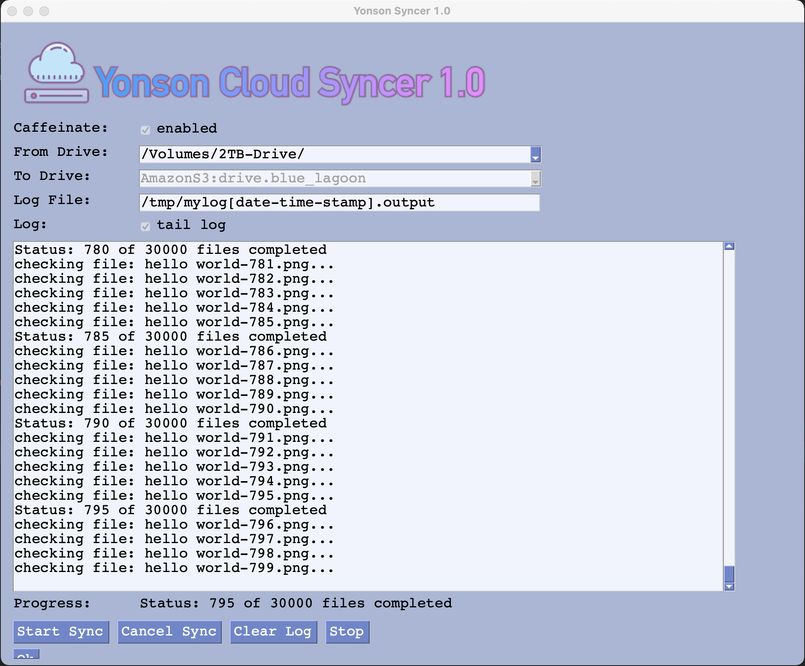
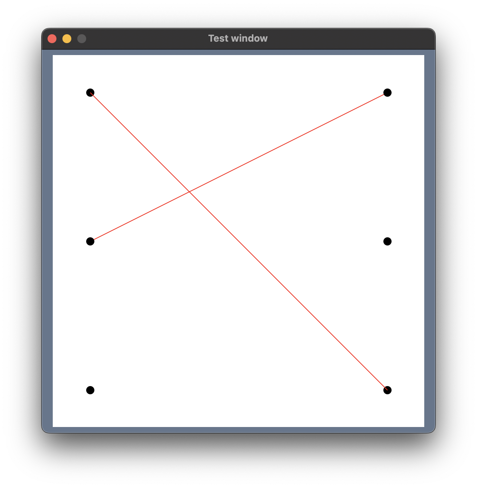
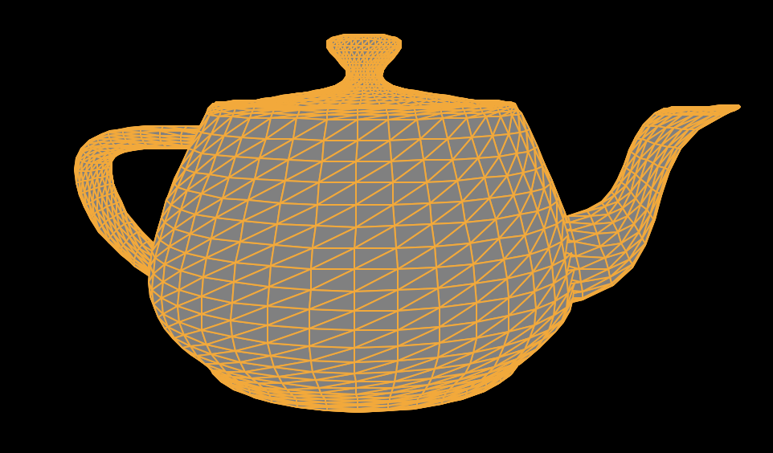
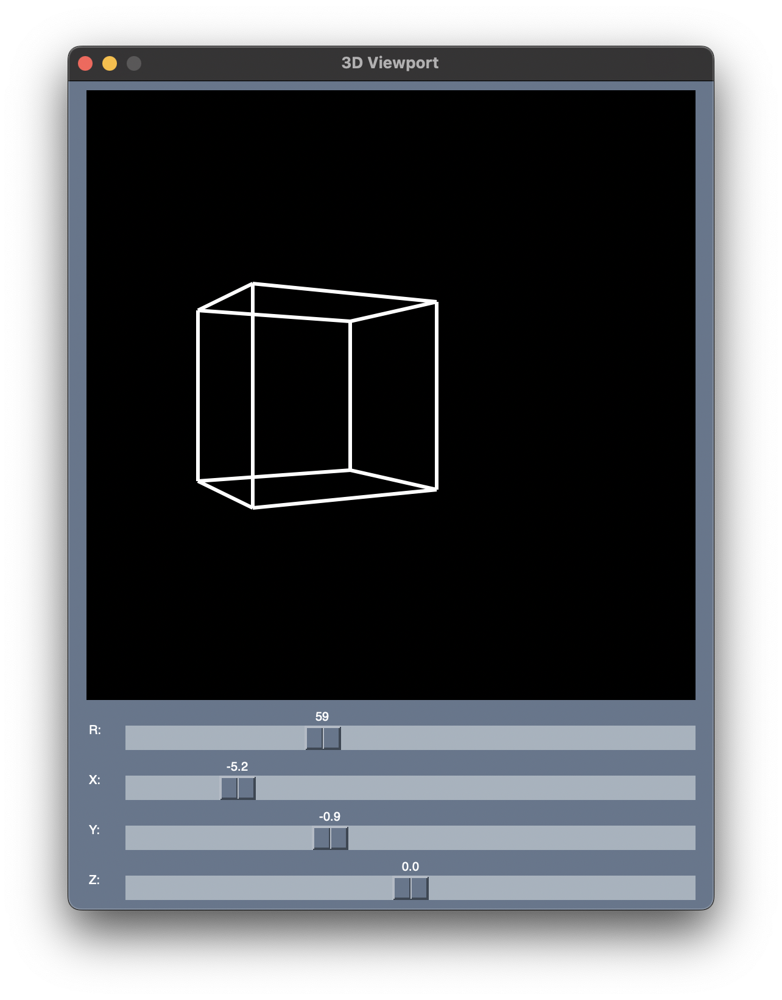
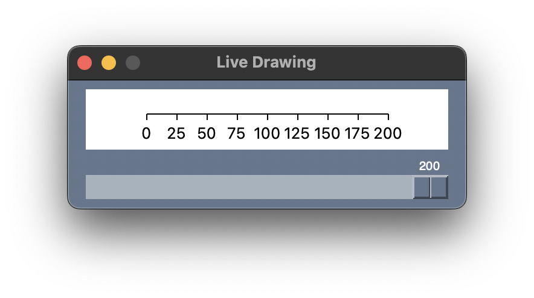
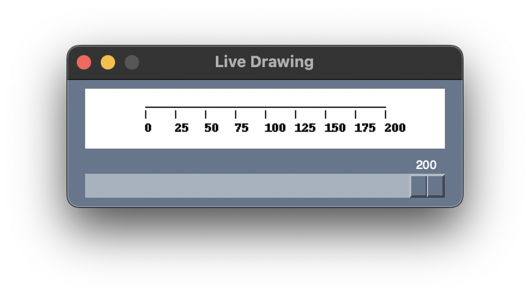
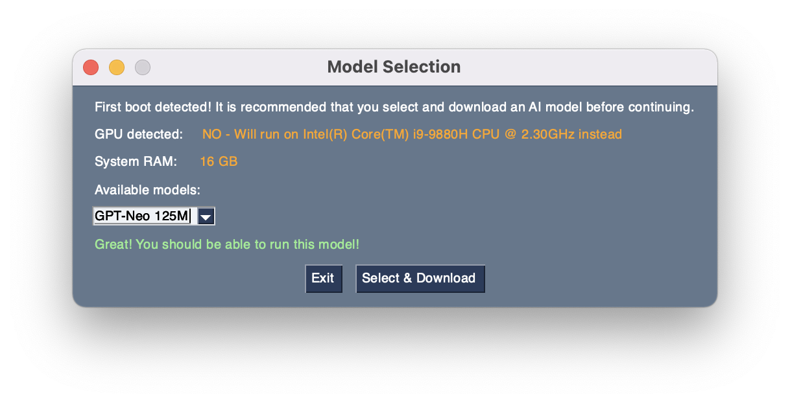
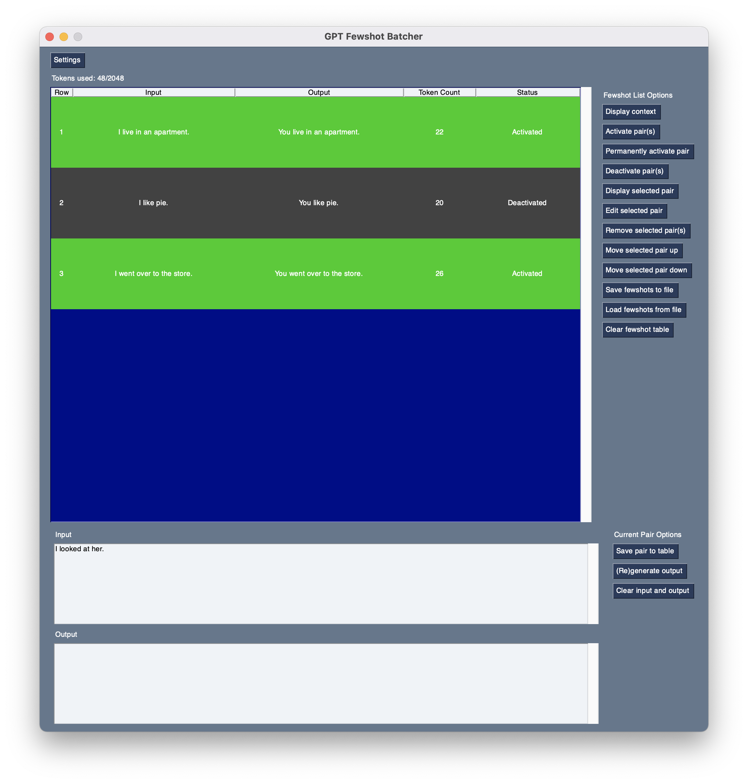
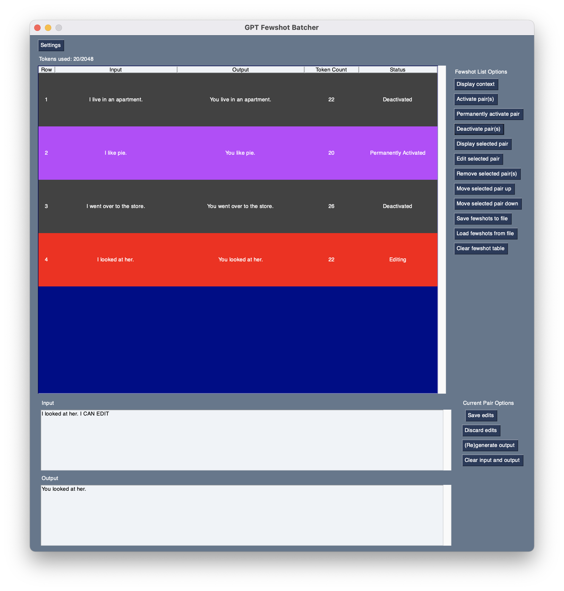
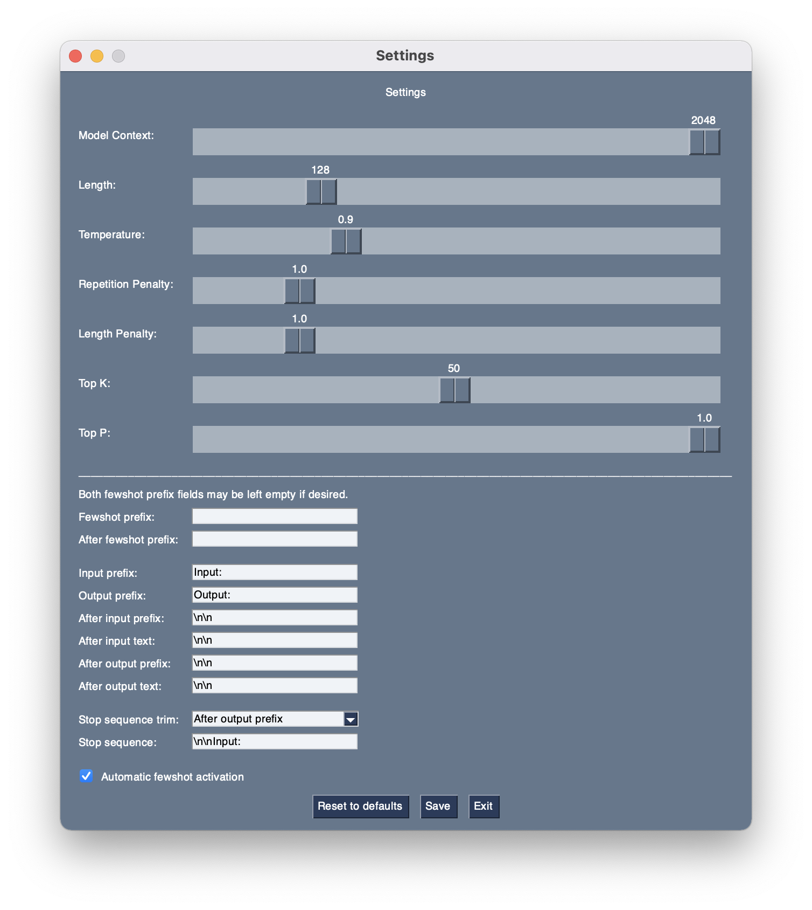

kcl1s 2024-11-08T16:24:36Z
I could not find a searchable combo box example in the demos so this is my attempt to simulate one with a popup.
Code can be found here https://github.com/kcl1s/PySimpleGUI-Tips/blob/main/psgt018SearchCombo.py
I also made a video about the code https://youtu.be/G0A_eceWfcM
Anxiemon 2024-06-15T17:53:20Z
Heya! It has been a long time since I've posted anything here (bc I don't have many ideas for apps that I can make with my skill level lol)
Anyway, I made a text encoding fixer using ftfy! It's pretty basic at the moment, but still.
psst, how do you change the color scheme? I found a cool color palette, but I dunno how to use it
[Answer] https://github.com/PySimpleGUI/PySimpleGUI/blob/master/DemoPrograms/Demo_Theme_Add_Your_Own.py [Answer 2] https://docs.pysimplegui.com/en/latest/documentation/module/themes/ If you type "theme" into the search box at the top of the docs you'll find sections, cookbook recipes, call ref, etc.
PySimpleGUI 2024-06-06T15:29:10Z
I it P-Kaempf!
It never occurred to me that vectors would be a use of lines in a Graph element or I would have added an arrowhead long ago. Thanks for the suggestion and thank you for the beautiful screenshot!
P-Kaempf 2024-05-09T14:26:43Z
OK, now I have had time to shoo the bugs out. This is a Python frontend to some older FORTRAN stuff I have collected over the years. The arrows show the normal vectors of the panels of an airplane, and those should point away from the 'plane in order to allow a potential flow code to work properly.
PySimpleGUI 2024-05-06T11:06:54Z Hi @Anxiemon (Pedro)! I'm SO sorry I missed seeing your post. It's been a while since I checked the screenshots.
Thank you for posting a screenshot!! I love seeing what people are creating. The important thing is that (1) you've got something running and (2) you are actively looking to improve it. That's 90% of the work.
The built-in themes are one way of quickly applying color to a window. Another is to look online at pallets of colors. That's how I made the themes. I'm not very skilled at choosing colors which is why I built a lot of color themes into the code.
Here's a site I've used in the past to get matching color groups: https://colorhunt.co/
I like to use images for buttons sometimes too. That can dramatically have an impact on the user interface. There are some tutorials, cookbook entries and Demo Programs that will help you learn more.
Keep building, and come back and post more screenshots as you build more applications! You're off to a great start! Thank you for sharing.
Anxiemon 2024-04-10T18:43:56Z
Hey! I made a simple text editor to sharpen up my python skills, and rebuilt it with GUI using PSG.
Here's my screenie!
also, psst, any tips for making the GUI look a little better?
jason990420 2024-03-14T20:32:02Z
My suggestion is to add the option expand_y=True for the height of Input elements, maybe it will look better.
import PySimpleGUI as sg
layout = [[sg.Input(expand_y=True), sg.Button("Button")]]
window = sg.Window("Title", layout).read(close=True)
zaricj 2024-03-14T14:29:58Z Hey, I've been building a XML Parsing and Evaluation Program. It uses XML XPaths to search for matching elements in XML File(s) and write found matches in a CSV File. A useful tool for my part since I use it to evaluate around 6000-8000 XML files and I need to know which Files contain attributes with specific values I have also implemented a CSV Conversion to Excel, Markdown and HTML via Pandas in a second Tab.
Here is a screenshot of the main XML Parsing and Evaluation Tab!
PySimpleGUI 2024-02-14T17:21:24Z WOW @darkvip57
I LOVE your application! (You get the extra large hearts).
It's so.... clean... so.... polished.... with custom controls that make your application look nothing like a tkinter-based-GUI.
Thank you for the kind words. It's always nice to hear when someone's had a pleasant experience.
darkvip57 2024-02-14T12:37:58Z Just finished a revised version of my radio player - thought I would post a picture here. I have been writing Python code for a few years and PySimpleGUI is an excellent toolkit for building GUI applications.
(edited by mike so that the screenshot is visible in the documentation)
PySimpleGUI 2024-02-04T15:07:50Z @SuppliedOrange ... sorry it's taken me a bit to write a comment. I was thrilled on many levels to see what you created at a really young age.
Ambitious!
I love it when people "fail" in a such a spectacularly successful way . You may have failed in your eyes, but looks like a homerun to me. Multi-windows??? Unfortunately multi-windows isn't very well documented in the current docs, but the PSG5 documentation does a better job.
I'm particularly impressed with the custom controls/buttons. Your windows don't look at all like a "dated tkinter window" which is frequently said about PySimpleGUI windows. It's not a massive undertaking to polish a PySimpleGUI program with custom graphics, as you've demonstrated.
Young programmers touch a special place in my heart. There has been 3 brilliant young software engineers that have been a part of the PySimpleGUI project. They've each made significant contributions technically and personally. I'm energized and motivated when I see the passion that young programmers have for programming. It's immediately obvious seeing creations like you've made that you're a creative person that loves programming.
I was fortunate to have stumbled onto programming at a young age and instantly felt like it was what I was born to do. I don't know why I felt that way, 47 years ago when accessing a computer took real effort, but I did with all the energy I had. It's a thrill, and I feel really fortunate, to get to see and be a part of young people falling in love with programming. I didn't foresee any of this happening, but really happy it has.
Thank you for the story and sharing your history! "Fail forward" is a term I think fits what you've done. Keep failing!
PySimpleGUI 2024-02-04T14:34:55Z Wow @Nama ! And really proud I believe you should be and have earned! That's an awesome interface!
Fun! It's a lot of fun working with the Graph element and being successful at making a program you can interact with in a custom way visually. The Graph element is one of the things I'm the most proud of with the project. It's enabled me to do things that I would have either been unable to do or would have taken too long.
It's also the gateway to creating custom elements, something I want to revisit when we get PySimpleGUI 5 shipped (we had a last second delay that stopped yesterday's release... it's honestly close...).
Thank you for this awesome motivational boost this morning! I seeing all these creative programs. And thank you for posting an image (two even) in your readme.
Nama 2024-02-04T13:47:15Z
For my fan control tool SuckControl I was working on a new GUI and was really proud on this one:
SuppliedOrange 2024-01-28T04:52:47Z PySimpleGUI aided in my first "ambitious failure". I made a little social media app in 11th grade (3 years ago) when I knew a decent amount of python. I had big plans for it and ended up getting a reality check. This was still a very educational experience and I have you guys to thank!
I don't think you'd be happy to see how I abused your code to reuse window layouts or it's ability to make as many children windows as it likes, so I'll keep it with myself for now.
My first GUI project also used PySimpleGUI. I made EmberKey when I was new to python and really helped me get a nice headstart.
Here's a few shots of a presentation I made for the class: (everything you see in this picture other than the logo is a button that does something.)
And for a little collage:
PySimpleGUI 2023-11-30T11:26:31Z
This was my first GUI project.
Thank you @sfreemire for sharing your project and the information that this was your first GUI project. Knowing PySimpleGUI pretty well, I can envision your layout's code just by looking at your window, even though it has quite a lot to it. Trying to envision the same code using the other frameworks I've used feels overwhelming for me. Like you, PySimpleGUI was my first GUI project.
I love the colored text detail, use of frames for dividing up the window space and the clean, orderly design. Very inspiring and educational.
sfreemire 2023-11-29T21:08:48Z IP_MAP_Calculator
A visual calculator for network engineering using the MAP-T protocol (RFC 7599) https://github.com/sfreemire/IP_MAP_Calculator
- Calculates network parameters from MAP-T rules
- Illustrates how network parameters are derived from rules and IPv6 prefixes at the bit level
- Dynamically displays new values and bit field changes (with highlighting) as rule parameters are changed with sliders
This was my first GUI project. Many thanks to PySimpleGUI for the package, and their excellent support!
PySimpleGUI 2023-11-25T18:47:54Z
Thank you so much @splatert for the screenshots, the complements and the mention in your readme.
All are certainly appreciated! It's awesome to see your GUI front-end. I really like the idea of people making their own user interfaces to go onto the front-end of other applications like you've done. Very nice!
splatert 2023-11-19T04:48:55Z Hello. I would like to thank you for the awesome UI framework you built as it really does help create interfaces in a really simple manner. I've given credit to you on my project's readme file and provided a link that leads to your github page.
With the power of your library, I've created an alternative UI frontend for SpotDL. A tool for downloading Spotify tracks using URLs that you provide. Now SpotDL does have their own interface which is loaded onto the web browser but It felt like it was slow as it took a couple of seconds to start up, which is why I wanted to create my own.
The way this frontend is used is that you provide each link into the interface's textbox then hit the plus button to pass them to a list of URLs (which then the listbox shown above displays the urls list).
Upon providing URLs, you then press the download button to initiate the download process (given that you provide the SpotDL executable).
If the control shown above is checked, the program would ask you to provide a name for the folder you want to create and send downloaded songs to. Prompt dialog is shown below.
Pressing OK will assign the folder name to a string variable then tell the program that you want to create a folder.
Pressing Cancel or having the checkbox mentioned above unmarked would not tell the program to create any folders.
After information is provided, the program executes SpotDL with the links you entered passed as arguments and will wait for it to complete the download job.
After the download job is finished, songs get transferred over to the frontend's music directory and you will get a message saying that the download process has been completed.
Here's a link to the project repository. https://github.com/splatert/spotdl-ui
SaSp73 2023-11-07T15:52:58Z Thanks for your kind words. I will send you the code in a couple of days when I return back home. It need some extra hardware (PICAN-M board, Adafruit ADC and BME280 barometer), but you will manage to get around this with a little bit of tinkering. Basically the whole control is a graph with elements redrawing according to the calculated data...
BTW, a Rotate_Figure(figure_id, center_point, degrees_of_rotation) would be very helpful (I will open a suggestion later)
PySimpleGUI 2023-11-07T14:22:15Z WOW @SaSp73 !!
Truly mind-blowing and very inspiring to see. I've never seen anything like this done with PySimpleGUI! One of the things I love about this project are the surprises by what people create.
I would love to see how you did some of the things you did if you ever care to share the code (even privately would be great.... I'll be confidential. I'm curious what features were helpful).
Thank you so so much for sharing.
SaSp73 2023-11-07T09:35:57Z
This is my use of PySimpleGUI, a program reading NMEA200 networks, running on raspberry pi 4, and presenting various data used for sail racing.
PySimpleGUI 2023-10-26T09:38:54Z We're on very similar wavelengths @ikeman32. It's great to see some add-on tools to help users.
As part of the PySimpleGUI 5 release of the PySimpleGUI applications and add-on modules, I've written a GUI tool that creates all of the necessary files to upload a PySimpleGUI application to PyPI, opening up distribution of Python applications to PySimpleGUI users. We've been releasing tools via PyPI for some time. "psgresizer" is a good example. Users can pip install it and then once installed it can be run by typing "psgresizer" from the command line. There's already a tool, psgshortcut, that takes it all a start further by making shortcuts (icons) that can be pinned to the taskbar or double-clicked.
The idea is to make distribution easy as well as the result be familiar feeling. The command line isn't a normal part of a normal Windows user's world, so getting it out of the way entirely makes a lot of sense. I've just about got the final tool finished that will make it all work end to end.
ikeman32 2023-10-25T21:58:09Z I have created a simple bash script to initialize a PySimpleGUI project. It can be found here: https://github.com/ikeman32/ScriptHelpers/tree/main/devscripts
It's very basic at the moment, but functional. For Windows users, I do have an AI-generated port, but it remains untested as I gave up my Windows addiction in 2017. I may eventually create a platform-independent version of the script using Python.
I do accept code contributions, so if there are Windows users that want to develop a Windows batch equivalent or a Python version of this script, see the README. Or you can code your own.
PySimpleGUI is an absolute God-sent for me. I like simplicity, and I am also lazy, so if there is an easier way to do something, I'm all for it. I'm also in the planning stages for a visual editor/IDE for PySimpleGUI applications.
maria-korosteleva 2023-10-23T09:26:11Z @PySimpleGUI Thank you very much for your kind words! 🥰
PySimpleGUI 2023-10-21T16:11:14Z
Wow @maria-korosteleva what an incredible application! I love what you've created!
I've never seen anything like what you've made. There's clearly a lot going on with your work than just a GUI. I had never thought about the intersection of CAD and making garments. It's a fascinating use of technology. I really appreciate you taking the time to post a screenshot and letting us know about your project.
maria-korosteleva 2023-10-20T11:52:13Z I've used the framework to build a garment design configurator in my latest research paper on programmable garments =) https://github.com/maria-korosteleva/GarmentCode https://igl.ethz.ch/projects/garmentcode/
onyx-and-iris 2023-09-06T00:00:13Z A small remote utility for Voicemeeter, designed to work with the NVDA screen reader.
https://github.com/onyx-and-iris/nvda-voicemeeter
Thanks for creating PYSimpleGUI, first time using but very impressed!
definite-d 2023-08-26T16:34:23Z Themera v2.1.0 has been released (available here). I'd like to share screenshots and point out that with Windows 11, the color of the "built-in" titlebar can be customized. I accomplished it within Themera with a bit of a non-standard solution, but it's proof of concept.
luisegarduno 2023-06-25T05:18:40Z Chess (updated!)
Originally added/created by @MikeTheWatchGuy, the chess demos (player vs. player & player vs. Ai) were included in PySimpleGUI (see here), but were removed from the main branch towards the end of 2022.
In terms of the changes that I made to the original code (see #5052):
I updated requirements.txt to include the latest versions:
I then made changes within both of the demo files to remove any outdated or deprecated code causing errors. I also added compatibility for Linux, allowing users to import files that do not end in ".exe".Both chess demos have only been tested on Ubuntu 20.04 but should also work on Windows since not much was changed from the original code. Lastly, for the engine, I resulted in having to use Stockfish 13, since there was several issues when trying to use Stockfish 14 or Stockfish 15.
https://github.com/luisegarduno/ChessGUI
mrtnbm 2023-05-25T16:24:22Z Thanks to PSG, I've created the nicest GUI I've ever made that I'm now using for my own little naive prompt lib.
-
Main window:
-
Edit Window:
The heart can be clicked and will change to outline or fill mode.
- For reference, here is a screenshot without rescaling:
eagleEggs 2023-05-24T04:03:28Z Started this a few days ago. Thanks to PSG it has already proven the hypothesis as valid - Streamlining novel development in a curated parameter driven manner with op3nAI API. Much more functionality to add in, but what an amazing GUI framework <3 <3 <3 And thanks to @jason990420 for all of the tkinter hacks he's posted which has always covered everything I've needed :)
gnuchanos 2023-05-24T02:35:07Z
not finish yet
PySimpleGUI 2023-05-12T09:55:03Z I saw this awesome screenshot:
posted in the readme for this project:
https://github.com/bsanders2/FrosthavenApp
It's got a nice design and the custom buttons look great.
zaricj 2023-04-19T09:55:26Z I've been using PySimpleGUI to make a GUI for the Chocolatey Package Manager, thought of sending a screenshot of it here.

Thanks for this amazing module, I'm really having fun learning it!
PySimpleGUI 2023-03-16T18:56:49Z
@ssweber the color scheme looks like the GrayGrayGray theme to me which means no colors will be added (all system defaults will be used). The important feature that's adding the images is either Image elements or Button elements. Using a Base64 version of images will enable you to drop them directly into your source code. The PySimpleGUI application psgresizer is very helpful in enabling you to quickly add button graphics to your application.
Here are some steps I followed:
- I made a video of a session where I took images that I clipped from @lucasmartins19 's application and saved them as PNG files
- Used
psgresizerto convert each PNG file into a Base64 string - Pasted the Base64 string into my test program
- Created a layout that used these Base64 images using the
Imageelement.
My layout looked liket his:
layout = [ [sg.Text('Base64 Images Example')],
[sg.Image(b1, key='-I1-')],
[sg.Image(b2, key='-I2-')],
[sg.Image(b3, key='-I3-')],
[sg.Button('Go'), sg.Button('Exit')] ]
When I ran the code, this is the window I saw:

If you enable events on the Image elements, then you'll get an event when the image is clicked.
layout = [ [sg.Text('Base64 Images Example')],
[sg.Image(b1, key='-I1-', enable_events=True)],
[sg.Image(b2, key='-I2-', enable_events=True)],
[sg.Image(b3, key='-I3-', enable_events=True)],
[sg.Button('Go'), sg.Button('Exit')] ]
Here's how the process to do all this looked:
https://user-images.githubusercontent.com/46163555/225724860-33b5b5ba-9e63-4159-9ccc-825b72aef11a.mp4
lucasmartins19 2023-03-16T14:04:53Z
@lucasmartins19 That looks amazing. Would you mind uploading that to a repository? I’m working on a general purpose pysimplegui toolkit and I really like your color-scheme /buttons. Would like to see how you put that all together.
Thank you!
Currently, I have a private one to manage everything and provide updates through GitHub. However, I will create a new private repository and invite you as a collaborator. Please feel free to ask me if you need any help understanding anything.
ssweber 2023-03-16T13:22:48Z @lucasmartins19 That looks amazing. Would you mind uploading that to a repository? I’m working on a general purpose pysimplegui toolkit and I really like your color-scheme /buttons. Would like to see how you put that all together.
lucasmartins19 2023-03-14T21:50:57Z Hi! I developed this simple application using PySimpleGUI to help my cousin manage his optics lab. Don't mind the data, it was randomly generated for testing purposes.


josu-dev 2023-02-14T12:29:42Z
Thank you @J-Josu
for sharing your program and your story. I love hearing when students use PySimpleGUI! I'm glad it went well. The screenshots look great!
Code annotation too? Do you have a GitHub Repo with your code?
I'm impressed by bi-lingual programmers. It's hard enough coding, reading, writing, and thinking just in English. Throwing another language on top of all that is next-level stuff. Really happy you posted what you've made!
Hi @PySimpleGUI, yes i have uploaded the project to the following repository
Thanks you for all!
chanon-kr 2023-02-14T06:27:10Z Hi, I use PySimpleGUI to make a Simple Object Detection GUI with YOLOv8.
Check my GitHub repo from this link.
And here is a screenshot of the GUI.

Thanks to @PySimpleGUI for suggestions and improvement!!
PySimpleGUI 2023-02-08T22:16:35Z
Thank you @J-Josu for sharing your program and your story. I love hearing when students use PySimpleGUI! I'm glad it went well. The screenshots look great!
Code annotation too? Do you have a GitHub Repo with your code?
I'm impressed by bi-lingual programmers. It's hard enough coding, reading, writing, and thinking just in English. Throwing another language on top of all that is next-level stuff. Really happy you posted what you've made!
josu-dev 2023-01-30T13:20:08Z Hi! I'm a stundent of Computer Science in Argentina and i`ve had to do a Final project for my Python Course. The project its about a card game where you can choose between availible themes to try to guess the correct option. The data is automtically loaded from cvs.
Here are some screenshoots of the final result:


And other pages...
All the ui its in spanish, but the code all written in english. The project includes a mini-framework to build pages easly and some cli utilities. Also the code have all the corresponding typing annotations and more interesting stuff.
PySimpleGUI 2023-01-29T15:31:26Z
@eagleEggs I briefly saw a version of this GUI and then it disappeared. I'm THRILLED you've posted it. 
Thank you so very much for sharing your talent in using PySimpleGUI. You're such an expert now and I SO appreciate you being here since the early days.
That's a beautiful window.... just plain beautiful!
Your support and encouragement have been really appreciated.

eagleEggs 2023-01-28T02:30:37Z PSG WOOOHOOOO. Super fast implementation of this thanks to PSG. We were able to jump straight into core code, and add new things on the fly in minutes. This is a vulnerability management / parser, scanner... and moreeeee.


Thanks again PSG <3
hseera 2023-01-04T23:30:35Z Using PySimpleGUI framework, I built an opernsource tool called "CloudWatch Dashboard Builder" for SRE, Performance Engineers and Operations teams, who work with AWS services. It gives them capability to build CloudWatch Dashboard from different Namespace templates. The tool lets you modify the template too.


And here is a link to youtube video showing how I am using this tool built with PySimpleGUI framework to create dashboard through the tool or through the generated JSON.
https://www.youtube.com/watch?v=tPCHCc-GiHM
PySimpleGUI 2022-12-19T00:24:35Z @kubilayyalcinyt Let's move the detailed discussion of your questions over to your previously opened issue #6028 rather than this issue which is for users to post screenshots of applications.
gnuchanos 2022-12-18T21:41:57Z
 this is what ı say ı can't do like my tiling manager
this is what ı say ı can't do like my tiling manager
gnuchanos 2022-12-18T21:05:02Z okay ı try example finish ı ask again
PySimpleGUI 2022-12-18T20:23:37Z @kubilayyalcinyt - this looks similar to the window you posted in an issue a month ago. A bit more information about what you're trying to do would be helpful. Feel free to re-open the issue you closed and we'll do our best to help.
gnuchanos 2022-12-18T19:36:12Z

 how ı create like this window first login screen second normal window ı try but ı can't do
how ı create like this window first login screen second normal window ı try but ı can't do
kevinsmia1939 2022-11-27T20:08:24Z
I upload my first app, PySimpleCV to Flathub! Thanks to PySimpleGUI.

eagleEggs 2022-11-21T04:13:28Z @definite-d Could you share the code for your login screen screenshot? Is that with TK??? I'm very curious of how you approached the design for that if it is TK version of PSG - ty.
PySimpleGUI 2022-11-20T17:25:00Z Noticed a couple of screenshots appeared in the readme for @kevinsmia1939 PySimpleCV project and am copying them to here since the one in the original post has gone missing.


grahamperrin 2022-11-19T02:38:40Z A shot of the title bar for the front page of this repo:

PySimpleGUI 2022-11-07T00:31:32Z @kevinsmia1939 it appears your screenshot has disappeared.
A quick reminder to everyone to feel free to copy and paste your images directly into the issue comment. This will make a copy that's permanent to this issue. You can drag and drop an image or copy and paste it from your clipboard. GitHub automatically uploads the image and stores it as part of this repo.
kevinsmia1939 2022-11-06T02:26:54Z
I use PySimpleGUI to create PySimpleCV. PySimpleCV is use for calculation cyclic voltammetry chemical reaction reversibility and battery cycling performance.
https://github.com/kevinsmia1939/PySimpleCV
Very awesome project, thank you.

PySimpleGUI 2022-10-20T17:00:32Z
It's using the main thread and an additional thread to consume the piped process leveraging PySimpleGUI's way to send data back to the main thread.
Reading this triggered me to do a search to see if this design pattern is published as one and I do not believe it has been. I'm thrilled to hear you're doing this!
The PySimpleGUI utility psgtest uses this kind of design pattern. It was use twice before in 2 utilities that @Chr0nicT worked on, psgcompiler and the "Jump Cutter" project. Jump Cutter was for sure the first time we used it in a psg released program. It's a really powerful kind of pattern! It's certainly worthy of being in the Cookbook and a Demo Program in the future.
Very nice when you can do something that's very time consuming and have the main GUI remain responsive. Great window design too BTW. That's a 5 star program!!


deckarep 2022-10-19T18:47:10Z
Created a simple app for my wife to sync her local drives to the cloud. The app takes advantage of PySimpleGUI (of course) along with rclone under the hood by opening it as a subprocess and piping it's data into the app.
The app is designed to be a safe way that she can sync the drives while managing Mac's power management during such a process. She's able to prematurely stop the process, restart it, capture log files and check tail the logs.
It's using the main thread and an additional thread to consume the piped process leveraging PySimpleGUI's way to send data back to the main thread.
Works great so far! (in the prototype state)...will be opening sourcing this at some point.

PySimpleGUI 2022-10-06T20:52:05Z @kcl1s ... Never doubted for a moment you appreciate what we're doing. I didn't do a good job of communicating that I could use a hand in flagging when there are problems, via GitHub issues, and also in finding out the root cause. That's what we're after ultimately... a fix to the problem.
kcl1s 2022-10-06T20:18:51Z @PySimpleGUI. I appreciate all you do with this project as attested by my Paypal contribution a couple weeks ago. Regards Keith Lohmeyer
PySimpleGUI 2022-10-06T17:12:16Z
Hiya @kcl1s I'm as frustrated with the current documentation situation as any/all other users.

The search bug that happens in Chrome that evidently is back is particularly frustrating. The less time I spend on the current ReadTheDocs site, the better overall. These sceenshots in this issue have been added as a couple of tabs, but I'm otherwise putting all of my efforts into the next-generation docs.
It's taking me a very long time to get the work completed, and released, but rest assured that new documentation is coming.

It's the largest and most costly effort in the project's history. A few examples, in addition to a complete overhaul of the format - the other 3 ports have call reference documentation/docstrings the eCookbook is integrated into the documentation as a tab, and significantly more. The search feature is working perfectly. You'll be happy with the results... this I'm sure.
Hint - an Issue about the search is going to be of more help to the project than a hint in the screenshots area.
It's great to see more of your work!  Keep building!!
Keep building!!
kcl1s 2022-10-06T13:16:36Z I am a hobbyist learning Python and have been looking at Beautiful Soup and web scraping. Since the search feature is down again for the psg docs (hint hint!) I thought it would be a good bs4 exercise to try scraping all the internal links on pysimplegui.org and make a crude search engine. Not really a great psg project but I thought I would share some shots. Code can be found here https://github.com/kcl1s/python/blob/master/psgSearch.py


PySimpleGUI 2022-10-05T09:10:12Z Hi all! Really sorry for the delay in responding... there is so much to be excited about.
@definite-d LOVE IT! Haven't forgotten about your open issues and please be sure and look at the change made to menus recently so your theme changing picks up that change. You have nailed the point about "simple "not being limiting. In the docs I'm working on, I'm describing this "emergent" effect that simplifying has triggered. These user screenshots are an important part of explaining the point. Making operations simple, approachable, and accessible has enabled users to customize applications in ways far beyond what's normally accomplished in Python GUIs. The Simple Syntax has resulted in Complex Interfaces.
@kcl1s You continue to crank our some incredible projects! Thank you for posting them here! They're getting seen by quite a lot of people that use the documentation. People love seeing pictures and what a beautiful one you posted. Simple but beautiful just the same. And what it does is incredible!
kcl1s 2022-10-03T19:01:04Z
This is my latest project using PySimpleGUI. I just got a laser engraver and needed a way to convert .jpg clipart to .png and remove the backgrounds without dealing with a graphics program or online converter. I had luck creating a 12 line "proof of concept" script so I decided to use my favorite GUI to make it easy to use. I can remove white or black backgrounds with a slider to give some tolerance. I did a video of the process https://youtu.be/MZuxuoPsHcw I then found a way to do the conversion 100+ times faster with Numpy instead of Python loops so I documented that in this video https://youtu.be/WXISlAzddFA I also put the code on gitHub https://github.com/kcl1s/python/blob/master/TBGpsgNP.py

infinitepower18 2022-10-03T12:02:17Z That reskinner may be useful when paired with darkdetect :)
definite-d 2022-10-01T16:38:20Z Hello @PySimpleGUI.
I'd like to show you my latest attempt at a modern GUI, built with PySimpleGUI, featuring a custom modern HTML-style input element, rounded buttons, a custom theme and real-time theme changing.

I can bet people would fail to realize that that's a PSG program without prior context.
You were right when you said in the docs that the 'simple' in PySimpleGUI doesn't mean one can't make fantastic things with it.
physcofury 2022-09-25T10:00:25Z
Here is the MP4 converted to GIF for the screenshot that @physcofury posted. GIF is required for the screenshot to appear in the screenshots tab of the docs.

Ah thankyou didn't think i could make a gif, i'll be sure to post a gif of my POS when it's finished
PySimpleGUI 2022-09-24T15:34:14Z
@physcofury why didn't you pick something a little more ambitious for your first project? A multi-window point of sale system with an onscreen keyboard? That's really incredible actually!

7 months since starting to learn Python? Wow.... fast learner!
PySimpleGUI 2022-09-24T15:11:30Z Here is the MP4 converted to GIF for the screenshot that @physcofury posted. GIF is required for the screenshot to appear in the screenshots tab of the docs.
physcofury 2022-09-22T13:03:58Z https://user-images.githubusercontent.com/69250387/191753453-903bb44f-95a4-4992-8f9e-3c30add7af14.mp4 I using PSG to create a POS system as my first coding project started learning python roughly 7 months ago the entire program is definitly still work in progress also im designing this to be used on windows touchscreen
PySimpleGUI 2022-09-20T16:21:44Z The newest test harness with location of python executable

vasja34 2022-08-26T10:39:11Z Hi there, Here are some screenshots of my Chat Rooms Project. https://github.com/vasja34/Chat-Rooms-Project


dennisbyington 2022-08-24T17:45:32Z Hi all,
Here's a screenshot from a Wordle clone I made to learn GUIs. I used PSG after a few failed attempts with other GUI libraries - luckily PSG was far easier to understand and implement. Thank you for building a great product!
Repo: https://github.com/dennisbyington/wordle_gui

PySimpleGUI 2022-08-12T17:48:51Z
Very nice @kcl1s !! Love it! 
It's not common to see screenshots from a Pi. The bonus of it being used to teach students AND having an accompanying YouTube video gets you extra credit!
Thank you so much for sharing it. I've passed it around to several friends and other people working on the project that don't follow the GitHub.
And of course, thank you for the kind words... they help a lot!
kcl1s 2022-08-11T18:55:00Z
Been a while since I have posted a project using my favorite GUI.
This is Python on a RPi. I created a stand alone lab project to help students measure the speed of sound using an ultrasonic sensor. I have an explainer video on YT https://youtu.be/uA4RKeCI7r4
Thanks for the great library!

pithoner 2022-07-30T01:07:47Z
Hi there, here are some screenshots of a fairly simple inventory manager that I'm working on. It uses an sql database to store the information.


infinitepower18 2022-07-17T10:53:53Z The new MSIX version of my application is now in the Microsoft Store! Feel free to check out the first PySimpleGUI program packaged into MSIX 🙂 https://www.microsoft.com/store/apps/9NMFSJB25QJR
(You need Windows 11 or else it won't let you install.)
PySimpleGUI 2022-07-10T06:13:54Z @schlopp96
As you can see, I've developed a rather simplistic style prioritizing functionality and simplicity... Maybe not the prettiest of GUIs, but very functional and to-the-point!
PySimpleGUI You're right in my groove, my way of looking at the world. Sometimes the pretty part gets so in the way that the functional part never happens. Personally, I like software that runs and does the job much more than software that's pretty but only runs in my head, never to be seen by others. An author friend from decades ago used to say that shipping something that's not perfect is a lot better than never shipping something that is perfect.
Over the past 4 years, the overall "beauty" of PySimpleGUI has improved at a steady pace as can be seen in the screenshots from the initial release.
 I had SO much to learn and still have more to learn. These were on day 2 of PySimpleGUI's release.
I had SO much to learn and still have more to learn. These were on day 2 of PySimpleGUI's release.

infinitepower18 2022-07-10T05:21:41Z
Working on packaging my app into MSIX for Microsoft Store distribution and the results are looking really promising! Just need to fix some working directory related issues. The benefit of packaging into MSIX is seamless installation, updating and uninstallation. 2022-07-06.20-39-16.mp4 I will probably publish a tutorial soon on how to package your Python project into MSIX as there's hardly any information about it.
@infinitepower18 That looks dope!
I've personally had a lot of issues trying to use pyinstaller with several of my applications that utilize PSG, especially if they involve multiple other packages; I'll definitely be looking forward to any tutorials you decide to upload!
I really like the easy-looking install/uninstall process and smooth setup that MSIX appears to have.
Pyinstaller has issues related to being falsely detected by antivirus software, which is why I use Nuitka instead. Yes, it may take time to compile the application (takes nearly 10 mins on my laptop) but it's worth it and you won't face any false virus detections.
I submitted it to the Microsoft Store and right now it's awaiting approval, but I can give an explanation of what I did:
-
Compile the application using Nuitka, for a general idea of how to do it you can refer to this: https://nuitka.net/doc/user-manual.html#use-case-4-program-distribution
-
Once the application is compiled, the dist folder contains the files that you package for distribution. Create an installer using Inno Setup
-
Once you have the installer created, you then create a virtual machine and get all the updates installed. This is important because it's not gonna create the MSIX properly if you run the packaging tool on your main OS, you have to do it on a VM. Also, make sure you created a snapshot of the VM before packaging your app as you will need to revert to it once the process is over.
-
Download MSIX Packaging Tool on the VM and follow the instructions to create a package. For the certificate part follow these instructions
-
Install the generated certificate so that you can install the MSIX, watch the below video to see how it's done properly:
https://user-images.githubusercontent.com/44692189/178132315-a79300b9-e9dc-4bd3-b5d6-532ea5a2d8a3.mov
The generated certificate is mainly for testing purposes. Once it's uploaded to the Microsoft Store it will sign it for you and users can download it from Microsoft Store without any issue. Yes, sideloading is possible but it will need a trusted certificate, I think MS Store will let you download a signed version afterwards that will install fine but will need to see once my app is approved.
If I recall I didn't have to make any changes to my code for Nuitka to compile properly but for MSIX I did face issues related to working directory due to the way they're run. So it depends on how your app works and you may need to refer to Microsoft docs. In the end I could get my app to run properly but it took some time to figure things out.
schlopp96 2022-07-10T02:17:23Z
Working on packaging my app into MSIX for Microsoft Store distribution and the results are looking really promising! Just need to fix some working directory related issues.
The benefit of packaging into MSIX is seamless installation, updating and uninstallation.
2022-07-06.20-39-16.mp4 I will probably publish a tutorial soon on how to package your Python project into MSIX as there's hardly any information about it.
@infinitepower18 That looks dope!
I've personally had a lot of issues trying to use pyinstaller with several of my applications that utilize PSG, especially if they involve multiple other packages; I'll definitely be looking forward to any tutorials you decide to upload!
I really like the easy-looking install/uninstall process and smooth setup that MSIX appears to have.
infinitepower18 2022-07-06T14:42:25Z Working on packaging my app into MSIX for Microsoft Store distribution and the results are looking really promising! Just need to fix some working directory related issues.
The benefit of packaging into MSIX is seamless installation, updating and uninstallation.
https://user-images.githubusercontent.com/44692189/177577315-e297e19c-661b-4531-bdea-a7cb3a2e1bea.mp4
I will probably publish a tutorial soon on how to package your Python project into MSIX as there's hardly any information about it.
schlopp96 2022-06-27T04:35:24Z Yo! Here's some quick screenshots of several applications I've created lately:
From PyFiTransfer:

From V2Mp3:

As you can see, I've developed a rather simplistic style prioritizing functionality and simplicity... Maybe not the prettiest of GUIs, but very functional and to-the-point!
EdwardChamberlain 2022-06-24T23:21:02Z A quick demo differentiating 'release', 'down' and 'drag' events from the graph. Perhaps there is a simpler way to do this? 
import PySimpleGUI as sg
def draw_points(points, connections, canvas: sg.Graph):
for p in points:
canvas.draw_circle(p, 2, 'black')
for c in connections:
canvas.draw_line(c[0], c[1], 'red')
def find_closest_point(xy, points) -> tuple:
x_1, y_1 = xy
dists = [
sum(
map(
lambda x:x*x,
(x_1 - x_2, y_1 - y_2)
)
)
for x_2, y_2 in points
]
return points[dists.index(min(dists))]
points = (
(-80, 0),
(-80, 80),
(-80, -80),
( 80, 0),
( 80, 80),
( 80, -80),
)
connections = []
layout = [
[
sg.Graph(
canvas_size=(500, 500),
graph_top_right=(-100, -100),
graph_bottom_left=(100, 100),
background_color='white',
enable_events=True,
drag_submits=True,
key='GRAPH'
)
],
]
window = sg.Window("Test window", layout=layout, finalize=True)
draw_points(points, connections, window['GRAPH'])
BUTTON_STATE = 'up' # set initial button state
while True:
event, values = window.Read()
canvas: sg.Graph = window['GRAPH']
xy = values['GRAPH']
if event == sg.WIN_CLOSED:
break
if event == 'GRAPH' or event == 'GRAPH+UP':
if event == 'GRAPH+UP':
BUTTON_STATE = 'up'
event = "GRAPH+RELEASE"
elif BUTTON_STATE == 'up':
BUTTON_STATE = 'down'
event = "GRAPH+DOWN"
elif BUTTON_STATE == 'down':
event = "GRAPH+DRAG"
if event == 'GRAPH+DOWN':
start_point = find_closest_point(xy, points)
canvas.erase()
canvas.draw_line(start_point, xy, 'red')
draw_points(points, connections, canvas)
if event == 'GRAPH+DRAG':
canvas.erase()
canvas.draw_line(start_point, xy, 'red')
draw_points(points, connections, canvas)
if event == 'GRAPH+RELEASE':
end_point = find_closest_point(xy, points)
canvas.erase()
canvas.draw_line(start_point, end_point, 'red')
draw_points(points, connections, canvas)
connections.append((start_point, end_point))
jerrylususu 2022-06-23T13:21:50Z
Thank you SO much for posting the screenshots @jerrylususu !
Your code inspired the new section that I just created in the eCookbook!
Here's the page with your code. We still need to solve the character set problem.... and I definitely want to get your information into the header of the code.
https://pysimplegui.trinket.io/demo-programs#/user-submitted-examples/language-selection
Thanks for the inspiration!
Good to know! The problem of not display Chinese characters is probably caused by missing fonts. To workaround this and show the usefulness of my snippet, I added a French selection which seems to work in the online environment. Hope that helps!
PySimpleGUI 2022-06-23T13:13:46Z Thank you SO much for posting the screenshots @jerrylususu !
Your code inspired the new section that I just created in the eCookbook!
Here's the page with your code. We still need to solve the character set problem.... and I definitely want to get your information into the header of the code.
https://pysimplegui.trinket.io/demo-programs#/user-submitted-examples/language-selection
Thanks for the inspiration!
jerrylususu 2022-06-23T13:05:19Z Simple i18n technique for PySimpleGUI programs: Show a language selection window when program starts, then load the translated strings in the selected language.
Code: https://github.com/jerrylususu/PySimpleGUI-Demo-LangSelect
Screenshot

PySimpleGUI 2022-06-20T16:42:25Z
M""MMM""MMM""M MMP"""""YMM M""MMM""MMM""M dP dP dP
M MMM MMM M M' .mmm. `M M MMM MMM M 88 88 88
M MMP MMP M M MMMMM M M MMP MMP M 88 88 88
M MM' MM' .M M MMMMM M M MM' MM' .M dP dP dP
M `' . '' .MM M. `MMM' .M M `' . '' .MM
M .d .dMMM MMb dMM M .d .dMMM oo oo oo
MMMMMMMMMMMMMM MMMMMMMMMMM MMMMMMMMMMMMMM

What a way to show the love! 
That's incredible!!
I'll be smiling bigger than the Emoji the rest of the day!
ghost 2022-06-20T16:22:36Z
 i did something like this
i did something like this

PySimpleGUI 2022-06-20T11:28:20Z

Hi @ArchKubi .... I suppose you could call this little fella our "mascot". I had a set of emoji's created a while back with the PySimpleGUI logo on the chest so I can use them within PySimpleGUI for testing, error messages, etc. They've added some personality to the project.
ghost 2022-06-18T12:50:10Z
 is this pysimplegui mascot right?
is this pysimplegui mascot right?
ghost 2022-06-15T10:41:07Z
 is this bug icon not change ?
is this bug icon not change ?
ghost 2022-06-13T11:49:29Z
 ı lose my hope ı don't know how ı write like this and ı try autocomplete but ı feel ı'm idiot please someone help my code
gnuchan-textEditor.txt
ı lose my hope ı don't know how ı write like this and ı try autocomplete but ı feel ı'm idiot please someone help my code
gnuchan-textEditor.txt
lonewanderer27 2022-06-12T17:56:41Z Wow I did not expected a core dev to reply to my post! Thank you so much @PySimpleGUI! You made my day after I just worked through a whole day in implementing all the functionalities in Extracting Scripts Tab
The app is sort of complete now but I haven't tested it on Windows as I daily drive Linux so I need to make sure it works there as most of Camp Buddy players are Windows users 😭
And I did what you said about the screenshots, I modified a great looking readme template and I put the Extract Assets tab screenshot in there, thanks for the tip by the way!
Keep it up dev!!! and code contributors ofc, who ever you are, with what you're doing with PySimpleGUI. You're making the lives of newbie GUI devs easy with it!
Honestly I've never had so much fun making a GUI application than this in the span of two weeks. Everything was straightforward to implement and everything was in the documentation too. Might be one of the best out there!
You (and other devs) might have possibly thought of every situation a developer might want to implement their app because there is a lot of examples 😭 and I just love it 💕
Especially the cookbook, that's where I learned how to combine window.long_operation_operation and window.write_event_value to make a responsive GUI which by the way I haven't even done in my previous experience with Visual C#, it was a new territory for me but those two methods made it easy to implement a multi-threaded GUI.
Many thanks again!! 😁
PySimpleGUI 2022-06-11T21:59:48Z @VatsalP I totally get wanting to write your own PDF utilities.
One of the first group of utilities I made using PySimpleGUI were for extracting images from PDF files.

A surprising amount of the code still works. The unpacking of the values dictionary doesn't because of how the Browse buttons work now. Windows were not called Window.... they were FlexForm back then. You can still use the FlexForm name as PySimpleGUI tries to be backward compatible as much as possible. The overall PySimpleGUI look of the layout and the names were really close to what's used today.

import PySimpleGUI as gg
form_rows = [[gg.Text('PDF Image Extraction')],
[gg.Text('Choose Source and Destination Folders')],
[gg.Text('Source Folder', size=(15, 1)), gg.InputText('Source'), gg.FolderBrowse()],
[gg.Text('Destination Folder', size=(15, 1)), gg.InputText('Dest'), gg.FolderBrowse()],
[gg.Submit(), gg.Cancel()]]
# (button, (source, dest)) = gg.FlexForm('PDF Image Extract', auto_size_text=True).LayoutAndShow(form_rows)
event, values = gg.FlexForm('PDF Image Extract', form_rows, auto_size_text=True).read()
print(event, values)
PySimpleGUI 2022-06-11T21:43:40Z Hi @lonewanderer27 !
WOW you have a LOT of windows in your application
Love  seeing all those screenshots! If you have a moment, can you perhaps add them to your readme? You can use the links already created in this GitHub Issue. You just need to copy and paste the lines that look like this:
seeing all those screenshots! If you have a moment, can you perhaps add them to your readme? You can use the links already created in this GitHub Issue. You just need to copy and paste the lines that look like this:

and paste them into your readme.md file.
Hearing your program is for a game is honestly thrilling!
There's a lot in your post..... You're using the perform_long_operation method with write_event_value so that you can have a multi-threaded GUI.

That's a smart way to do it.
By the way, I finally wisened up that since there are developers using threading in PySimpleGUI that understands the concept of threading, it may be clearer to use the word "thread".... so.... I created an alias start_thread that is the same as perform_long_operation.
Thank you for taking the time to come share your creation! These stories, screenshots, and hearing what you're all making, is incredibly motivating. It's what keeps me working hard on PySimpleGUI. It results in me wanting to make PySimpleGUI better
VatsalP 2022-06-11T00:30:56Z Made a small gui utility to merge pdf(didn't like idea of using some website to do it)

link to repo in case anyone to download or view source: https://github.com/VatsalP/pdf_utility
lonewanderer27 2022-06-09T09:12:22Z Hi everyone! I'm currently writing a tool of some sort for a Visual Novel game. It mainly targets those who want to make a python chat bot that speaks exactly like the characters from the Visual Novel.
Extracting Assets Tab

The GUI doesn't become unresponsive thanks to perform_long_operation. And the write_event_value made it easy to pass the current file that is being extracted, as well as the current progress of the extraction from a separate python program:
 Though I kinda wish this also works in the QT port as I prefer the look of that instead of Tkinter. But this will do for now!
Though I kinda wish this also works in the QT port as I prefer the look of that instead of Tkinter. But this will do for now!
Extracting Scripts Tab

The layout tools worked very well in keeping the check boxes organized:

About Window
I really like the About window of GNOME / GTK apps so I made mine look similar to it:

The Github Repo link is here for anyone who wants to look at the code, warning it's spaghetti code: https://github.com/lonewanderer27/Camp-Buddy-Toolbox And I am legally required to disclose the code anyway since I used and modified (a bit) the code of the extractor program (which is GPL-3 licensed)
PySimpleGUI 2022-06-08T11:33:09Z
its a bit of a pain when it comes to backwards compatibility.
This is the exact problem with using language features that are specific to a version of Python. It causes one to ponder "what % of the Python community am I willing to leave behind".
Using "All Packages" as a gauge, this was the distribution last December:

And this was in May

If I look at PySimpleGUI users specifically, it was this recently:

It changes day to day. Opinions vary, but I've always felt like users are more likely to pass on trying a package or program than they are to upgrade their Python environment in order to run it.
I've mentioned this a few times over the years. I chose to support 3.4+ to get the most users possible. For Demo Programs, I'm a bit more open to 3.6+ for the Demo Programs and other repos, but don't go any higher than that for the same reason of wanting a big tent.
EdwardChamberlain 2022-06-07T20:23:54Z Thats awesome @PySimpleGUI ! I hadn't heard of Trinket before.
match was new to me for this project - quite a nice addition to the language but being new its a bit of a pain when it comes to backwards compatibility.
PySimpleGUI 2022-06-07T12:48:16Z
I haven't made this available publicly, but I put a hacked up version of your code up on Trinket so a few friends can play with it without having to install Python, PySimpleGUI, etc.. Sorry that I de-3.10'd the code by removing the match.. .but I needed to run the code in a lower version of Python.

https://trinket.io/pygame/5cb3229fe8
PySimpleGUI 2022-06-07T12:31:48Z Thank you!

I needed to modify your path to the .obj file...
Worked great after that.
VERY nice readme file! Looking sharp!!
EdwardChamberlain 2022-06-07T12:23:18Z @PySimpleGUI I have just created a repo for the 3D viewer. I have also added polygon rendering. This is all driven using just maths and the Graph element.

https://github.com/EdwardChamberlain/PySimpleGUI-3D-Viewer
PySimpleGUI 2022-06-07T07:07:21Z @EdwardChamberlain Do you have a repo containing any of these new creations? I would love to run the teapot program for example.
PySimpleGUI 2022-06-06T17:20:18Z WOW @EdwardChamberlain !!
I sent your video to my friend Tim.... who's a veteran in the computer graphics field...
He replied....
That's Jim Blinn's teapot. I am visiting him in July.
"Surround yourself with people smarter than you" is advice I take seriously!
ghost 2022-06-06T02:12:11Z
if one day PySimpleGUI have interactive display this is make me happy alien
 ı use python because python have this beautiful library
ı use python because python have this beautiful library
EdwardChamberlain 2022-06-05T21:01:07Z Can you Render the Utah teapot with PySimplyGUI? The answer is yes:
https://user-images.githubusercontent.com/7659338/172070354-ad7288d5-eefb-4216-9076-f8baa4a35aae.mov
infinitepower18 2022-06-05T20:27:42Z
@infinitepower18
WOW! You've really pushed the envelope. I liked reading about the compilation you're doing. Much to learn from your project. Very nicely done!
I have written instructions on how to compile it in the project's readme. These instructions should probably work for any PySimpleGUI program. It can take a few mins depending on the speed of your computer, but it works flawlessly and I haven't faced any issues with it as of now. Definitely would recommend using it to convert their Python programs to .exe files. I think it can also convert to Mac .dmg too.
Once compiled, you can use Inno Setup to bundle the compiled files into an installer for distribution.
EdwardChamberlain 2022-06-05T19:45:47Z
I wasn't able to install planar_projection
You shouldn't need to install it, its just a python script that needs to be imported. I included both scripts in the post above but the division between the two scripts isnt very clear!
PySimpleGUI 2022-06-05T19:42:55Z
I wasn't able to install planar_projection so I'll take your word on it working as well as you having fun

The Graph element rocks! Honest... it's one of the most powerful elements and maybe one of the least used.
I wrote the CPU Cores Desktop Widget a long time ago so it's far from being efficiently written. Even so, it's only 85 lines of code.

It's really great for these Tableau-style grids of graphs. For this COVID tracker, I used a linechart (Graph) with a Gauge (Graph) and simply repeated them.
Being able to define your own coordinate system really makes things so much easier.

EdwardChamberlain 2022-06-05T19:33:58Z 
This was a fun little project to learn about the Graph element!
# main.py
import PySimpleGUI as sg
import planar_projection
# Create Scene
cube = planar_projection.Object_3D(
verts = planar_projection.default_cube_verts,
edges = planar_projection.default_cube_edges,
)
camera = planar_projection.Camera_3D(
focal_distance=-12,
projection_plane_distance=-10
)
layout = [
[sg.Graph((500, 500), (-1, -1), (1, 1), 'black', key='-GRAPH-')],
[sg.Text("R:", size=3), sg.Slider((180, -180), resolution=1, default_value=0, enable_events=True, orientation='horizontal', expand_x=True, key='-SLIDER-')],
[sg.Text("X:", size=3), sg.Slider((-8, 8), resolution=0.1, default_value=0, enable_events=True, orientation='horizontal', expand_x=True, key='-X-')],
[sg.Text("Y:", size=3), sg.Slider((-3, 3), resolution=0.1, default_value=0, enable_events=True, orientation='horizontal', expand_x=True, key='-Y-')],
[sg.Text("Z:", size=3), sg.Slider((-3, 3), resolution=0.1, default_value=0, enable_events=True, orientation='horizontal', expand_x=True, key='-Z-')],
]
window = sg.Window('3D Viewport', layout)
while True:
event, values = window.read()
if event == sg.WIN_CLOSED:
break
if event in ['-SLIDER-', '-X-', '-Y-', '-Z-']:
# Set rotation and position for the cube.
cube.orientation = values['-SLIDER-']
cube.position = (values['-X-'], values['-Y-'], values['-Z-'])
# Update the graph.
canvas = window['-GRAPH-']
canvas.erase()
for p1, p2 in camera.get_edges(cube):
canvas.draw_line(p1, p2, 'white', 3)
window.close()
# planar_projection.py
from math import sin, cos, radians
class Object_3D:
def __init__(self, verts, edges, position=(0, 0, 0), orientation=0, elevation=0):
self._verts = verts
self.edges = edges
self.orientation = orientation
self.elevation = elevation
self.position = position
@property
def verts(self):
result = [self.roatate_point_z(i, self.orientation) for i in self._verts]
result = [self.translate_point(i, self.position) for i in result]
return result
def roatate_point_z(self, p: tuple, angle: float) -> tuple:
# |cos θ −sin θ 0| |x| |x cos θ − y sin θ| |x'|
# |sin θ cos θ 0| |y| = |x sin θ + y cos θ| = |y'|
# | 0 0 1| |z| | z | |z'|
x, y, z = p
return (
x * cos(radians(angle)) - y * sin(radians(angle)),
x * sin(radians(angle)) + y * cos(radians(angle)),
z
)
def translate_point(self, p, xyz_translation) -> tuple:
x, y, z = p
i, j, k = xyz_translation
return (x+i, y+j, z+k)
class Camera_3D:
def __init__(self, focal_distance, projection_plane_distance):
self.focal_point = (focal_distance, 0, 0) # Focus point must on X axis due to laziness (avoids a ton of maths).
self.projection_plane_anchor = (projection_plane_distance, 0, 0) # Projection plane centerpoint. (we will only use the x coord since this must be a plane parallel to YZ)
@property
def plane_focus_dist(self):
return abs(self.focal_point[0] - self.projection_plane_anchor[0])
def project_object(self, object: Object_3D):
return [self.project_point(i) for i in object.verts]
def project_point(self, p):
x_len = p[0] - self.focal_point[0]
len_ratio = self.plane_focus_dist / x_len
y = len_ratio * (p[1] - self.focal_point[1])
z = len_ratio * (p[2] - self.focal_point[2])
return (self.projection_plane_anchor[0], y, z)
def get_edges(self, object: Object_3D):
points = self.project_object(object)
result = []
for i in object.edges:
p1 = points[i[0]]
p2 = points[i[1]]
p1 = (p1[1], p1[2])
p2 = (p2[1], p2[2])
result.append((p1, p2))
return result
# Define the cube verticies. Coordinates in the form: (X, Y, Z)
default_cube_verts = [
(1, 1, 1),
(1, 1, -1),
(1, -1, 1),
(1, -1, -1),
(-1, 1, 1),
(-1, 1, -1),
(-1, -1, 1),
(-1, -1, -1),
]
# Define the cubes edges. These are indicies of the verticies that are connected.
default_cube_edges = [
(0, 1),
(0, 2),
(1, 3),
(2, 3),
(4, 5),
(4, 6),
(5, 7),
(6, 7),
(0, 4),
(1, 5),
(2, 6),
(3, 7),
]
PySimpleGUI 2022-06-05T12:13:02Z
@infinitepower18

WOW! You've really pushed the envelope. I liked reading about the compilation you're doing. Much to learn from your project. Very nicely done!
PySimpleGUI 2022-06-05T12:11:44Z Ah, right you are @macdeport
Fixed things up and made some improvements so that it's more flexible when changes are made. It's been a while since it was updated. This one goes back to the early days.

macdeport 2022-06-05T08:35:05Z https://github.com/PySimpleGUI/PySimpleGUI/issues/10#issuecomment-1146702983

@PySimpleGUI IMO the caption could be y = x1 * sin(x / x2) ;-)
infinitepower18 2022-06-05T00:26:52Z Forgot to mention, the application now has both light and dark themes and the theme that is applied depends on your Windows settings!
https://user-images.githubusercontent.com/44692189/172029887-95c41703-d396-457f-9c11-7dd3e304de81.mp4
infinitepower18 2022-06-05T00:10:14Z Sneak peek of my upcoming update, which includes Windows Explorer integration by associating the .apk file extension with my program!

Not only that, but the application is now compiled using Nuitka, creating an executable file for better integration with the Windows OS. The big advantage of using Nuitka over something like Pyinstaller is that it won't be falsely flagged by antivirus vendors, which is a problem with Pyinstaller and hence why I avoided using it. This also opens up the possibility of creating a packaged MSIX application in the future, by converting my exe file using a program like MSIX Packaging Tool. Unfortunately I have not been able to get it to work properly yet and will focus on the stability of my application for now.
Also, this seems to be a PySimpleGUI specific thing (I have a very small Tkinter based project and I don't face this issue with it) but if I pin the installed application (I package the compiled files using Inno Setup) on the Start Menu to the taskbar, and then click on the pinned application, it adds a duplicate on the taskbar which is not pinned. If you pin that duplicate and remove the previous one, then it will work the way you expect. Attaching video below:
https://user-images.githubusercontent.com/44692189/172029588-76de9de9-af35-4d65-970a-32e48e3aaad9.mp4
Apart from that, the update is pretty much ready and version 1.3 will be released in the next few days!
PySimpleGUI 2022-06-04T23:34:38Z
Every day is a learning day
Most certainly!
I think you're going to like the Graph element!
Your slider code reminded me of this Graph Element Demo Program as it responds in realtime to the sliders like your code does.

Check out the Demo Programs and see if they stir your very active imagination and brilliant brain of yours

PySimpleGUI 2022-06-04T23:17:34Z One of the points of emphasis in the Udemy course's lesson on the Graph element is that it's a "Gateway Element". From it you can make all kinds of custom elements. There's an enhancement that I have about 2/3 done called PySimpleGUI+ that is a more formal way of creating these custom elements.
I use one that Jason made call the "Gauge" frequently.

In the lesson, I show this Dial element as one of these custom elements.

The Graph element pretty much has all someone needs to make windows that look very similar to Qt for example.
PIL is that I can write out the generated image to disk for printing / emailing etc. Is that possible with the graph element here?
I don't have a function or Graph element method that writes to disk that I can recall.
The Graph Element demo program Demo_Graph_Drawing_And_Dragging_Figures_2_Windows.py uses PIL to save to the file to the disk. The feature that was added to PySimpleGUI a couple of releases ago to take "Window Snapshot" uses PIL. I don't require PIL be installed in order to use PySimpleGUI, but I do require it to be installed should you want to use this snapshot feature/

EdwardChamberlain 2022-06-04T22:57:41Z Every day is a learning day: 
I quite like the Graph element - being able to position your 0, 0 point is a really understated feature for making clear code! Being able to return the elements to manipulate them also presents some interesting opportunities. One of the main reasons I was using PIL is that I can write out the generated image to disk for printing / emailing etc. Is that possible with the graph element here?
import PySimpleGUI as sg
layout = [
[sg.Graph((300, 50), (-50, -30), (250, 20), background_color='white', key='-GRAPH-')],
[sg.Slider((0, 200), orientation='horizontal', expand_x=True, enable_events=True, key='-SLIDER-')],
]
window = sg.Window("Live Drawing", layout)
while True:
event, values = window.read()
if event == sg.WIN_CLOSED:
break
if event == '-SLIDER-':
line_len = values['-SLIDER-']
canvas = window['-GRAPH-']
canvas.erase()
canvas.draw_line((0, 0), (line_len, 0))
# ADD TICK MARKS (Becasue why not?)
for i in range(0, int(line_len) +1, 25):
canvas.draw_line((i, 0), (i, -5))
canvas.draw_text(str(i), (i, -16))
window.close()
[I added an init to the above PIL example to generate the initial blank image]
PySimpleGUI 2022-06-04T22:27:46Z @EdwardChamberlain take a look at the posts by @neovich . He did a VU meter and custom sliders that are really beautiful and 100% done with pure PySimpleGUI. No PIL required.

PySimpleGUI 2022-06-04T22:17:00Z
@EdwardChamberlain I love it! 
While you're thinking along this custom-element kind of direction, keep in mind that the Graph element has the same kind of drawing primitives you're using in PIL... without needing to use PIL.
For example, this round progress meter is just a Graph element.

There's a nice slider posted quite some time back that uses a Graph element as well. It would be interesting to see if support for both PIL and the Graph element could be used.
[EDIT - can you post the example.png image or make it into a BASE64 that can be included in your source?]
EdwardChamberlain 2022-06-04T21:54:53Z Just some proof of concept! Using Pillow to generate a line that can be updated in realtime as a response to the slider input. Im hoping to expand this to some more complex interactive graphics within pysimplegui using pillow as the 'renderer'.

from PIL import Image, ImageDraw
import PySimpleGUI as sg
img = Image.new('RGB', (300, 50), 'white')
img.save('example.png')
layout = [
[sg.Image('example.png', key='-IMAGE-')],
[sg.Slider((0, 200), orientation='horizontal', expand_x=True, enable_events=True, key='-SLIDER-')],
]
window = sg.Window("Live Drawing", layout)
while True:
event, values = window.read()
if event == sg.WIN_CLOSED:
break
if event == '-SLIDER-':
line_len = values['-SLIDER-']
# INIT CANVAS
img = Image.new('RGB', (300, 50), 'white')
canvas = ImageDraw.Draw(img)
# DRAW LINE BASED ON SLIDER INPUT
canvas.line((50, 15, 50+line_len, 15), fill='black')
# ADD TICK MARKS (Becasue why not?)
for i in range(0, int(line_len) + 1, 25):
canvas.line((50 + i, 24, 50 + i, 18), fill='black')
canvas.text((50 + i, 27), str(i), 'black')
# UPDATE IMAGE SHOWN
img.save('example.png')
window['-IMAGE-'].update('example.png')
window.close()
PySimpleGUI 2022-06-02T19:20:36Z
Please don't add a post to the Announcements just yet
No problem... it's why I asked first.
I'll give it a try later for sure!
Lemme know when you're ready for some attention via an announcement and I'll be happy to give a shout-out.
wrwetzel 2022-06-02T19:09:14Z Mike,
Please don't add a post to the Announcements just yet. One of your PySimpleGUI users in Germany is testing in a new environment and found several rough edges. I'd like to wait until I resolve those before talking to a wider audience.
However, I would be grateful if you would try to run it and see what you come up with.
I'll let you know when this is ready for a wider audience.
Update 2 June 3:06 PM EDT. I have corrected the rough edges mentioned above but I'd still like to limit testing to just a few users. The code at GitHub and the tar file at my site include the corrections and a little wordsmithing on the documentation.
Thanks, Bill
PySimpleGUI 2022-06-02T10:59:03Z Hiya @wrwetzel (Bill)! It's "mike" here with the @PySimpleGUI account name.
This is indeed an ideal place to share that you're opening up your application for testing! I love it! Thank you for making your post. The WIKI is another location that you can post in, but it gets very little traffic.
Congratulations on getting to this point with "Birdland Musician's Assistant". As a piano player (I don't dare go so far as to use the term "musician"), I was immediately captivated by your program. Very exciting to see music-related applications being built.
If it's OK with you, I'll also add a post to the Announcements section about the availability. Made my day seeing your post!
wrwetzel 2022-06-01T20:37:29Z I know that this is an issue for screenshots but perhaps a link to the site of a project using PySimpleGUI would also be welcome I believe that "Birdland Musician's Assistant" is ready for testing from a few 'friendly' users. If, in addition to being a PySimpleGUI user, you are also a musician, especially if you have a collection of PDF fakebooks, then you might find this interesting. And the person with the id of 'PySimpleGUI' specifically asked to see this several weeks ago.
https://birdland.wrwetzel.com/
Thanks, Bill
PySimpleGUI 2022-05-31T19:21:13Z
why there is no PySimpleGUI community discord server
It's not how I want the project to be structured. The discussion feature isn't enabled on GitHub and the PySimpleGUI social media accounts are shut down for similar reasons.
ghost 2022-05-31T19:16:45Z why there is no PySimpleGUI community discord server
ghost 2022-05-31T18:48:51Z too much missing in my project ı'm noob python user 1: ı don't know how ı write multiline number column ı search google and github no one use pysimplegui ı found solution but this is tkinter not pysimplegui
2: python runner works but input() not working this is not interactive output ı mean output is like a multiline ı try this while True: print("test") my computer frozen ı try write like a real terminal but this is not possible 3: ı don't know how ı save cd path can you help my project? @eagleEggs
eagleEggs 2022-05-31T18:14:11Z @ArchKubi this looks super nice.
I'd also like to have a numbered line within a multiline. Looked for solutions in the past but came up with nothing. If you find any let me know - I'll also start looking at it again.
ghost 2022-05-31T06:58:52Z
ı create my own text editor
but not just text editor
1- text editor 2-code editor 3-python runner 4- terminal
1:) first question how ı write multiline number column like vscode ı can't find example


 it works yes good but input() this is impossible
2:) is it impossible run input() ???
it works yes good but input() this is impossible
2:) is it impossible run input() ???

 yes terminal is works but
the command line does not cause any problems if you enter it only once for the cd command
I don't know yet how can I save cd path
I think the project is going well now.
yes terminal is works but
the command line does not cause any problems if you enter it only once for the cd command
I don't know yet how can I save cd path
I think the project is going well now.
please help my project: https://github.com/ArchKubi/PythonChan/tree/main/Gnuchan-TextEditor
eagleEggs 2022-05-14T00:51:44Z @infinitepower18 I like the look of your GUI; colors and buttons. Also nice to have rounded windows I'm guessing from Windows 11.
infinitepower18 2022-05-02T15:50:00Z Recently redesigned my PySimpleGUI based application WSA Sideloader with a modern looking UI in version 1.2!


Anyone with Windows 11 can try out my program by downloading from either GitHub releases or Microsoft Store. More updates are coming over the next few months!
eagleEggs 2022-05-01T12:40:06Z Hi! Here is an update on my GUI, thanks to the awesome work of PySimpleGUI making it easy for me :)

hseera 2022-05-01T11:03:33Z
Per request from PySimpleGUI here is a screenshot of AWS Cloudfront utility I created using PySimpleGUI. It allows you to delete, invalidate, enable or disable a cloudfront distribution.
 .
.
schlopp96 2022-04-17T01:08:06Z
Yo Doc @schlopp96 !
Very nice work on V2Mp3.. drop a link to your repo if you're ok with sharing your work. Thanks for taking the time to post a screenshot!
seeing what everyone's making!
Come back with anything you add too... don't be shy
Sure! Here's the repo link.
I really appreciate the kind words!
Edit: Posted the wrong repository link.... Fixed!
PySimpleGUI 2022-04-16T19:23:26Z @gfcwfzkm ... you've certainly way outdone the little psgresizer app I use to do my conversions and resizing. I really like the round color swatches!
PySimpleGUI 2022-04-16T19:21:39Z Yo Doc @schlopp96 !
Very nice work on V2Mp3.. drop a link to your repo if you're ok with sharing your work. Thanks for taking the time to post a screenshot!
seeing what everyone's making!
Come back with anything you add too... don't be shy
PySimpleGUI 2022-04-16T13:08:06Z

@wrwetzel you certainly didn't post a shot of that! W.O.W. !
wrwetzel 2022-04-16T12:27:46Z
Per request from PySimpleGUI here is a screenshot of Birdland. I actually thought I posted one several months ago but I don't see it.

schlopp96 2022-04-06T21:17:33Z Yo @MikeTheWatchGuy ! What's up man!
Recently created a video-to-audio file converter also capable of downloading videos, or just the audio from said videos, from YouTube. I call it V2Mp3 (Video to Mp3).

This is just the initial release version - I plan to add some more features such as a button to allow choosing the directory to save downloaded/converted files.
gfcwfzkm 2022-04-06T15:08:50Z
As promised in a 3 months old issue about image resizing, I'm posting my screenshot to the finished application here
 This is a tool to convert it to an image format, that I have developed to suit small microcontrollers better - check if out if you're curious! https://github.com/gfcwfzkm/PIF-Image-Format
This is a tool to convert it to an image format, that I have developed to suit small microcontrollers better - check if out if you're curious! https://github.com/gfcwfzkm/PIF-Image-Format
PySimpleGUI 2022-03-25T17:24:08Z @eliffile as always, you're quite welcome. I hope to have The PySimpleGUI Catalog project up and running in the coming weeks so that posting screenshots will be built-in and trivial to share. I usually drag and drop or copy and paste them into the GitHub comment.
Hmmmmm..... I'll do The Catalog project in multiple steps so that getting a screenshot taken and posted here, in this GitHub issue is easy. That'll be a way to get started and be useful much sooner than waiting for the entire project to complete. I'll make psgscreenshot place the image of your window on the clipboard so that tit can be pasted into the Issue. I recall learning how tricky it is to place images on the clipboard last year.
eliffile 2022-03-24T21:46:02Z Thank you, @PySimpleGUI . It really works well. I have updated the picture you your site (#10) but the links no longer work. Github and I don't seem to get along. I just don't get my head around it. Not a complaint. Thanks for the wonderful library that you have created. The possibilities are endless.
PySimpleGUI 2022-03-24T16:02:11Z @eliffile ... Wow Marten... your GUIs are mind-blowing. I can't believe how much you pack into a single window!
I have a suggestion/experiment for you to try....

If you use a Push() element then you can right justify things easier. Try placing them either at the start of rows or in between
Here's an example of a window that has inputs with labels that are varying lengths. By adding a Push onto the front of rows, it right justifies ("Pushes") everything on that row.

import PySimpleGUI as sg
layout = [ [sg.Text('My Window with a bunch of inputs........')],
[sg.Text('Label 1'), sg.Input(size=(12,1))],
[sg.Text('Longer Label'), sg.Input(size=(12,1))],
[sg.Push(), sg.Text('Longer 1'), sg.Input(size=(12,1))],
[sg.Push(), sg.Text('Longer label'), sg.Input(size=(12,1))],
[sg.Button('Go'), sg.Button('Exit')] ]
sg.Window('Window Title', layout).read(close=True)
Thank you for taking the time to post your work! It's always fun to see what you're making.
PySimpleGUI 2022-03-24T15:53:14Z
@NFadhlurrahman I really like what you've made and I'm learning a lot looking through your code. I'm trying to make it 3.6 compatible as the run call isn't available in 3.6. There are some tricks you did that I'm studying, copying learning from. I need to make sure there are clear examples in the Demo Programs that show how to get results back from the execute_command_subprocess call.
For example, I think this gets the right result for doing the "Get Info" operation:
window.start_thread(lambda: (name, sg.execute_get_results(sg.execute_command_subprocess('pip', 'show', name, pipe_output=True))[0]),"-pkg-info-")

The start_thread is simply an alias for perform_long_operation that I recently added so that it's clear when used in programs like yours that are sophisticated and thus more clarity about what's going on under the hood is helpful.
I've never seen some of the constructs you've used. They're quite clever.
I've only seen 1 example of a front-end to pip. It was posted on Medium a couple of years ago.
Thank you for posting your code! I'm learning a lot from it.
https://raw.githubusercontent.com/PySimpleGUI/PySimpleGUI/master/images/emojis/thumb_112.png
eliffile 2022-03-22T07:14:12Z

yellowsmileyface 2022-03-20T14:01:09Z @infinitepower18 Sure! Here it is.
infinitepower18 2022-03-20T13:49:41Z @NFadhlurrahman do you have a link to the repo? Would like to try it.
yellowsmileyface 2022-03-20T13:47:20Z I made a tool for managing Python packages but uses GUI instead of CLI. It can install and uninstall packages, and see packages you have installed.

DeusAres 2022-03-14T22:37:40Z How I wish universe was this simple to create!
Made this demo for testing an algorithm for image distribution on a canvas

PySimpleGUI 2022-03-08T22:12:47Z SO many awesome posts! @Zilversmit , @infinitepower18 , @resnbl thank you for taking the time to share what you've made and for the kind messages. PySimpleGUI users have been so encouraging. It really helps and is greatly appreciated.

Database, Android, and Image processing.... really diverse set of applications.
resnbl 2022-03-07T22:17:13Z
Here is something very essential (or not...) for Doctor Who fans:

This program includes animated images (including "buttons") and playing sound clips. It does require the installation of the VLC Media Player app, as well as pillow and python-vlc packages.
Available at finer GutHub repos everywhere (but mostly, just here): https://github.com/resnbl/pyTardis
P.S.: Don't Blink!
infinitepower18 2022-03-03T19:59:59Z My application is WSA Sideloader, which can sideload Android apps on Windows Subsystem for Android on Windows 11 with minimal effort. Thanks to PySimpleGUI and tools like pynsist which helps with distributing the program, I have been easily able to code it based on what I know about Python so far.

It is currently available to download on both GitHub and Microsoft Store :)
https://github.com/infinitepower18/WSA-Sideloader
Zilversmit 2022-02-28T00:22:25Z This is the GUI I designed for a cli Python program that manipulates a database. There are six buttons, the first three are pre-defined searches that produce reports. The fifth button allows the user to submit a SQL command to the database. This button triggers a pop--up window where the command may be typed in. Another choice is to direct data to a CSV file for analysis in a spreadsheet program.
Many thanks to Mike and the udemy course for the know-how.

this is the pop-up window:

PySimpleGUI 2022-02-26T20:47:06Z Very nice Marteen! I mentioned Tabs and less than a week later I see a new GUI from you with Tabs integrated into your application. You're absolutely right..... tabs are quite useful when you've got limited real estate. I've used them where the entire window is taken up by tabs so that switching to a new tab is like switching to an entirely different window, as well as smaller portions of the window, like you've done in your latest version.
I've been pondering your placement controls using sliders. Short of using a Graph element so that you're dragging items around visually with the mouse, I am not sure of a better technique than what you've implemented. A slider gives you better fine-granularity controls than using just the mouse. With just a mouse (dragging images around), it's hard to "nudge" something a few pixels in one direction or another.
There may be a hybrid kind of interface possible where an item to change is selected and then a pair of sliders are used to control the selection. It's multiple steps though where your controls are a single-step... just move a slider and the right item moves. Arrow keys are another possibility but again, there's a "select" the thing to change step involved.
Great stuff! Thanks for taking the time to post what you're making.
eliffile 2022-02-26T05:17:23Z
The stamp is selected on the default Tab
 Then a photo is selected and manipulated for size and cropping
Then a photo is selected and manipulated for size and cropping
 Next the message is written in a multiline element together with added info. Positions can be manipulated with the sliders.
Next the message is written in a multiline element together with added info. Positions can be manipulated with the sliders.
 A variation on the previous version of the Postcard Maker this time using Tabs which are very useful when dealing with the limited real estate of a computer screen. Amazing library to work with. Thanks for all the hard work.
A variation on the previous version of the Postcard Maker this time using Tabs which are very useful when dealing with the limited real estate of a computer screen. Amazing library to work with. Thanks for all the hard work.
eliffile 2022-02-21T07:05:07Z On 21-02-2022 12:29, PySimpleGUI wrote:
Absolutely LOVE 💗 what you're doing @eliffile [1]!
Using sliders the way you did for positioning is so clever.
You may like Tabs in the future should you have a lot of settings that you can to be highly accessible, but yet don't need to be present all the time or visible while you're working on the card. Just a thought.... not that I see a use at this point, but thought I would toss it out there as something for you to keep an eye out for a use of.
Very different color scheme this time and it too is a really well-done palette like your last one. Impressive is an understatement. It's nice to see someone with your artistic skills using PySimpleGUI. I'm envious... keep posting what you make!
-- Reply to this email directly, view it on GitHub [2], or unsubscribe [3]. Triage notifications on the go with GitHub Mobile for iOS [4] or Android [5]. You are receiving this because you were mentioned.Message ID: @.***>
Links:
[1] https://github.com/eliffile [2] https://github.com/PySimpleGUI/PySimpleGUI/issues/10#issuecomment-1046385741 [3] https://github.com/notifications/unsubscribe-auth/AXQEKSX24H7TEQAEGDA7GA3U4GIOBANCNFSM4FLP3TBQ [4] https://apps.apple.com/app/apple-store/id1477376905?ct=notification-email&mt=8&pt=524675 [5] https://play.google.com/store/apps/details?id=com.github.android&referrer=utm_campaign%3Dnotification-email%26utm_medium%3Demail%26utm_source%3Dgithub
Hi,
Thank you for the email received and also for your very kind words. The library is fascinating and extremely well designed. It runs beautifully and I love to work with it.
Thank you for the Tab reccomendation I will definitely try it.
I appreciate all your hard work on this library and I hope that it will really take off to become well supported by companies.
Cheers, Maarten -- Maarten Venter
NSW Australia
PySimpleGUI 2022-02-21T01:28:50Z Absolutely LOVE 💗 what you're doing @eliffile!
Using sliders the way you did for positioning is so clever.
You may like Tabs in the future should you have a lot of settings that you can to be highly accessible, but yet don't need to be present all the time or visible while you're working on the card. Just a thought.... not that I see a use at this point, but thought I would toss it out there as something for you to keep an eye out for a use of.
Very different color scheme this time and it too is a really well-done palette like your last one. Impressive is an understatement. It's nice to see someone with your artistic skills using PySimpleGUI. I'm envious... keep posting what you make!
eliffile 2022-02-20T06:53:03Z

I made the stamps with photos of my grandkids in Photoshop then turned them into buttons. Picking a stamp places it on the Card Base. The photo and writings follow when I click MakeCard. Positions are adjusted with the sliders. Just having a ton of fun. Thank you. I have Tim Tams - they go well with coffee.
PySimpleGUI 2022-02-16T17:06:49Z
Love it William ( @WAUthethird )!  I like AI GUIs, especially with being able to visually adjust parameters like you've got with the sliders. I also used sliders for Threshold and Confidence in the YOLO demo. Being able to change in real time or without having to restart the entire application is a real timesaver and advantage of using a GUI. I like seeing 3 windows in your one application. Very nice!
I like AI GUIs, especially with being able to visually adjust parameters like you've got with the sliders. I also used sliders for Threshold and Confidence in the YOLO demo. Being able to change in real time or without having to restart the entire application is a real timesaver and advantage of using a GUI. I like seeing 3 windows in your one application. Very nice!
WAUthethird 2022-02-16T04:39:00Z I've created a program that utilizes text generation AI to make text conversion (such as converting text between first person and second person) fast and easy. The initial window asks what AI model you'd like and determines whether your computer can run it. If you have a GPU, you're given more options to play with.  After choosing a model, you're opened up to this screen. I've filled out the table with a few examples.  I can press the '(Re)generate output' button to have the text generation AI create a response that matches the ones in its memory, which I can then add to the table. The more you have in the table, the more you get better responses!
Since the AI model has a limited amount of space in its memory, called "tokens", (somewhat analogous to characters) I had to create a way to keep track of them and let the user activate (put in memory) and deactivate (remove from memory) them. Since I've optimized it for fast work, all entries by default are activated, and when the memory limit is hit, the top rows in the table that are not permanently activated begin to be deactivated to make space. All of this is helpfully color-coded and updates a number of parameters on the fly. You can also edit entries (which disables most of the program until editing is complete) and do bulk operations - selecting multiple rows at a time and hitting something like 'activate' works seamlessly.  I've also made a settings screen with good defaults and highly configurable parameters: 
I'm really happy I used PySimpleGUI for this project. I definitely ended up using the table element in some really interesting ways, and I learned a ton about Python/Tkinter GUI management and creation.
DeusAres 2022-02-08T16:07:11Z @PySimpleGUI POD aka print on demand websites are sites where you can sell/buy artwok to be placed on products, that are printed when bought
The site where I to sell my artworks don't features a multiple images uploading and it's a slow process to upload many variants or same category images
PySimpleGUI 2022-02-08T14:07:12Z I like the look @DeusAres and the description of your journey in making a highly responsive app using background processing.
I did some searching and still can't quite figure out the specific description of:
POD website uploader

It's clear assets are to be uploaded from what I see, but I am ignorant on what PODs are in this context.
That's one unhappy "rocketman" 
Threading & subprocessing has/was/is/will be a challenge to continue to work into PySimpleGUI in a simple and effective manner. The Window.write_event_value addition, at the very least, put an end to polling which means less latency, less CPU time, more responsive and clearer designs. The Exec SDK has helped simplify subprocessing (in my opinion, or for me it has)
Thanks for taking the time to not just upload a screenshot, but a description of the overall effort and type of design you're using.
DeusAres 2022-02-08T08:58:44Z I'm currently working on a POD website uploader, good for niches and when uploading same type of content in dimensions and "category" and oh boy, it was a journey, but I am 90% done!
It features a listbox that it's linked to an image previewer, that gets loaded through a thread
Every task gets in a queue that will show the status, and it's sent to a selenium instance, that can be paused, resumed or stopped in any moment (obv any is tied to waiting for line of code to be completed)
Not gonna lie, threading library needed some sort of stop directly calling from the object but I managed to get my implementation done
But I learned a lot of new things while working at this, and threading/multiprocessing is a must have knowledge when GUIs are used. This way, your GUIs will never be unresponsive!

PySimpleGUI 2022-02-07T01:20:01Z
@bouc79 Wowwwwww! With Pygame 2.0 even! YESSSSSSSSSSSSSssssssssssssss! (with a snake-hiss-accent  )
)

I've had an outstanding issue that it's not working, but evidently is now! What to go!!! Woohooo!
bouc79 2022-02-06T22:41:19Z Example of integration between pysimplegui and pygame with real-time interaction between the two windows Link


PySimpleGUI 2022-02-06T21:04:27Z @eliffile Maarten, you cannot reply to the GitHub emails. You need to click the link at the bottom that says "view it on github".
Click the link in this message that you get and you'll see that your email replies have a lot of trash that shows up and the images (if you included any) will not be visible. You must use the GitHub site to reply to Issues if you want to avoid the trash and especially if you want any images to show up.
I do see you've uploaded your project to GitHub! Very nice! You're doing great! Just be sure to use the GitHub site to reply to comments that you see arrive in email.
PySimpleGUI 2022-02-06T14:32:34Z @eliffile You must come back to GitHub in order to post images. Replying to an email will not include them in the GitHub issue you're replying to. If you follow the link at the bottom, then you can see what your email replies look like. I suggest always clicking the link at the bottom of the email if you are going to reply so that you can paste images in and the other "junk" doesn't get posted that emails often include.
Anytime you get an email from GitHub about an issue, and you want to "reply", click this link at the bottom of the email so that you are replying on the GitHub site itself:

BTW - you're doing GREAT... you're a genius if you've not been told (I have a feeling you have). You're WAY ahead of schedule in your learning. I don't believe you are struggling in the least bit. You're thriving. I find programming difficult, every day. As you pointed out, reading other people's code is challenging. It's one of the most difficult things you can do in programming.
DeusAres 2022-02-06T14:15:24Z Hi @eliff, where did you upload the files? I couldn't find them on your repositories
I suppose you attached the files to the email, but it didn't work. You need to create a repository on your account and upload the files through GIT or your browser
If you are not used to this you can find guides online that could help Guide to upload files through browser
Also @PySimpleGUI maybe this messagess need to be edited, I see a token in the unsubscribe link, can you help him?
eliffile 2022-02-06T09:04:59Z On 04-02-2022 23:42, Mattia wrote:
@eliffile [1] that's a great project! 😍 Can I ask you to upload it on a repository? I would love to take a look at the code on how you managed the card previewing
-- Reply to this email directly, view it on GitHub [2], or unsubscribe [3]. Triage notifications on the go with GitHub Mobile for iOS [4] or Android [5]. You are receiving this because you were mentioned.Message ID: @.***>
Links:
Regards,
Maarten Venter
NSW Australia


PySimpleGUI 2022-02-05T13:09:31Z Hi Maarten! It was your GUI that finally made the connection in my head that I've been searching for. I've noted a phenomenon over the past 3 years about PySimpleGUI and users that have not made GUIs before, but from seemingly nowhere arrive, as you have, with a massively complex GUI that's mindblowing in the genius of it all. The way you used sliders for positioning was so clever.
What I've noticed is that the PySimpleGUI building blocks are simple, easy to understand, and as you're finding with some practice, simple to assemble. With enough time and patience large, complex creations are not only possible, but I've seen them happen numerous times. Your GUI in particular made the connection.
Minecraft!
Minecraft is the analogy I've been searching for. I kept thinking "Legos" for all this time, but that's a physical not a computing world concept. I've been missing the computer model and Minecraft is that model.
Thank you for the inspiration! As I've scribbled in my lab book many times... it's circular.

We all are exchanging ideas and inspiration equally. I get back just as much as you're getting. Thank you!
eliffile 2022-02-05T10:34:17Z Hi,
Thank you for the very kind words. It was extremely difficult when I started. I installed PySimpleGUI at the beginning of December and had to copy and paste the examples because I could not make out from the code what the result would be. I still find it hard to understand a lot of the elements but since I don't use them at the moment I let them be until I need them.
It is hard to get the brackets right but I must compliment you on the perfection of it all. All the errors were my fault. Somebody asked me to to upload the code to my repo and I will do it tomorrow evening if I can understand how to do it. I tell you about this so you don't cringe if you get to see the code. Many things are still lacking but I am still working on it.
Thank you for the amazing building blocks.
Maarten Venter
NSW Australia
eliffile 2022-02-05T10:16:38Z
Hi Mattia,
Sure I will do that. I will not be home tomorrow but when I get back I will attempt to upload it. You will cringe at my code since there are so many things that I do not understand yet. I am new to this game. I have trouble placing an animated GIF on the card (re-sizing it actually) but you might have a solution for it. Because of real estate constraints on the window I use checkboxes as buttons. Printing currently work only by calling photoshop since I still cannot get python to print the card correctly.
Regards,
Maarten
NSW Australia
DeusAres 2022-02-04T12:41:58Z @eliffile that's a great project! 😍 Can I ask you to upload it on a repository? I would love to take a look at the code on how you managed the card previewing
PySimpleGUI 2022-02-04T10:50:50Z @eliffile wow a beautiful message to wake to and begin the day! I'm thrilled it's the first thing I read. Ever since seeing your post the other day your story has been on my mind and how remarkable it is that you've built this incredibly detailed application. I've never seen a beginner at programming do something like this right out of the gates! Honestly, never. Please keep building! Your pace of learning is genius. Thank you so much for sharing your work and your story. I'm inspired!
eliffile 2022-02-04T09:56:34Z Greeting Card Maker
Since I retired (68y) I found it necessary to combat my flailing memory. I decided to take up learning pythom but it was rather meaningless since I hate doing uninteresting exercises. I discovered PySimpleGUI. I found it difficult at first until I read Mike's note to design the window line by line and it all fell into place for me. I had a real project since I wanted to send cards to family and especially my grandkids. Now comes the real crunch. I have to learn python but I am sorting it out as I go
 .
.
cosme12 2022-02-02T01:50:45Z Well, here is the small project I'm working on with PySimpleGUI. There is a small Tennis Club that wanted to stop using excel sheets to track reservations and the small shop sells. The software uses 2 screens. The main screen where you track all the sales and the second screen where you book the reservations. Note: everything is in Spanish

In the main screen keeps tracks of the sales, how much money was earned during the day, how much is missing when closing and more.

In the second screen you keep track of all the free hour times. Who book it, the state (canceled, played, waiting confirmation, rainny), if there is more than one player and the type of match (teacher, normal reservation, ...). In the gray columns you have recurrent reservations so you dont have to add them manually.


You also have several other sections where you have the day and month statistics that can be seen depending if you are a normal employee or the owner.

The you have another section where you keep track of how much people owes you (if they didn't pay)

You can add new productos with their cost and sell price (like balls and fresh water) and another section where you can load products you bought from Wallmart or any other place


On the main screen, when the people finish their match, you click their reservation and add all the items they bought to get the total. Click on the small list in the left and select the products

There are several other sections, to load payments, make backup, add new players, edit, add notes and more. Overall PySimpleGUI is a fking awesome library. I wish I could make a donation but I'm getting paid $2.5/h, hopefully one day (3rd world problems :P)
Keep it up with the great work, and know this work gets people jobs!!
PySimpleGUI 2022-02-02T01:13:44Z @kcl1s thank you for taking the time to post these screenshots! They're so inspirational to see.
They're genuinesly the kind of things that makes me want to wake up and get started every day.
PySimpleGUI 2022-02-02T01:01:39Z
GUI in 7 lines of code

That's stunning to hear... wow!!
kcl1s 2022-02-02T01:01:13Z
My in progress OpenCV robot mobile platform
Control tab using graph element to display an echo return from servo sweep with ultrasonic sensor.
 Face mesh tab showing 2 different frame images
Face mesh tab showing 2 different frame images

kcl1s 2022-02-02T00:35:46Z
A little OpenCV gesture detection exercise. GUI in 7 lines of code with list comprehension.

PySimpleGUI 2022-01-27T23:21:27Z Yes yes yes yes and yes on screen shot images.
I'm working on a gallery feature to make it easier for us all to share screenshots.
Glad you figured out the graph movement trick.
I've got the same line of code in the Demo_Desktop_Widget_CPU_Dashboard
It's so much more fun when it's easy. 😃

WaterReNu 2022-01-27T23:00:52Z Mike,
the checkbox indicators are very useful, and we take it a step further in testing. While that screen above produces logic driven status indicators, our other process windows take a different approach....
Although logic controls when devices are turned on/off, the status indicators are not driven by the controlling logic - instead the status indicators are directly tied to IO pin status for the pin controlling the relay as an example. This means that even if the control logic was 'supposed' to do X, the indicators show the actual physical status of the relay. So if there is a logic conflict it is easy to see an error during testing.
There will be more examples. We are still learning / imagining what is possible. One suggestion for pysimplegui is to implement text alignment on buttons / radio buttons. We will do the tkinter calls to achieve this now, but it could be much easier.........
I am hopeful the vast majority of our pysimplegui work will be completed within 4 - 6 weeks, I'd be more than happy to put a pack of images together that you could use for whatever promotional use that benefits pysimplegui - if it helps.
Thanks again for your work! I am still blown away that we can achieve so much with comparatively little code.
ps. for others reading this, there is not much easier to do than setting up scrolling displays - like an oscilloscope.
Just move the contents of the graph left by 1 px each time, and draw your new Y point at the right extents of the chart.
draw_point3 = irrigation_pressure_graph.move(-1,0)
PySimpleGUI 2022-01-27T21:31:02Z @WaterReNu your work is incredible!
Thank you SO much for the support and for posting screenshots. What an amazing application to have completed!
120 lines of code for the entire layout?! And that includes the oscilloscope displays, 24 LEDs? Wow... just... wow....
It looks like maybe you used checkboxes for the LED displays for the valve tests. If so, I think that's a first. I've never used checkboxes to display status like that.... but I will now...
I'm really impressed that your team did so well with this when you started being so resource bound. Those are non-trivial challenges. Hardware, software, GUI, realtime, .... you pretty much checked every box you could have. THIS... this right here is what gets me up and going every day.

WaterReNu 2022-01-27T20:10:58Z Hi Mike,
this is 99% complete, some buttons to be added. Shows the ability of pysimplegui. All of the layout is done in about 120 code lines, without compressing lines into each other.
The top 3 charts are static, showing how much power system motorized valves use.
The bottom 6 charts scroll to the left, like an oscilloscope. Where there are 3 different legend colors the charts are auto ranging in the y scale for the color band. This allows us to show small values in detail, while still being to draw biy y numbers on the same chart.
The right hand side with the multiple chck box colors shows the results of automated system tests. There are over 90 keys in this screen.
I will get around to watching your course - bought it as one way to show support for your excellent work.

PySimpleGUI 2022-01-24T15:28:45Z @DeusAres WHOA!
Obviously the GUI was the easy part!

You know the way to my heart 😃
What a surprise! I 💗 it!!
Games are potentially a new frontier for PySimpleGUI. Nothing in particular has changed to make it any more or less easy to write a game using PySimpleGUI that I can think of. But I am seeing more and more games starting to show up.
Your cards are beautiful. I've never seen any like them before. Love the color scheme. Looks fantastic and posting a GIF really makes the window come to life.
As I ponder the "Gallery" feature, I'm feeling the urge to include the ability to not just take a static screenshot, but to record a GIF if possible. That may prove to be too much... we'll see when I get further down the road. Thanks for the inspiration! What a great way to start a Monday!

PySimpleGUI 2022-01-24T15:23:32Z @vohe Nice! I was going to comment over the weekend that the link provided is giving a 404 error, but waited, and glad I did since it now works, wish a screenshot and everything! NICELY DONE!
DeusAres 2022-01-24T12:06:52Z https://github.com/DeusAres/python-poker-game

Obviously the GUI was the easy part!
ghost 2022-01-23T13:53:09Z
The Januar Version is ready to go.
I manged it , finally, to work without lastfm. For everyone who can use this:
Audiorecorder,, records (e.g.) spotify web player - with free account.

Never thought i got this work as a "klick and run" program. Thanks also to : PySimpleGui
vohe
feel free to download at: https://github.com/vohe/Audiorecorder
PySimpleGUI 2022-01-17T18:34:55Z Hi @WaterReNu !! Definitely don't delete anything! And thank you for posting the screenshot and images! I'm so happy things are going in a positive direction for your team.

You faced and tackled some thorny issues. Congratulations on the massive progress. And you did it on your own.... very nicely done!
Post more images as your project moves forward if you would like.
You've got a really clean-looking product. Certainly doesn't look like a prototype. Really happy things took a turn for the better! Thank you for getting the week off to a fantastic start. Nothing like a success story to get the ball rolling in a positive direction.

WaterReNu 2022-01-16T21:53:25Z Hi Mike, looks like we have solved our issues - it was related to core over utlization, so we had to go down the path of asynchronous threading, plus a lot better non blocking handling of timing loops.
1 week to go before first customer uses the new controller as a replacement for the old technology. Still a lot to do of course.
2 Main screens plus a whole lot of 'macro operation' guis to be done. Luckily pysimplegui makes the gui fast and relatively easy.
I thought i'd add these photos for the raspberry pi guys reading this. 40 relays, 4 pwm, 8 interrupt pulse counters, 16 analog inputs, 16 digital inputs. PI 3 /3b running at 15% cpu average across cores, refined sensor value updates 10 per second, from raw measurements of 2,000 per second, across all the inputs.


An example of complex logic execution with color status indicators, with non blocking timer delays for the cancel button.

Let me know (or delete if you think this post is not appropriate). I know a lot of PI people, and a substantial majority dont know about python/pysimplegui/pi.
And for the PI people, yes that is our own board design. We packed in as much as we could in the available space. Both the front and motherboards are double sided, SMT for IC's and passives etc, and we pick and place and bake in house.
Best Regards
Paul
PySimpleGUI 2022-01-16T15:10:43Z @DeusAres beautiful work! I love the custom highlighting you added. It added a level of sophistication and attractiveness that is not typical. Nice job!
DeusAres 2022-01-16T15:01:47Z round buttons implementation with highlight, idling and disabled state on tk version

PySimpleGUI 2022-01-14T10:41:47Z
@shullaw tip for ya in case you've not discover it.... if you use set_options to set the icon for your application, rather than specifying in the Window creation, then ALL windows, including popups, will use this icon. I recommend using a Base64 encoded PNG files for this icon as it works across all Operating systems when using base64 strings. Glad you got it sorted out!
@tostos5963 NICE GIF! ShareX is what I use to make GIFs for readmes, etc, because they are tiny somehow. Brilliant idea to show a GIF for your game.... nice work indeed!
This is the most enjoyable Issue on any PySimpleGUI repo!
tostos5963 2022-01-13T22:13:15Z
This is a gif animated version of Mahjong solitaire.
https://github.com/tostos5963/PySimpleGUI-MahjongSolitaire

shullaw 2022-01-13T21:27:25Z For sure I'll check it out!
Edit:
I'm seeing you use a base 64 string for an icon, could be my issue. I'm using the actual .ico file. I'll mess around and see if I can figure it out.
Final edit (I promise):
I guess I was incorrect! It does appear in the task bar. I do remember Windows initially not showing, but I think that is a Windows specific problem with storing an icon cache.
PySimpleGUI 2022-01-13T20:20:56Z @shullaw those are some buttons to envy! What fun! The text and buttons pop straight out of the window.
To answer your question about icons in your EXE file, take a look at the psgcompiler project. It shows where you can put the icon file so that the EXE has it. The icon on the taskbar should match the windows already though. hmmmm... feel free to open an issue.
PySimpleGUI 2022-01-13T20:19:36Z I stumbled onto @tostos5963 Mahjong Solitaire recently and am glad to see it posted here!
I also recently stumbled onto another game that @jason990420 wrote a long time ago but I don't think it's been posted here anywhere. I'm seeing more and more games written with PySimpleGUI and they're really well done! I recall Jason being the first to published a real game... it was a Klondike Solitaire game, it came from nowhere and was shocking to see as he extended PySimpleGUI considerably in order to write it. Card animations, etc, had never been done in PySimpleGUI before and I couldn't believe what I was seeing.
tostos5963 2022-01-13T15:26:56Z
Mahjong solitaire programmed with PySimpleGUI.

shullaw 2022-01-13T02:19:24Z
A data retrieval application I've been working on. Inserts data into an excel template. The (custom) buttons react on hover and console output is routed to the multiline object. Used the PSG multithread method. Comes out to 48MB once packaged with pyinstaller. Only thing that I really would like to fix is the actual text in the multiline to expand on event and the icon on the task bar to be my .ico file (probably a Windows issue).
I’m just seeing the psgtray repo so that might be my answer!
Thanks!

autostatic 2022-01-08T10:07:56Z Thanks! Got the inspiration from KeepassXC and also QJackCtl I think. The latter uses images but that doesn't work (yet?) in PySimpleGuiQt. Keep up the amazing work!
Jeremy
PySimpleGUI 2022-01-07T21:29:49Z @autostatic Thank you for the rare PySimpleGUIQt screenshot! You posted while I was very distracted, I'm sorry for only now commenting.
I like that you used the Tab title to show status. I've not seen that done.... anywhere that comes to mind, forgetting PySimpleGUI. Thank you for teaching me another trick/technique that can be used in any implementation. Simply had never come to mind as something that could be done.
Thank you for taking the time to post your GUIs here!
BORTBORTBORTBORTBORT 2022-01-07T20:09:09Z
@Cornbrother .... I LOVE those fonts!! And I've never seen someone make a Frame Title like that. It's a thrill (I'm serious, it's a thrill) to learn from PySimpleGUI users ways PySimpleGUI can be used. Thank you for posting a screenshot!!
yeah it was something I kinda visualised in my head to spice things up a bit and I thought it worked out. It would be neat if you could place multiple titles within a frame so that you could create either vertical row labels, or do more complex versions of this kind of detailing.
PySimpleGUI 2022-01-07T18:56:17Z @Cornbrother .... I LOVE those fonts!! And I've never seen someone make a Frame Title like that. It's a thrill (I'm serious, it's a thrill) to learn from PySimpleGUI users ways PySimpleGUI can be used. Thank you for posting a screenshot!!
BORTBORTBORTBORTBORT 2022-01-07T18:47:55Z Honestly such a great resource, so many engineers forget that their projects need to be used by humans..
https://github.com/Cornbrother/Pfennig-Pouch

autostatic 2021-12-27T15:43:43Z
Thanks for this library and all the best for 2022! rtcqs is using PySimpleGUIQt for the GUI to show the results of the checks.


PySimpleGUI 2021-12-21T22:25:55Z I haven't found anything that runs on my iPad. I've got a Chromebook that won't install the PyDroid3 security check that would enable the pro features so even Android is far from perfect. Hoping to get a native APK solution down the road. It's the next big step for PySimpleGUI.
johanjohan 2021-12-20T19:25:31Z yes @PySimpleGUI, stunning and crazy. Then 3 days later I found out that iOS doesn't even have python. And if you somehow install it, there is no tkinter. Very walled. I find that hard to believe. Is there a way to cope with that?
PySimpleGUI 2021-12-20T15:41:30Z WWWOOOOOOWWWWW @johanjohan thank you for that photo!!

Yea, PyDriod3 rocks! I don't have many demos for it posted under the PyDroid3 demos and was STUNNED just as you were when things required zero changes. OpenCV's camera worked on my phone just like my PC. CRAZY!
johanjohan 2021-12-20T15:25:43Z @pamoroso thanks! Manually copied the files over. Didn't check whether git was there. I open the main python file in Pydroid3 (10$ or free with ads) and run it. Need to install needed modules via pip before, but so far no issues, even cv2, numpy etc is there. You may need to set PYTHONPATH etc in the code before importing any modules as the filesystem is different. Then some more font sizes need to be changed. That was all. I was amazed to find out, that even an aged tablet running Android 5 runs the app fine. So happy to save another unsupported piece of electro-junk from the mountain of eternal scrap.
if __name__ == "__main__":
def set_python_code_dir(script):
import os
import sys
python_code_dir = os.path.dirname(os.path.realpath(script))
python_code_dir = os.path.dirname(python_code_dir) # ../
python_code_dir = os.path.join(python_code_dir, '') # add / --> whereever your code remains
os.environ["PYTHONPATH"] = python_code_dir
sys.path.append(python_code_dir)
sys.path.append(os.path.abspath(os.path.join(python_code_dir, os.pardir))) # parent dir
print("\n")
print("python_code_dir:", python_code_dir)
print("PYTHONPATH :", os.environ["PYTHONPATH"])
print("sys.path :")#, sys.path)
for p in sys.path:
print("\t", p)
print("\n")
return python_code_dir
set_python_code_dir(__file__)
import abcxyz
import my_file_in_a_folder
For internal prototypes that is perfect. To my knowledge, one cannot release it as an apk like this.

pamoroso 2021-12-20T14:47:24Z @johanjohan Great interface. How do you run it on Android?
johanjohan 2021-12-20T14:44:04Z wow @PySimpleGUI , you amaze me. As you say, all are standard elements stripped of their decorations. I added exponential scales to the sliders, so they have more room in the lower ranges. What really hooked me, is that it just looks the same on Android and works out of the box. Totally amazing!! Well done @PySimpleGUI.
PySimpleGUI 2021-12-20T13:15:26Z WOOOOWWWWW! @johanjohan what a BEAUTIFUL window!
I assumed when I first saw it that you made your own sliders, much like shown in another screenshot above. It may be worth me looking into adding more of the Graph Element based elements in the future (the PySimpleGUI+ project that has the Dial element).
Thank you for taking the time to post it here. It's been super-motivating to see what everyone is making and this past week the outpouring of support has been incredible.... overwhelmingly joyful messages that have made getting the Udemy course's final days of creation go by so much more pleasant.
I think this window shows just how not-ugly tkinter can be. Yes, it takes work. Yes, it takes a good design. But that's the difference between a good interface and a truly GREAT one!
Thank you so much.... this one post has given me so many ideas to work with.
andrewmk 2021-12-19T17:24:12Z
The code is straight forward. Basically I got rid of all decorations, where the slider-'knobs' were the hardest to find...
I like the flat look. Very modern.
johanjohan 2021-12-19T17:07:16Z Hey all,
here is the gui for control of smart led lights. It is my first PSG project, still it was very possible to find all information needed. Thanks!

I created the colors via https://color.adobe.com/create/color-wheel
The code is straight forward. Basically I got rid of all decorations, where the slider-'knobs' were the hardest to find...
def get_keys_by_instance(_window, instance_type):
return [key for key, value in _window.key_dict.items() if isinstance(value, instance_type)]
def get_keys_all(_window):
return [key for key, value in _window.key_dict.items()]
def get_color_select():
return '#68868c'
def get_color_button():
return '#176477'
def get_color_button_pressed():
return '#C4B61B'
def get_color_green():
return '#4E7811'
def get_color_purple():
return '#672378'
def get_color_red():
return '#AB2D0F'
def get_color_orange():
return '#85533A'
def get_colors_button_pressed():
return ('white', get_color_button_pressed())
def get_colors_text():
return '#ededed' # cccccc
def get_theme():
return {
"BACKGROUND": "#000000" if m_system.is_android() else "#1e1e1e",
"TEXT": get_colors_text(),
"INPUT": get_color_button(),
"TEXT_INPUT": get_colors_text(),
"SCROLL": get_color_button(), # same as INPUT
"BUTTON": (get_colors_text(), get_color_button()),
"PROGRESS": ("red", 'green'),
"BORDER": 0,
"SLIDER_DEPTH": 0,
"PROGRESS_DEPTH": 0,
"COLOR_LIST": ["#3e3e3e", get_color_button(), "#68868c", "#ededed"],
"DESCRIPTION": ["Grey", "Turquoise", "Winter"],
}
def set_theme(key='m_psg'):
sg.theme_add_new(key, get_theme())
sg.theme(key)
def prettify(window):
# https://www.tutorialspoint.com/python/tk_scale.htm
slider_keys = get_keys_by_instance(window, sg.Slider)
for key in slider_keys:
window[key].Widget.config(borderwidth=-2) # bd that is the relief bugger!!!!!!
window[key].Widget.config(highlightthickness=0)
window[key].Widget.config(background=get_color_select()) # slider button
window[key].Widget.config(troughcolor=get_color_button())
# https://www.tutorialspoint.com/python/tk_checkbutton.htm
cb_keys = get_keys_by_instance(window, sg.Checkbox)
for key in cb_keys:
window[key].Widget.config(borderwidth=-2) # bd that is the relief bugger!!!!!!
window[key].Widget.config(highlightthickness=0)
import tkinter as tk
window[key].Widget.config(relief=tk.FLAT)
window[key].Widget.config(highlightthickness=0)
window[key].Widget.config(selectcolor=get_color_button_pressed()) # get_color_button
window[key].Widget.config(indicatoron=0) # no box !!!!
andrewmk 2021-12-19T13:29:03Z Simple GUI for using wget to download individual web pages or spider whole web sites. Use with caution against other people's servers - play nicely. Someone asked if I could archive 3400 web pages at work the other day. I used CLI wget but wished I had this.
[[Edited: I've added Linux compatibility.]]

import PySimpleGUI as sg
import os
import psutil
import subprocess
import sys
import threading
def resource_path(relative_path):
try:
base_path = sys._MEIPASS
except Exception:
base_path = os.path.abspath(".")
return os.path.join(base_path, relative_path)
def kill(proc_pid):
process = psutil.Process(proc_pid)
for proc in process.children(recursive=True):
proc.kill()
process.kill()
def wget_thread(window: sg.Window, sp: subprocess.Popen, tnum: int):
global running
running = True
for line in sp.stdout:
oline = line.decode().rstrip()
window.write_event_value('-WGET-THREAD-OUT-', oline)
if running == False:
kill(sp.pid)
break
if running:
window.write_event_value('-WGET-THREAD-DONE-', f'==== THEAD {tnum} DONE ====')
else:
window.write_event_value('-WGET-THREAD-KILLED-', f'==== THEAD {tnum} KILLED ====')
def fetch_next_url(curr):
url = urls[curr].strip()
if 'Single' in values['-MODE-']:
args = []
else:
args = ['-r']
args = args + ['--no-cookies', '--adjust-extension', '-v', '-H', '-E', '-k', '-K', '-p',
'-N', '-np', '-e robots=off', '--html-extension', f'-P {values["-OUTPUT-DIR-"]}']
args = [wget] + args + [f'"{url}"']
window['-OUT-'].print(f'==== Starting {urls[curr]} ====')
sp = sg.execute_command_subprocess(args[0], *args[1:], wait=False, stdin=subprocess.PIPE, pipe_output=True, merge_stderr_with_stdout=True)
threading.Thread(target=wget_thread, args=(window, sp, curr), daemon=True).start()
if sg.platform.system() == 'Windows':
wget = resource_path('wget.exe')
tmp = 'C:/Temp'
else:
wget = 'wget'
tmp = '/tmp'
layout = [
[sg.Text('Starter URLs, one per line')],
[sg.Multiline(expand_x=True, expand_y=True, key='-URLS-')],
[sg.Text('Mode:'), sg.Combo(('Single page(s)', 'Recursively spider site(s)'), default_value='Single page(s)', key='-MODE-', readonly=True)],
[sg.Text('Output folder:'), sg.Input(tmp, key='-OUTPUT-DIR-'), sg.FolderBrowse(initial_folder=tmp)],
[sg.Multiline(size=120, expand_x=True, expand_y=True, key='-OUT-')],
[sg.Button('RUN', key='-RUN-', button_color='white on red', bind_return_key=True), sg.Text(key='-FILE-', expand_x=True, justification='left'), sg.Push()]
]
window = sg.Window('GUI for wget', layout, finalize=True, resizable=True, size=(800, 400))
curr_url = -1
urls = []
count = 0
running = False
while True:
event, values = window.read()
if event == sg.WIN_CLOSED:
break
if (event == '-RUN-') and (curr_url == -1):
# Start from beginning of list
window['-OUT-'].update('')
urls = values['-URLS-'].replace('\n\n', '\n').split('\n')
count = len(urls)
os.chdir(values['-OUTPUT-DIR-'])
curr_url = 0
sg.one_line_progress_meter("Progress on starter URLs...", 0, count, keep_on_top=True)
window['-RUN-'].update('STOP')
fetch_next_url(curr_url)
elif (event == '-RUN-') and (curr_url >= 0):
# Stop button pressed while running
window['-OUT-'].print(f'\n==== Stopping fetching process ====\n', colors='red on white')
sg.one_line_progress_meter_cancel()
running = False
curr_url = -1
elif event == '-WGET-THREAD-OUT-':
# Show something is happening
if running:
if not sg.one_line_progress_meter("Progress on starter URL list...", curr_url, count, keep_on_top=True):
# Cancel button pressed while running
window['-OUT-'].print(f'\n==== Stopping fetching process ====\n', colors='red on white')
running = False
curr_url = -1
else:
line = values['-WGET-THREAD-OUT-']
if 'Saving to' in line:
# Show current file being saved
window['-FILE-'].update(line)
elif event == '-WGET-THREAD-DONE-':
window['-OUT-'].print(f'==== Finished {urls[curr_url]} ====')
curr_url += 1
if (curr_url < count) and running:
# Part way through list so start next one
fetch_next_url(curr_url)
else:
window['-OUT-'].print(f'==== Finished all URLs ====')
sg.one_line_progress_meter_cancel()
curr_url = -1
window['-RUN-'].update('RUN')
window['-FILE-'].update('')
running = False
elif event == '-WGET-THREAD-KILLED-':
window['-OUT-'].print(f'==== Stopped fetching all URLs ====')
curr_url = -1
window['-RUN-'].update('RUN')
window['-FILE-'].update('')
running = False
window.close()
dmitrijbes 2021-12-13T12:43:43Z Small tool for screenshot comparison: Detailist
Thank You for a great library! While severely lacking responsive, dynamic layouts support (suppose due to the complexity of implementation), it's easy and enjoyable to use. Definitely my future go-to for a simple, internally used interfaces!

WaterReNu 2021-12-08T17:34:51Z
 Work in progress, it is a dynamic display, refreshing ever 1/2 second.
Work in progress, it is a dynamic display, refreshing ever 1/2 second.
PySimpleGUI 2021-12-07T13:57:09Z I forgot to put MikeTheWatchGuy on the whitelist
andrewmk 2021-12-05T00:39:31Z GUI for the xkcd_password module (https://github.com/redacted/XKCD-password-generator).
This code reaches through the chain link fence around PySimpleGUI and does some unpleasant things... I can't help thinking that there might be a better way of doing it but I couldn't find one.

import PySimpleGUI as sg
import tkinter
from xkcdpass import xkcd_password as xp
def C(height):
return [sg.Col(layout=[[]], s=(None, height))]
def W(k, fs=20, w=20, just='left'):
return [sg.Input(k=f'-{k}-', p=0, s=w, font=f'Courier {fs}', justification=just)],
layout = [
C(80),
[sg.Text('XKCD Password Generator', k='-TITLE-', p=0, s=30, font='Courier 20', justification='centre')],
C(80),
W(1),
C(80),
W(2),
C(80),
W(3),
C(80),
W(4),
C(100),
W('out', fs=18, w=32, just='centre'),
C(60),
[sg.Button('Generate', k='-GEN-', p=0, button_color='white on red')]
]
window = sg.Window('XKCD password generator', layout, element_justification='centre', size=(870, 1028), finalize=True)
# Insert background image via tkinter
filename = tkinter.PhotoImage(file = "battery.png")
background_label = tkinter.Label(window.TKroot, image=filename)
background_label.place(x=0, y=0, relwidth=1, relheight=1)
background_label.lift()
window['-TITLE-'].ParentRowFrame.lift()
window['-1-'].ParentRowFrame.lift()
window['-2-'].ParentRowFrame.lift()
window['-3-'].ParentRowFrame.lift()
window['-4-'].ParentRowFrame.lift()
window['-out-'].ParentRowFrame.lift()
window['-GEN-'].ParentRowFrame.lift()
while True:
event, values = window.read()
if event == sg.WIN_CLOSED:
break
if event == '-GEN-':
# create a wordlist from the default wordfile
# use words between 5 and 8 letters long
wordfile = xp.locate_wordfile()
mywords = xp.generate_wordlist(wordfile=wordfile, min_length=5, max_length=8)
passwords = xp.generate_xkcdpassword(mywords, numwords=4)
password_list = passwords.split(' ')
window['-out-'].update(''.join(password_list))
for i in range(4):
window[f'-{i + 1}-'].update(password_list[i])
window.close()
andrewmk 2021-12-02T17:08:31Z
I would like to point out that @andrewmk went from never hearing of PySimpleGUI, from starting from scratch to being DONE in 3 days. That's an incredible achievement! AND he wrote a nice piece of code I'm turning into a Recipe and a Demo Program too! AND it involved multiprocessing and multithreading. That's brain-surgery level stuff.
If there's one thing I'm good at it's learning from examples. And you've provided all the examples, so thank you!
PySimpleGUI 2021-12-02T16:14:05Z
I would like to point out that @andrewmk went from never hearing of PySimpleGUI, from starting from scratch to being DONE in 3 days. That's an incredible achievement! AND he wrote a nice piece of code I'm turning into a Recipe and a Demo Program too! AND it involved multiprocessing and multithreading. That's brain-surgery level stuff.

Major accomplishment stuff in a short period of time. For seasoned developers, I think this is tremendous "fun". Being able to do something trivially that used to be tedious is fun, enjoyable.
Thanks so much for stopping in @andrewmk and sharing your experience. It was really helpful, very motivating to hear your story.

andrewmk 2021-12-02T16:07:45Z A utility to remotely administer websites by running commands over SSH, and generate templated text from a structured input form. I'll no doubt be adding more functionality to this as we come up with new ideas.


Vresod 2021-11-23T23:47:10Z Here is my program! It edits Among Us files. 👍

frici11 2021-11-23T18:32:26Z Sorry, now I have uploaded it into my repo. Hope that it can be accessed. (If someone would use it, some documentation can be useful - but until now I didn't write anything...)
Feladó: PySimpleGUI @.> Elküldve: 2021. november 23., kedd 18:41 Címzett: PySimpleGUI/PySimpleGUI @.> Másolatot kap: Frigyes Gábor @.>; Mention @.> Tárgy: Re: [PySimpleGUI/PySimpleGUI] Post your screen shots here! (#10)
CAUTION: This email originated from outside of the organization. Do not click links or open attachments unless you recognize the sender and know the content is safe.
Your attachment didn't come through because you're replying to a GitHub email. It'll post the text here in the issue but won't include any attachments. You'll have to follow the link at the bottom of the email and post the code in the issue, or post it in a GitHub repo or a Gist. I'm CERTAINLY interested and I'm sure other users would be too!
— You are receiving this because you were mentioned. Reply to this email directly, view it on GitHubhttps://github.com/PySimpleGUI/PySimpleGUI/issues/10#issuecomment-976917464, or unsubscribehttps://github.com/notifications/unsubscribe-auth/ASZLOLNXQM3VX5NXQPER4PTUNPG5PANCNFSM4FLP3TBQ. Triage notifications on the go with GitHub Mobile for iOShttps://apps.apple.com/app/apple-store/id1477376905?ct=notification-email&mt=8&pt=524675 or Androidhttps://play.google.com/store/apps/details?id=com.github.android&referrer=utm_campaign%3Dnotification-email%26utm_medium%3Demail%26utm_source%3Dgithub.
FELHÍVÁS AZ ÜZENET BIZALMAS JELLEGÉRE Ez az elektronikus levél, s bármely melléklete bizalmas és/vagy jogilag védett információkat tartalmazhat, és kizárólag a címzettnek szól. Amennyiben Ön tévedésből kapta meg az elektronikus levelet, kérjük, haladéktalanul értesítse erről a feladót és az üzenetet, valamint annak minden másolatát azonnal törölje rendszeréből. Amennyiben Ön tévedésből kapta meg ezt a levelet, annak engedély nélküli másolása, sokszorosítása, módosítása, közzététele, terjesztése, és nyilvánosságra hozatala szigorúan tiltott. CONFIDENTIAL INFORMATION This e-mail and any attachment may contain confidential and/or privileged information and is intended exclusively for the addressee. If you are not the intended recipient, please notify the sender immediately and delete this e-mail and any copies of it from your system. If you have received this email in error, any form of copying, dissemination, modification, disclosure, distribution and/or publication of this e-mail message without preliminary permission is strictly prohibited.
PySimpleGUI 2021-11-23T17:41:29Z Your attachment didn't come through because you're replying to a GitHub email. It'll post the text here in the issue but won't include any attachments. You'll have to follow the link at the bottom of the email and post the code in the issue, or post it in a GitHub repo or a Gist. I'm CERTAINLY interested and I'm sure other users would be too!
frici11 2021-11-23T16:26:01Z Thank you so much, your words mean much to me. I really appreciate the concept and amazing work behind PySimpleGUI.
Yes, all the graphs (even the marker on the Line chart) are PySimpleGUI, so this is not my work but yours. :) Just some tkinter "hacking" is added where it is can't be avoiding.
All the charts are a bit interactive, that's why I didn't want to use another existing lib. (It's disadvantage is the too long source, all the classes are 200-250 lines.)
I have attached the code with a little test program if you are interested.
Feladó: PySimpleGUI @.> Elküldve: 2021. november 23., kedd 16:29 Címzett: PySimpleGUI/PySimpleGUI @.> Másolatot kap: Frigyes Gábor @.>; Mention @.> Tárgy: Re: [PySimpleGUI/PySimpleGUI] Post your screen shots here! (#10)
CAUTION: This email originated from outside of the organization. Do not click links or open attachments unless you recognize the sender and know the content is safe.
I LOVE what you did with the Graph Element too!
I just finished recording that lesson and you've shown exactly what I was explaining in that lesson... that the Graph Element is a "Gateway Element"... you can make new elements, new types of graphs, it's a blank canvas ready to be painted.... I really like that Donut Chart. It's incredible how you've got a piece that's selected and pulled out to show it.
Absolutely 💗 what you're making!
Are all of your Graphs from PySimpleGUI??? Even the one with the marker?
— You are receiving this because you were mentioned. Reply to this email directly, view it on GitHubhttps://github.com/PySimpleGUI/PySimpleGUI/issues/10#issuecomment-976717116, or unsubscribehttps://github.com/notifications/unsubscribe-auth/ASZLOLP3QG4SC3C2POYTUXLUNOXMDANCNFSM4FLP3TBQ. Triage notifications on the go with GitHub Mobile for iOShttps://apps.apple.com/app/apple-store/id1477376905?ct=notification-email&mt=8&pt=524675 or Androidhttps://play.google.com/store/apps/details?id=com.github.android&referrer=utm_campaign%3Dnotification-email%26utm_medium%3Demail%26utm_source%3Dgithub.
FELHÍVÁS AZ ÜZENET BIZALMAS JELLEGÉRE Ez az elektronikus levél, s bármely melléklete bizalmas és/vagy jogilag védett információkat tartalmazhat, és kizárólag a címzettnek szól. Amennyiben Ön tévedésből kapta meg az elektronikus levelet, kérjük, haladéktalanul értesítse erről a feladót és az üzenetet, valamint annak minden másolatát azonnal törölje rendszeréből. Amennyiben Ön tévedésből kapta meg ezt a levelet, annak engedély nélküli másolása, sokszorosítása, módosítása, közzététele, terjesztése, és nyilvánosságra hozatala szigorúan tiltott. CONFIDENTIAL INFORMATION This e-mail and any attachment may contain confidential and/or privileged information and is intended exclusively for the addressee. If you are not the intended recipient, please notify the sender immediately and delete this e-mail and any copies of it from your system. If you have received this email in error, any form of copying, dissemination, modification, disclosure, distribution and/or publication of this e-mail message without preliminary permission is strictly prohibited.
PySimpleGUI 2021-11-23T15:28:51Z I LOVE what you did with the Graph Element too!
I just finished recording that lesson and you've shown exactly what I was explaining in that lesson... that the Graph Element is a "Gateway Element"... you can make new elements, new types of graphs, it's a blank canvas ready to be painted.... I really like that Donut Chart. It's incredible how you've got a piece that's selected and pulled out to show it.
Absolutely 💗 what you're making!
Are all of your Graphs from PySimpleGUI??? Even the one with the marker?

PySimpleGUI 2021-11-23T14:57:40Z

What a way to start my day!
@frici11 you've come out of nowhere with this! I don't see any issues where you've asked a question. This is a really incredible piece of work! Oh, AND you're multi-lingual on top of it so you're reading English documentation, and writing for use in another language. WAY over my head in skills. Wow... just.... wow.... Going to take it all in and enjoy what you've created. There's so much here to enjoy!
I'm thrilled you've made something so useful to you and inspirational to me and others!
frici11 2021-11-23T13:41:00Z
I have just finished an app in PySimpleGUI. (portfolio evaluation with analyzing cash flows, calculating yield rates, currency effects etc.)
Although they are not in english (sorry), but I share 3 screens, with two comments:
1.) The charts you can see are also in PSG. I made three classes upon sg.Graph: column, line, pie/donut.
2.) I had to solve the numeric input issue: have written a class inherited from sg.Input which needs an extra "mask" argument. This argument determines either the input (user entry) and the output (display formatting) too. It works fine for me.


I love PSG, it's a huge help. Thank you!
PySimpleGUI 2021-11-22T15:50:58Z @luflopes - I had just finished making a lesson that made a bar chart so I had the code literally open in PyCharm. All I had to do was add labels and draw the axes. I kept it super simple in the lesson and drew the bars and values on top. All I did was copy your colors (love those colors) and data.
I did a tiny sliver compared to what you've accomplished. I like your icon for the calendar too. Lots to like about what you posted. Thank you for sharing your work! No doubt, it will be helpful to others (I've already benefited by seeing it and taking ideas from you 😀)
luflopes 2021-11-21T20:02:49Z Thank you @PySimpleGUI. This way to create with the graph element is much simple and very good. I love it!
PySimpleGUI 2021-11-20T12:17:53Z Totally agree! Very nice use of color! I like it!
Thank you @luflopes for taking the time to post it! Love seeing these. Really helps with motivation to see many things being built!
Last week I recorded the Graph Element lesson.... the first example of the lesson was drawing a bar chart.
I mocked up a quick little example using your data, colors. The point of the exercise was to demonstrate how to draw these kinds of graphs using a Graph element. They're surprisingly easy when you do two things: 1. Sketch the layout of the graph so you know each component * A component can be a label, an axis, a bar, etc. 2. Get the units of your graph to match your design / data
In my mockup, I used an X-axist that a simple counting from 1 to 15 to give me simple formula for drawing bars. There are 7 bars, so each bar will take up 2 units.
In the Y-axis, I looked at your data and determined it should be 0 to .06.
For both axis, I actually made them start at a negative value so I could draw axis and labels. The final units were -1 to 15 on the X and from -.01 to .07 on the Y.
This technique may be good in some situations where Matplotlib is going to be difficult to integrate or maybe your data is really simple. I've cheated a bit by looking at your data. I should have computed these values based on the max and min values of your data, but I only took 10 minutes to throw it togethert. and it seemed like maybe hard coding them would be more illustrative.
This code:
import PySimpleGUI as sg
sg.theme_background_color('white')
sg.theme_element_background_color('white')
def main_bar_example():
data_points = [.019, .026, .021, .051, .024, .058, .026]
colors = ['#cb3ce3', '#b758e7', '#a374eb', '#8f90ef', '#73a4eb', '#57b8e7', '#3bcce3']
dates = ['2021-01-01','2021-02-01', '2021-03-01', '2021-04-01', '2021-05-01', '2021-06-01', '2021-07-01']
graph = sg.Graph((600, 600), (-1,-.01), (15, .07), k='-GRAPH-')
layout = [[graph], [sg.Button('Exit')]]
window = sg.Window('Graph Element - Example 1', layout, finalize=True)
graph.draw_line((0,0), (14,0), width=3)
graph.draw_line((0,0), (0,0.06), width=3)
for i in range(7):
graph.draw_text(f'{i*.01}', (-.5, i*.01), font='_ 10')
graph.draw_line((-.1,i*.01), (0, i*.01), width=3)
while True:
for i, data in enumerate(data_points):
color = colors[i]
label = dates[i]
graph.draw_rectangle((i*2+.1, data), (i*2+1.5, 0), fill_color=color, line_width=0)
graph.draw_text(f' {data}', (i*2+.2, data+.002), font='_ 15')
graph.draw_text(f' {label}', (i*2+.3, -.001), font='_ 10')
event, values = window.read()
if event in (sg.WIN_CLOSED, 'Exit'):
break
window.close()
main_bar_example()
Produced this window:

[ EDIT ] - I liked your no-line around your bars! Nice touch...
[ EDIT 2 ] - Oh wow, you did a lot of windows I didn't scroll back far enough the first time to see all FIVE windows! Very nice!
luflopes 2021-11-19T21:40:50Z
@luflopes Love the design and color palette.
Thank you @pamoroso . I'm happy you liked this.
pamoroso 2021-11-19T21:33:35Z @luflopes Love the design and color palette.
luflopes 2021-11-19T21:30:33Z I made a small system to control and report performance indicators data for a "company" using PySimpleGUI. Thank all you!
1) Login page:

2) Register page:

3) A page to retrieve data and post:

4) An user administrator page:

5) An interactive dashboard using seaborn and matplotlib:

PySimpleGUI 2021-11-04T18:35:41Z Very nice!
Love all the graphics you're including your GUIs. It adds a level up from the basic elements. Great work! Thank you for posting them. I get a motivational boost every time I see something new created. Keep building! 💗💗💗
Pranav-P-16 2021-11-04T02:55:59Z Created a Simple Youtube Downloader using PySimpleGUI :blush:


:heart::heart::heart::heart::heart: PySimpleGUI :heart::heart::heart::heart::heart:
Pranav-P-16 2021-11-01T04:11:56Z
You're quite welcome.
Thank you @Scania-Creations-16 for posting your screenshot! Awesome awesome creation! I'm impressed!
And a thank you to @jason990420 for helping everyone be successful.
Can you post a link to your code?
I'm sure there are things that others can learn. If you're a beginner, then I'm definitely interested in seeing what you did. Beginners tend to do crazy things that others (including me) wouldn't think to do. I've learned a lot from beginners. Don't worry about showing your code. We've all, every one of us, have been where you are in your education of Python.
I don't know what to say, I'm extremely happy by seeing your comment. :smiley: :smiley: :smiley: :smiley: :smiley: :smiley:
Actually I'm a Newbie to GUI Programming,although I've started this about 2 years back (simple ones like clock,calculator etc.), It's been only a few months since I've actually put my mind into it.
The most satisfying part of Programming is the joy we get when we are using our own Program for needs than depending on other softwares :smile::smile::smile::smile::smile::smile:
I will surely post my code when the project is completed :100:
and Once again, Thank You Sooooooooooooooooooooooooooooooooooooooooooooooooooooooooooooooooooooooooooooooooooooooooooooooooooooooooooooooooooooooooooooooooooooooooooooooooooooooooooooooooooooooooooooooooooooooooooooooooooo much PySimpleGUI :heart: :heart: :heart: :heart: :heart: :heart: :heart: :heart: :heart: :heart: :heart: :heart: :heart: :heart:
PySimpleGUI 2021-10-31T19:16:54Z You're quite welcome.
Thank you @Scania-Creations-16 for posting your screenshot! Awesome awesome creation! I'm impressed!
And a thank you to @jason990420 for helping everyone be successful.
Can you post a link to your code?
I'm sure there are things that others can learn. If you're a beginner, then I'm definitely interested in seeing what you did. Beginners tend to do crazy things that others (including me) wouldn't think to do. I've learned a lot from beginners. Don't worry about showing your code. We've all, every one of us, have been where you are in your education of Python.
Pranav-P-16 2021-10-31T04:14:25Z I made a Music Player using PySimpleGUI


Thanks a lot PySimpleGUI :smiley:
Without You,I would've made no GUI programs :heart: :heart: :heart: :heart: :heart:
PySimpleGUI 2021-10-22T14:51:31Z @mechanicalnull THANK YOU!!

Nothing motivates me more than seeing screenshots!
(Jason yelling (he doesn't yell...he's too nice to yell....) at me comes in at a close second)

mechanicalnull 2021-10-22T12:04:54Z I used PySimpleGUI for a recent project to illustrate what a fuzzer is doing, and it made things look pretty good without a ton of code. It was able to handle all the things I wanted to do and wasn't too hard to figure out. Just wanted to share and say thanks!

hseera 2021-09-25T22:55:50Z
Love it @hseera !
I detect the Reddit Theme I believe in your window if I'm seeing it correctly.
Very nice look. A friend was talking on Friday to me about this S3 Region problem...of finding where things are located.
Yes, I am using Reddit theme. I feel it is easier on the eyes.
Yes that was another of my reason to build this tool. Now just trying to figure out how to delete the data in the tree and repaint it when I select a different region.
PySimpleGUI 2021-09-25T18:13:19Z Love it @hseera !
I detect the Reddit Theme I believe in your window if I'm seeing it correctly.
Very nice look. A friend was talking on Friday to me about this S3 Region problem...of finding where things are located.
hseera 2021-09-25T11:30:05Z Just developed an AWS S3 Viewer application using PySimpleGUI. You can navigate all the buckets in S3 in your account. You can search for a file name. If it exists, it prints the full path in the console.

PySimpleGUI 2021-09-04T14:37:53Z @hseera AWESOME software! I yesterday discovered your work and was showed some of it to @Chr0nicT yesterday afternoon on Discord!

This is the link I was sharing for users that may be interested in finding this repo quickly: https://github.com/hseera/aws-python-utilities#13-sqs-workbench
Thank you so much for posting a screenshot here! It is so very helpful for others to see the universe of possibilities.
hseera 2021-09-04T07:29:45Z Recently developed an AWS SQS workbench utility using PySimpleGUI for Windows that allows sending and viewing messages to AWS SQS. It is useful for those whom don't have much knowledge of how to use AWS CLI/SDK. OR find annoying logging into AWS console every time they want to do work with SQS.
I have used multiple facets of PySimpleGUI for this utility. It uses multithreading, File browse/save, table, layout, using eventing to display console msg in a multiline text etc features provided by PySimpleGUI.


PySimpleGUI 2021-08-31T13:09:22Z @readicculus I'm not sure if you're trying for a retro look with the ------- lines between sections. If you prefer a solid line, you can use a HorizonalSeparator element
Here's how they look different:

PySimpleGUI 2021-08-31T00:40:51Z
Thanks again for all you do!
Seeing results like these make it really really easy to do my part. You're the one making the hard stuff!
STUNNED.... I'm genuinely stunned every time I see one of these GUIs you fine guys and gals are creating. "I've seen it all", and then the next day happens....
You make it FUN and yet it's serious research and work that's getting accomplished.
Thank you so so much for sharing!
readicculus 2021-08-30T22:16:48Z I made a GUI for creating batch jobs that run detection pipelines against many pre-defined datasets. This work is to help support aerial surveys of seals and polar bears. We collect millions of images per year, and this GUI is intended to make it easier for the researchers to run detection(and some day tracking or other pipelines).
 Picture of the initial page where you can setup your Job by selecting datasets, which detection pipeline to run, and configuring the detection hyperparameters.
Picture of the initial page where you can setup your Job by selecting datasets, which detection pipeline to run, and configuring the detection hyperparameters.
 Validates incorrect user input
Validates incorrect user input
 Picture of the progress page that lists all the tasks in a job, the output from the detection process, and progress/time estimations.
Picture of the progress page that lists all the tasks in a job, the output from the detection process, and progress/time estimations.
 Picture of some seal detections :)
Picture of some seal detections :)
If for some reason things crash, the application saves state making it easy to resume a partially completed job.
Also made an About page to show off the sweet icon for the app ;)

PySimpleGUI is sweet! It's designed to be easy for beginners but still allows for advanced feature development. The api is very featured while staying consistent and intuitive. It is clear that a lot of thought, effort, and care has been put into this project. Thanks again for all you do!
PySimpleGUI 2021-08-12T01:42:20Z https://github.com/PySimpleGUI/PySimpleGUI/wiki
The GitHub Wiki!
Totally get that humbled thing... I feel that way every morning. It's all pretty nuts, but FUN, so we're meeting that goal. What a fun goal to have... fun.... pretty sneaky huh? "You're having way too much fun!" "Yea, but that's the goal!" "Oh oh yea... carry on..."
AyhamSaffar 2021-08-12T01:37:41Z All this positivity has really made my week!
Yea i mean i tried getting into TKinter at the start but it just felt like there where way too many steps to do anything and the code wasn't super intuitive. I never felt confident enough to start anything.
Being able to make a GUI is one of those really neglected skills that us science & engineering students would really benefit from. I think PSG is simple enough that it should be taught alongside libraries like Pandas and MatPlotLib. I have shared this video alot but ill have to do a talk on PSG once uni starts again.
I didn't realise PSG had a wiki. Is this what you mean?
Also i think the project details section is a great idea. It has been really interesting and humbling scrolling through this thread.
PySimpleGUI 2021-08-11T20:28:32Z UUhhhh..... @AyhamSaffar I should have asked permission I think.... maybe I should put a disclaimer on this issue:
"Warning - I will show off your work and be proud of what you make"
I'm glad it wasn't a problem to show it.
You've got a lot of reasons to be proud of this accomplishment! I mean, just look at that window! My head explodes thinking what it would have taken if written in ANY of the other GUI frameworks. I'm not the best Python programmer (by a LONG ways) and I'm not the best tkinter developer either, but I know enough about both to know it would take a lot of code to duplicate what you built using tktiner directly.
Your story is also really awesome.
It motivated me to add this new section to the Issues.
https://github.com/PySimpleGUI/PySimpleGUI/issues/4608

All of these Windows are motivating for me and I think for other users.
I wish the Wiki was used more. There needs to be something written to make it trivial or something done that I've not yet done because it's rather empty.
I keep trying to find the words to describe the elation at seeing what's being made. It's also a lot of fun just talking to the PySimpleGUI users. You're a great group of people even though your backgrounds are SO different. Many or most are not "software engineers". I'm reminded of this when I see all of these highly scientific programs.
Thank you for being OK with me Tweeting out your creation!!
AyhamSaffar 2021-08-11T20:12:34Z omd u put my thing on ur twitter. I am so flattered, especially by the deathstar analogy. Cheers Mike!
AyhamSaffar 2021-08-11T00:21:44Z I made a scientific app <:

It finds the average grain size in a microscope image.
I always wanted to make this app ever since we did this process manually in a lab. I am so lucky i stumbled across a PySimpleGUI video on my youtube and realised it was actually possible!
I am so grateful for the library and all the support. Mike & Jason u guys are amazing.
Cant wait to show this off when i get back to uni!
PySimpleGUI 2021-08-07T16:34:34Z @vinniec
I was wondering if there is a way to make an interface that dynamically changes the size also adapting its content.
Please open an issue so we can discuss ways to maybe make this happen.
You're in an environment that's really unique. I don't have an answer that's at my fingertips. Please post an issue, include those great screenshots, a simple layout that will maybe be representative of what you're wanting to do, etc.
These are always really really great to see!!
PySimpleGUI 2021-08-07T16:30:26Z
There's a demo Demo_Column_Collapsible_Sections.py that shows the collapsable sections that are used in a number of built-in PySimpleGUI windows. The test harness sg.main() uses one and the open github issue window sg.main_open_github_issue() also uses on.
To get the entire window to grow and shrink, the critical piece is the use of the pin() helper function. It is pin that both reserves the space and also enables a nearly complete collapse of the layout/window.
Demo Program
https://github.com/PySimpleGUI/PySimpleGUI/blob/master/DemoPrograms/Demo_Column_Collapsible_Sections.py

sg.main()

sg.main_open_github_issue()

jason990420 2021-08-07T11:00:56Z User defined element: class Fold

vinniec 2021-08-07T07:57:36Z
I tried my past application on pinephone (this is one of the reasons why I had wanted to try pysimplegui a while ago). It works fine:

But there is some problem:
When I open the keyboard the window doesn't resize and moves all at the top outside the screen

The same when I change the screen to the horizontal orientation, instead of resizing the gui is cutted on top and on the bottom.

I was wondering if there is a way to make an interface that dynamically changes the size also adapting its content.
PySimpleGUI 2021-06-25T23:17:59Z
Keep making stuff @LP-Codes !
There's a new clipboard function you might find useful in the latest released PySimpleGUI, but it's only "safe" on Windows as the contents may not remain on other platforms. Tkinter still doesn't retain the clipboard contents after the window exits except on Windows.
ghost 2021-06-24T05:44:57Z
A Simple Random-Password Generator
https://github.com/LP-Codes/Python-Random-Password-GUI

ghost 2021-05-27T07:20:01Z
A Small Utility Made Using pysimplegui For Quickly Editing Text Cases Comes Handy When Dealing With Large Text
https://github.com/LP-Codes/Text-Case-Converter-Editor

Fethbita 2021-05-20T15:10:13Z I created an Electronic Machine Readable Travel Document (eMRTD) reader and verifier with face recognition included. I used PySimpleGUI. Here is a gif of eMRTD_face_access:

PySimpleGUI 2021-05-02T04:31:22Z The taskbar is a difficult challenge. I make one when the window is minimized. It was just a thought. Was I said, not all good ideas. But, every now and then a good one happens.
Congrats on fabulous GUI! Thank you for sharing.
elibroftw 2021-05-02T03:29:23Z The dark theme is based on the matte black color scheme. It's actually the number one Firefox theme.
I tried the custom bar before and the biggest problem is that the window icon does not show up in the taskbar as one would expect. The other issue is that although the title bar is dark, it looks fake. The font looked weird (probably my fault) and the disabled maximize button was misaligned. I just need the taskabr icon issue fixed. Fix should be easy (I think deiconify or something, googling the issue yields a stackoverflow.com answer).
PySimpleGUI 2021-05-02T03:02:42Z To be clear, these are already homeruns! LOL
PySimpleGUI 2021-05-02T03:01:47Z @elibroftw INCREDIBLE. Instant smile and admiration.
I rarely, never actually , make suggestions, but I'm gonna go out on a limb just for fun because you've embraced dark so well.
Consider trying a version with a custom titlebar added. You can do that with a simple part in the Window call. It's an easy test, and you may have very well done it. Keep in mind that I have tons of ideas, and they're mostly not good, so try at your own peril.
elibroftw 2021-05-02T00:27:51Z
Here is 1.5 years of developing my Music Player using PySimpleGUI.
 mini-mode
mini-mode

PySimpleGUI 2021-04-28T20:43:34Z @daemon2021 It was MORE than a fair trade.... appreciate your help.
It's easy to work on this project when these kinds of images are posted. Twitter had a couple of nice ones this week too. It's hard not to want to help you fine, grateful, guys and gals make the software you dream of making. It's a shared accomplishment. I feel some of the happiness you feel. It's a truly joyful experience in the end. I've not had products that have been as rewarding as this project has been. It's different being an 'enabling' technology.
Keep on building and posting!!
daemon2021 2021-04-28T08:26:39Z
Hi all,
I've just made a good use of the "Gray Gray Gray" theme defined in PySimpleGUI 4.40.0.
Together with the options ttk_theme = sg.THEME_VISTA and use_ttk_buttons = True I finally got a "look&feel" that is close to native on Windows 10.
See below a screenshot of the app that I'm currently developing (the images are a temporary unbranding, just for fun!).
It is a custom tool for firmware programming of external hardware connected to USB ports.
The table of attached devices is dynamic and autosizing and there is an option to scale the window for matching the display size.
I'm running PySimpleGUI in a dedicated process, with the logic controlling the external hardware executed by another process.
The two processes communicate using JSON RPC messages sent through queues. This is for a fully non-blocking and scalable performance.
There is a unified logging systems routed both to file and GUI console.
It's my first project with PySimpleGUI and therefore I "tortured" Mike and Jason with a lot of questions...
Finally I implemented what I had in mind, thanks to the tons of features and flexibility that PySimpleGUI offers.
Thank you guys! PySimpleGUI is a fantastic platform and the level of your support is awesome.

PySimpleGUI 2021-04-21T15:07:41Z @pamoroso I LOVE what you've been doing with PySimpleGUI on replit. Blows me away what you're doing! And thank you for the support over the years. 🙏
pamoroso 2021-04-21T14:05:25Z Here's a screenshot of Spacestills, a NASA TV still frame viewer.

neovich 2021-04-05T23:32:07Z Thank you for the kind words. In response to the above comment. Is this Tkinter only ? My word it is. 100 percent is ONLY PySimpleGUI. I don't even know what ttk is really. Can I post code here or some other pages to prove this. There are no other dependancies in my code either.
PySimpleGUI 2021-04-05T14:29:46Z
I owe him many coffees yet !
These screenshots are a fantastic trade! No coffee required. You've given me something coffee will never be able to actually provide... pure joy.
I'm dying to know if the shot that says "This is Tkinter Only" is PySimpleGUI or tkinter. I have a feeling it's not PySimpleGUI, but, I can't tell.
PySimpleGUI 2021-04-05T14:09:21Z @neovich please email me! mike@PySimpleGUI.org.
PySimpleGUI 2021-04-05T13:47:19Z @neovich I might cry... ok, maybe iI did a little....
This SO BEAUTIFUL!
It looks like you're using ttk sliders. This isn't PySimpleGUI I would assume as I don't yet support ttk sliders.
neovich 2021-04-05T13:31:15Z
Hi All PySimpleGUIans,
A screenshot using Tkinter only. Demos sliders and a VU meter . This is a demo example from actual code that I use.
The VU meter and slider(s) integrates into a DSP unit ( via lan ) , a BSS Blu 100 DSP unit to be exact.
It subscribes to the Blu 100 unit and get feedback from the meters and volume controls. Works like a charm.
I will extract my working code from that system and post it soon. This will show the slider and basic VU meter code.
This package for python is more powerful than you think. Get to know it. Seriously, its opening many new doors for me.
As I keep saying, Mike is the best and I don't actually know him ! I owe him many coffees yet !

neovich 2021-04-05T05:28:37Z
Another screen shot of other projects... ( yes, I have a few )


neovich 2021-04-04T22:59:10Z Bravo, extraordinary work sir! I have a couple of quick questions that others may find important.
Namely, which PySimpleGUI toolkit (Qt or Tk) did you use?
and how long did it take you to create the GUI code from start to finish?
Thanks for the kind words :-)
I used PySimpleGUI only , not the Qt version. I actually finished this late 2019. I was working on many projects at once so it did take a while
for me to finish, so over 2 months roughly. You have to understand the main engine code took me many redesigns before it got to the shown version.
The GUI did change with each mod I did. As you repeat the procedures , you do get faster at it I suppose.
Because of the way PySimpleGUI is set out, it allows me to concentrate purely on getting the core functionality happening, which is golden to me.
Cheers
On Mon, Apr 5, 2021 at 1:25 AM Thomas Freedman @.***> wrote:
- @neovich https://github.com/neovich DMX example -
Bravo, extraordinary work sir! I have a couple of quick questions that others may find important.
Namely, which PySimpleGUI toolkit (Qt or Tk) did you use?
and how long did it take you to create the GUI code from start to finish?
— You are receiving this because you were mentioned. Reply to this email directly, view it on GitHub https://github.com/PySimpleGUI/PySimpleGUI/issues/10#issuecomment-813051759, or unsubscribe https://github.com/notifications/unsubscribe-auth/AL3QHRZILTMACXXQ42I52G3THCAIJANCNFSM4FLP3TBQ .
PySimpleGUI 2021-04-04T22:05:55Z @neovich .... your dedication to your project is really impressive.... and your patience of dealing with PySimpleGUI (ahem,,and me) is commendable.

You've been at this for a good stretch. I'm really happy you've stuck with it and have gotten the results you have!
I hope it's OK that I Tweeted out your screenshot this evening. It's a good thing for the Python community to see. The "tkinter is ugly" mantra I think you've proven to be incorrect.
Thanks for sticking with PySimpleGUI and with your project. It looks fantastic and I hope that it can get even better.
The Dial element that is part of PySimpleGUI+ coming later this year may be a good addition. And the Gauge could be a winner too. Both are creations of @jason990420 . Keep on making stuff! It's good for everyone.
PySimpleGUI 2021-04-04T21:46:26Z @ThomasFreedman your work is on fire too! 🔥 It's not like you're slacking off.
ThomasFreedman 2021-04-04T15:25:45Z - @neovich DMX example -
Bravo, extraordinary work sir! I have a couple of quick questions that others may find important.
Namely, which PySimpleGUI toolkit (Qt or Tk) did you use? How long did it take you to create the GUI code from start to finish? As a RaspPi 4 user myself, did you find any noteworthy obstacles you had to overcome on that platform?
Thx for posting this, very impressive!
PySimpleGUI 2021-04-04T12:37:46Z Hi @neovich I'm.... stunned.... STUNNED
neovich 2021-04-04T08:23:29Z Hi Guys,
I thought this might interest people. This is a screenshot of something unique .
So about this example screen shot . It is taken from my raspbian/ raspberry pi 4 screen . running Buster
To sum this up , it is a midi to dmx realtime convertor used for intelligent lighting ( DMX )
My raspberry pi 4 unit has a cheap 20 dollar uDMX / USB interface ( for DMX lighting ).
and i built a midi (serial input into the raspberry pi ) into it.
So, I managed to create a real time , live MIDI input interface ( GPIO serial with opto isolator
etc... ) which accepts the incoming midi serial. Note data to trigger preset DMX scenes.
The midi serial is coming from a laptop, (audio DAW called reaper )
This generates all the midi according to the back up songs played lived. the midi essentially
triggers events in the raspberry pi 4.
What you are seeing in this screen shot is the page i use to create the presets and save them using python.
I am using Mikes brilliant PySimpleGUI code. Mike you are the best !!! I swear !
The code that runs this is quite complex and is specific to my lighting rig I have.
It uses many import files and dependancies that would be impossible to just run it by itself. ( well it is possible but fiddly )
In future I intend making this as an OSC version , running nodal PIs for dmx distribution.
( Anyone else interested in doing this with me . let me know? )

pgbowers 2021-03-25T14:59:48Z Hi again, my second effort with PSG is an app to monitor the temperature of the CPU on a Raspberry PI 4b:
Raspi_CPU_Temperature_Monitor

A GUI temperature monitor developed with PySimpleGUI.
-
This app will monitor the CPU temperature on your Pi and will alert if the temperature exceeds 70 degrees C.
-
Temperature is selectable - Fahrenheit/Celsius
-
Includes a progress bar to display current temperature
-
Includes code to log the readings to a local file if desired.
Check it out here: https://github.com/pgbowers/Raspi_CPU_Temperature_Monitor
ThomasFreedman 2021-03-17T14:40:26Z Here's my contribution, my 1st real app using PySimpleGUI. It's a custom query builder to search for content on IPFS:


Start to finish 1 month to produce the prototype, including a rework from a single wide multi-pane window to this one with separate windows.
It was truly a pleasure working with PSG. Mike has done some fantastic work bringing this to us to use. Thank you Mike!!!
PySimpleGUI 2021-03-10T16:42:53Z

I didn't have much time this morning to spend on this but wanted to give @EntPyle an idea of what's involved.
I kept the code strictly to features available in the plain PySimpleGUI API calls. Did not use the .Widget variable to attempt anything like button highlights on mouseover. I also didn't do the theme switch, but code demonstrating how to do this is in many Demo Programs. I've posted it as a demo program: https://github.com/PySimpleGUI/PySimpleGUI/blob/master/DemoPrograms/Demo_Simple_Material_Feel.py
It is also on Trinket:
https://pysimplegui.trinket.io/demo-programs#/layouts/centered-and-simple
Here it is for your ease of downloading.
import PySimpleGUI as sg
"""
Demo - A simple minimal window with a material design feel
Copyright 2021 PySimpleGUI
"""
def main():
sg.theme('light grey')
BLUE_BUTTON_COLOR = '#FFFFFF on #2196f2'
GREEN_BUTTON_COLOR ='#FFFFFF on #00c851'
LIGHT_GRAY_BUTTON_COLOR = f'#212021 on #e0e0e0'
DARK_GRAY_BUTTON_COLOR = '#e0e0e0 on #212021'
layout = [[sg.Col([[sg.T('Welcome to my App')],
[sg.T('Your license status: '), sg.T('Trial', k='-LIC STATUS-')],
[sg.B('Light', size=(10,2),button_color=LIGHT_GRAY_BUTTON_COLOR), sg.B('Dark', size=(10,2), button_color=DARK_GRAY_BUTTON_COLOR)],
[sg.T()],
[sg.Image(data=PSG_GRAPHIC)],
[sg.B(image_data=T_OFF, k='-TOGGLE1-', metadata=False, button_color=sg.theme_background_color()), sg.B(image_data=T_ON, k='-TOGGLE2-', button_color=sg.theme_background_color(), metadata=True)],
[sg.T()],
[sg.B('Do Something', size=(14,2), button_color=BLUE_BUTTON_COLOR), sg.B('Upgrade', size=(14,2), button_color=GREEN_BUTTON_COLOR), sg.B('Exit', size=(14,2), button_color=LIGHT_GRAY_BUTTON_COLOR)],
[sg.Image(data=BLANK, k='-GIF-', metadata=0)],
[sg.T('The end of "my App"')]
], element_justification='c', k='-TOP COL-')]]
window = sg.Window('Window Title', layout, no_titlebar=True, grab_anywhere=True)
show_animation = False
while True: # Event Loop
event, values = window.read(timeout=100)
if event == sg.WIN_CLOSED or event == 'Exit':
break
if event.startswith('-TOGGLE'):
state = window[event].metadata = not window[event].metadata
window[event].update(image_data=T_ON if state else T_OFF)
elif event == 'Do Something':
show_animation = True
window['-GIF-'].metadata = 0
elif event == 'Upgrade':
sg.popup_no_titlebar('This is where you would do', 'the updagrade window code', background_color='black', text_color='white')
# Do the animation stuff
if show_animation:
window['-GIF-'].update_animation(LOADING_GIF, time_between_frames=100)
window['-GIF-'].metadata += 1
if window['-GIF-'].metadata > 50:
show_animation = False
window['-GIF-'].update(data=BLANK)
window.close()
if __name__ == '__main__':
BLANK = b'iVBORw0KGgoAAAANSUhEUgAAAKAAAACgCAYAAACLz2ctAAAAAXNSR0IArs4c6QAAAARnQU1BAACxjwv8YQUAAAAJcEhZcwAADsMAAA7DAcdvqGQAAAB7SURBVHhe7cExAQAAAMKg9U9tDQ8gAAAAAAAAAAAAAAAAAAAAAAAAAAAAAAAAAAAAAAAAAAAAAAAAAAAAAAAAAAAAAAAAAAAAAAAAAAAAAAAAAAAAAAAAAAAAAAAAAAAAAAAAAAAAAAAAAAAAAAAAAAAAAAAAAAAADtQAkK8AAT0JXwIAAAAASUVORK5CYII='
T_OFF = b'iVBORw0KGgoAAAANSUhEUgAAAFAAAAA8CAYAAADxJz2MAAAAAXNSR0IArs4c6QAAAARnQU1BAACxjwv8YQUAAAAJcEhZcwAADsMAAA7DAcdvqGQAAAgmSURBVHhe7ZpdbFTHFcfPzBrb613bGLt4/VEC2AVaQ0RIkNIWJN7iB6TyUiXqawrJY0yEhJEiWYpa06oFqr600Ic8VGqlpGqkShWWeCCqpSIRJwURCGVDDP5a24vX66/1x+6dnv/cucv1F14M9l7T+5NW996ZK8v73zNzzpxzyMfHx8fHx8fH5/8SYa6r5u3T5xqlEMf402BlMhEpAhFLWBFBYrt5xRMoUt2KRDxAKpYRIiaV+kYJcfnSL1v+Y15ZFasS8N0zv9urlHpTWdZRkmK/Gd6oRFmETzMZ629/+vX718xYzjyVgLC2gJAf8u/5lhmigoIAbauNUOWWMgqVFFMoGORrkMKhoHnDG0xMpmgqNU2T/JmamqZ4Ikl9A0M0PTNr3iCySFwWQrU+jVXmJOCJ939TJYoKPrQs9XMhqCAgA7S7cRsLV0011ZUkeHAjwquIhuIJetg3SHe/eUizc3P2hFB/lpb44A9nW7rtgeVZ8ZsfP3N+v1DqH/xqPYRq3FFHr+3bQ8FgsXnjxWCGxbv5VZRu/7ebMlaGzVGN8h7500tnW66YV5bkiQIeP3PuLbbrSyxceGtVBf344MtUUV5qZl9MsNSvdd2ih/2DbKGUZps5dbG95YKZXsSyAp5oPf8eX87jvmF7PR06uI8CgQAeF1ESLKIt5SEqKS6iTbwn4gPSGYvm5tKUmpmjxNgEjU9O63Gvg6XddfMu3bwTNSN0gUVsMffzWFJAWJ5Q4i9seeqVvbvE/qbvmZnHcNhCtVsr6DvsPAo3FZjRJ5NOZ2g4MU59QyPEXs+Mepd793up8/oNLSjL2nqx/eRZe+Yxi0wKex4v27+zeIUH9u1eUrytLNquHbW0uSzEVinN6MpIKak0VEzVleWIy9gjzpgZb1JZUUZl4RJ60BtjEcWRg4feuN7V2ZE1SzBPQO1tA+IzFq8Ky/b1A01mxibAAjRuq9aWh/vVIqWg8tISFjNIyfEpYu9uZrzHls1l2gIHh0ck/5fHXjn0xsdfdnaMmGmapwJCFXhbOAzseW6wr/2goY73urAZeXbKwkFqaqynYFGhGfEmvBLppfoIwrVwgbD9gkNWQATJdpwntLd1OwxY2x5esnAWz5uiwk20Z2dt1vF4lR+9uhd7PduiOPru6fNHzPBjAXHCYO0KEOctDFV2fnfrmojnACe0a3uNpwNyxL1Nu3fqfzAjiVeqjRYQZ1scz3DCQJDsBg7jeS7b5QjzMbCO91Yv8/L3G7SQQtGh462/PYoxLSASA7jieOY+YSBUqY9Umqe1p4YF9PJSxrbWtMtOMvFq0ZrZAiKrwuBs6wbedj2/0Hr/YKthe32NvvJe2NzW1lYg4TyQkkJWBYkBNwiS15uqitJnCpHWmrLSkP7wMq7qmy4/wiGZOIYJpKTcmzicRq4njOcJrBDhjZd5qS6ir3xQ+wkEbMAD8nlucLbNF+vhtJ6FqsrN+mqRbJRIw+MByVA3SAzki5JibwfWIeNopWVF2AIDtoDB+csmn95wUx62jqcBGXdgSRmRKAC5Bx3yKqCHQxngrFZJKsLHetI/98JTgJdPBV5CWiRiuJmcSukBh7l0xtytP8gbeplUyk4MK0FxPrwpW0Az6IBMcr7I54+XC45WwrJiEkVmPKDU5wZp+HyRcpUavciko5WQMYkKPe5Hkkk95oAaRr5IjE2aO2/yKGFrxX4iKtHegIeeviE96IACUD72ImR/vS5gT9+gvvL/2iFNFT6KCv3gcDZTrYmPjpu79QPiebnghOX7aHQM4k3MFiUv61M7Byyf4trTP98KewfXt3oG6+sZeGSevMmD3gH7RonLH7W1TWsB0ViD69fRB7pC7wDx+ocT5mntGRoZo+nZ/DmvlcAPfPue6fYIKK2ZFtB0JV1BbwjaG9wMDI/S2MT8GHEtgOf1uvXdYfHGxnl/VtatusKxTzCWTbxxUHgKV/SGoL3BAapHH8ZoZg0tA5Z+rztGGcu7ex9W5o3bxriE/KCtrU0HylkBbWci/orGGvSGQDgHBLZ3vx2g2TUIriHe3e5+z8d+X9z4mlLTMzC0zovtLdpngKyAgGPCVnQlobEGvSFu8AVv3euhiQUB97OAv/lVtNfzPTN32DfgwzaVlkLN65GZl/b4vLNj9MDh5i6+/dlQfESGS0p0e4MDOgjiCQ5t2G2jirbahAOsGw4j+mCQZtP5OzLmQn8sTp/9+0vzRG9fbD/5T3OvWZQ3+qKz4/5rh5sRADb3DQyp0lBQoL3BDZzKMAuAOkqwuDBnISEc4jzsd4gx3duEF4F4V/51XVmWhS944dLZll/ZM49ZMvHW1dlx7dXDzZv5C/7QbqxRVFNdZWZtYI0QYzCe1Ms6qwWL6RSFcJKZmU3zEk3pcOh+75C2YLS9eR0sWVgexFMWfVJXnHzn6tWri/7xJ5rOidZzp5USumMBvSFob3jROlMXAm8LhwEBDRdqi5KnHK+7kBXX3junzzWz7B/zMg2jNwTtDajQL9dsuVHBKkOch1BFe1t2GDx8nJftR/YbS5PT5oXasRDy95JUM55hhXt379DlPdRINzI42+J4hhOGDpIZhCrwtn/8xcnP9cATyG33N6ArSZFoV0K9boaovCyshazcUq6rVaitLKzweQVkkpEM1QmBRFJnVZAYyMInDATJ7jhvJZ5KQAc01vCSfhPtDajQm+ENCS/dCSQGcLbF8Wy5vW45ViWgA3pD0N6ACr1dZLYiutRHyi7dewzUMJCGRyYZyVAWrwMpKWRVzCs+Pj4+Pj4+Pj4+OUD0P0U7YihhTsPyAAAAAElFTkSuQmCC'
T_ON = b'iVBORw0KGgoAAAANSUhEUgAAAFAAAAA8CAYAAADxJz2MAAAAAXNSR0IArs4c6QAAAARnQU1BAACxjwv8YQUAAAAJcEhZcwAADsMAAA7DAcdvqGQAAAfWSURBVHhe7ZtfTNNXFMfPvS1toWUqEIf/wAzQLJmJZpnzwSXuTQX/JMsy5+u2d/dgIm5LTIzKnjTZ4172MLcl0wVFjUtMtjizmc1/y9TJKA4BARkWhFagwO/ufG9vuxaoVkS4uN8n1t7fvb+09vzOuefcc47k4uLi4uLi4uLyv0SY9ymzdc+JSiU824UQFfxhpcpxSpUUpYLEcnOLFShSLfxXj5CqSynqkko2C0Fn6w9WXzO3TIkpCbB676lXPEK8Qw7V8CesNtNzFBUWQtY7RMcbDmy+aCZz5okECG1zZN5+SWqHmSKPx0NFRUUUCgXJ7/eRz++ngM9P/oDf3GEHw0PDNDwSp/gwvw/HKRqNUW+kl0ZGR8wdDGukVFT7JFqZkwC37GsoEXG5n5R6n4TwSimodNEiKl6wgObNn8dTT70TzAqKbbl/YIAi9yPU1XmPRsdGzQp9KR35SX3dphZznZXH/vLte0+vdkg18K1LIaeFCxfS8uXl5PP5zB3PBxBeW2s7ddztIIcFy3/6pFJvn6irOWdumZRHCnDr3lM7+IM+Zw0LvVBYSJVVlRQMFpjV5xOYevj2ba2VLMVRRbS74VDNEbM8gawC3FJ7ahcL7jDG0LqqqgqSUuo121n4godWvJhHJSFJQb+kAn/iZw7GFcX4FYmOUbh7lO72pkw2A5h2y51Wam9rT0wIceTkgc0fJi4ymVSA0Dxe+poXVVl5mSgrW2ZW7MXLz3btSwFatTSPCgO5PWgI9PrdOF28DQfDujaOe/e6qampCeZMgp3LiUPVdWYpxQQBYs8bU+onmG15eRnNBeGtWuqj9VUB1rasBvVIIDwI8XLLMO9/ZtLQ3d1NjY1N2pxJiS0n66rPmiVNxjcmvK24ytNLYbYrV1aZFTvJ8wjatCqfVpTmmZmnoy0ySqd+f0ix4Uwp3mFzbm1tg2lHhRpbc7JuW9gsUYau61CFhQeHgT3PZqBt774enDbhgWVFXtq5LkRFwcwtAJZYUlyEcC1EHqn9QpLUnQiSWcTvI1SBt7XZYUDz3no1qJ3FdDMvX9LbrwUnbAcVlRV8aPByfCNrtn/csMFM/ydAnDAQJMN0bQ9VYLbPQnhJ4IS2rwkSnxdSIO5dsmSxnnEcwZaaQAsQZ1scz3DCQJBsM3AY02m22Vg030PrKgLmKsGyZUvMAUKs31J7ugZzWoA6McDgeGbzCQOhCrztTLH2JX+GKWNbW7J4kR7zVqdlljBhZFUYnG1tBnHeVEOVqTDZAysuKTYj2rhh3w9eqZ2HoNXIqiAxYDMIkmealxf7tNNKkp+fr19Mybyh2AaJZCiukJKyOasCp5HrCWM6gRaWl3jNVYJiDmmA8shtkoWmAz7k82wGZ9vZYvx3FxaGzEhVwlOXYohkqM0gMTBbjP9uJI01DpVK1DAwTk1aCrIqs8X470bGXSMhQCm0AFOTlpJMSc0G4z2/L2mtigXIS3qHtNmBgPRTgU1IpagLg6H4sJ6wlfEZkpkEecN04vG4GVGPRJ0UI1SrbAaZ5NkiFnfMKEFSgGwUXSkNRKnPZpCGny0i0UwBDhlZjaFAjwo9LmKxmJ60FdQwZotwd1rtmIlFo/qd9+UwB9KkU9SR+7160lZQABq/F80ESPE3/5P58O6jYscoJb6XiSq8CqNC/6C/Xy/Yys2Omd9mwvdGMgpOcTZfWCvS+wP+/LM6QkRvCN4jEbu18Ofmyatnzwpo3/m/hsxVgp6eHv0Oy/1x35tDWoBorMF7V0dXenuDdUB4v/49c9HC721x6nv4nwNBvbijU/tcoGWmBYiuJJb2uWR7g838xgJE9exZE4k5dL4xU/s6OzppcHAQ4cv1fl/wGOZShzyvoN14R28I2htsBWaF0uODwczQYjqBptdfidEIxylJtHK1J5TLUeITNl/9FFMChDNxSHyDxhr0hkBdbQWnkuOXYjQwNP1ChPC+u/JQa2A6LX/f4QAa4Yy60HBos/YZICVA4HVELcutD4016A2xGfzAL3+JUmff9AXY+MyjF6MTemY6ed/Di7VqlL1HRo9MRm3w1oWjfS+v33mZhzv7+wdkIBCwOtE6wrK7cTeuEyGl871TTjhgW7jGDqPh2sSuhL7ePmpsbNRjJcR7DQerz+gLw4TiauOFr26veGPnAP+jNvZGelUg4BfBoL1CxM9tZafyR3uc8n2CikKenAUJwTVxnFd/9SH92TGir9OB8G7cvMW7mRL8lI6w8D41SymyftXWj84cZpXdhTEajNDeMBdAAQg1jPT2tmQ+L9He5uizLY5nOGFkiythss3NzSwCXKlj7HXfTTqOdB75rLbVnt6jSOmOBfSGoL3heetMHQ+8LRyG3vMAa15/Xv7uyYQHHqvsW/ec3qiE+pZNOoTeELQ3oEI/V5otcwVRB+I8hCra26I7VYgP2Gy/MLdMSk67ha4de7yf8YazEdemT0SX90yNdM6Csy2OZzhhIEhOoC7A2548UH3JTGQlJwEmQVeSM0qHWP3WmSkqKCigIhZkIXvr5H9xSNUMLAOJULyQz0NKClmV9DQeC+M6guT0OO9xPJEAk6CxhiMH9IZAI0v05ByFTTdqUnrHcTzLttdlY0oCTILeELQ3oELP/5RK1ElR6kO1ytxiGz38g7t0JllQGPk8pKSQVTHrLi4uLi4uLi4uLjlA9C9TVjLI3KTNogAAAABJRU5ErkJggg=='
PSG_GRAPHIC = b'iVBORw0KGgoAAAANSUhEUgAAAHgAAAB4CAYAAAA5ZDbSAAAACXBIWXMAAAsSAAALEgHS3X78AAAOAElEQVR42u2de3RU9bXHP2cm74TwDAkGkEegECCAgCKPSgUEBSt6ReBWFB9YFCu6qKvoLVqrtbVoKyrVXm8rilpv0eICfLRYDT4Kt/Iw8n5HwAQIEJJMwiNk5v7xnWEykwkBhJCE/VnrrCQzZ86c/L7n9/vt3z577+MQSiowFBji39oB0Rh1mXIgF8j2b/8E9kbasQ+wAPAAPtvq5ebxa9gnIKpTSdzZwEAAxwG3Sz+Nuo/PBxVe/fTzKXAvsMbxD8svAWMcB1qnwsRrYNK1cHEriI6yBqzT4/Nx+CYf5i6Cee/D7r0nhH4XmOIGxgDTgJg2afD0/XDXDdCyqXqxUbdxu6BZYxjYSx1y+Voo9gDQBljvBn4C9HccmHqTxI01s6reEeWGjDZwqAQ+/wqAGOCAA2wGOkW5Yf3b2smov2zdBZk3wvEKALa4/EshHEdd3KjfXNwqxDhu56q8zjWDqv4TpmG0mVENHBPYBDZMYMMENkxgwwQ2TGDDBDaBDRPYMIENE9gwgQ0T2DCBTWDDBDZMYMMENkxgwwQ2TGDDBDaBDRPYMIENE9gwgY0zodbzCXfthV4ToLi05n07pkP3DLikC/TsrO2iFuCq4bI8fBTyCuCrTbB8DeTvh8WfQekRvR8XAwOyoG0adL4YLu0G/bpBQlzN5+T1QmEJbP9Wx964A3bugQ+XBfdpkgSXdtfxMztA947QsbX+rm0cVJ2F6Cg4uvzcf+HOPZA1/kSZgVOmUaJEuW8CXNkXYmMi77fnAMxdCAs/hVUb4Vh5zcfu9T2Y+wvI6nTy/UoPw6JPdex/LIeDRad27slJMKgnLJ5dO6LG9lftjvPSg8+UklL4+zLIzYdHJ8N/DK2az7xzD9z7FGSvBE/ZqR+7okI982TsyINHXoQly2Ff4emde7EHlq25QIboaq/yRF3pjr/B8/ZH3m9TLsx4Hlq1gCv6BF8vKIQHntFQfLb5+Et4eA78e63NwWfMyAEq3eRyQXk5/HsdrNmqxg2fr3fugbf+ERTY64PsFfDZ6qrHjY+FvpnQpys0bxycRw8Uwd6DsGrDyc9r/Xb46bOaz6ubOnp2hjap0LSR6lUdKIIiDyzLAc9hExiAtq1geP9g6aaRA2H/IXh1ETz0QkiRLwDezYZZ0yApAY4fhy++1v4hc1EM3DceJt8g4ywuVq/7fHDkqIyu3XthxQaNHuEUFMIv/htyNld9z+2CMUPgltGau5MSZLz5fDLyjpXD7n266N74AL7dd4ELHKkBU5vBtAnwzj/hy/VV57W8/dC5rXrNtl0ReleCxO2QHmZZOhAfp61FExlZ4Rwrh1cXwwdfVL24WjaDn06E6RODpQIrk5Sgn+kt4bLucO9N8OG/bB0ckZhoLTmqLFd8sO9gzUuaIs+Zfe/eg7DgE1nOlWmcBNNvhrtvjCxuJOJiYcwPTOBqiVT9xwGiooK/R1rDFpXCU3NV6q8mKzmcL76ClRHm52GXwR3XQWK8ebLOCuXH4f8iWK8uF7Tz1/WKilIvD6/QV1EBf10CY6bDnPmQmxdcH9bEZ6sjr6FvGa3SgfWFOi1whVcOhWVfV30vqxOkNPEL7Iah/aBrh8jHydkMDz4Ldz4Os16Tde6vBFct2Ssjv96/uy2Tzoijx6CoJOiG3P6t1rTz3otw0m64dTS43cHXMjvCT8bBwy9o/oxkNH38pS6Wee/BdUM01HZIDz0OyEMVyeq9rLuWQuH85UN4el7N/2NmB3jintqtKFhnBH7+LW2nYrCMGw7XXxlmjEWpDHJyIjz6R1nVRyMMsYePwqZv4LevwvwlsoQnjpLFHcBzuKrlDJDWnIiWVUEhrN50Co3t1oVsy6RqcBy4fgg8fHtweA75Z6JkrbZOVa/688KTuyx35Mkr5imDu8eGitxQqBcCx0TLI3XLaPjZrXJTVleN3u3S3aHM9vCjq+FvH8spsnOPem84njKY81fo0g5GD9YU4XJF7qmbd/qtcbcJfNo0S/a7Ep2gUI0S5GEaeimMGiTR3O5T6+mNEnULsF83uHecHA0vL5CBFS70rr3w0jtw5aWQFA+tW6ogekmYi3TDDs3N7cMcJ53awthhwb+PV2jIzs0zgU9w9UAVI3c5weG2cRI0TZZH67uQ3hJu+yEM6Am/f0NGVvj8/K8cyNun+8MAA3vCtt1Vj7Xs66oCXz1QW4CSMrj/aXhloQl8glYpEuBcPUbA5dIw/KupsGUnLF0V+n5xaajXa0BPeC2CBT9nPlyeBe0uqh8PLWkQITter4bZmpwYjgMpTaFHRs3HvDxLPT+c1Rvhly/rvrQ5OmqJY8dh9psylmryT+cVRPaMgaaEAB3StdaOjw3d58gxmP8RTHkS1m6Tt8yMrHOMz6e17R//JpHHXSWnREaboM+49DDkbIE/vatQnnAG94a0FsG/E+Lh5mv0gIvPVoeui8uOKLJjxFTFi40cIAMxKUG3LLfu0pxuAp9lSg/LMHryz6f3ueREuPlqSKx0w8JBc/YzD8Adv4Svt1T9XP5+eO9zbTZE11HiY+H2H8p1GWkJ1qcrPDtdI0J9pEEI7Pjnz+oiLatznqQ11437mXfpJn51fP8SeP0JeOzHcrLEncb3uF3QpBF0aK2lWmpzG6JP39MVAw/dpiF11UbdbCj2aC4MrHfdbjn5mySpkXt1lnOiR6eal2Yul+KaZ06GawYpuvPLdbDnIBw4JAs+4GN2HEWZNEqUsJ3awJX9ZJVflHJ+Lv5ajYsuPQLvf151SdO1vRr9u6wtvV445JHz31MmX3Pgnq7bJR91cqKWSs0bn/ljhALB7wWFUFgsyzxwITmOLPCkeHnhUpqeXo8/G1SOi651gY3aFdhykxo4JrAJbJjAhglsmMCGCWyYwIYJbAIbJrBhAhsmsGEC1xJrtsK0WQ3v/zpnN/zXbYdR9ymH1+3WfdI7r4frrqgaqViZI8dg3TaY+ptgwFzLZvCnRxSxcfevFVUx845gAvjZoKhEtTpOlR15CuALpLZ6fdA2FZ6YqnvPU56ERyarAEyALTvhd6/DQ7erKNrGXJj0KCz5gwIE6pXA+BSluGi2UlDWbVNBk5QminCo7sb+yg3KMnxnVjAuec1W3a92OXDtYB3PdR7HnrXb4K2/K2XliXv0WoVXlXjiYxVkECk70d8sIXh99bQHh9OxtbYNO2BIX3B8Ermy0BVe5f706hwa3lI5UH3UYEUpOI4axwk0kg8cly4Cr1cN7DihF0L4/nDyXCefL1j6IXDsQyXw4nzlS91QKYXV7VKAHijCo8EP0ZEa63iFhtWCQnj0JbhxmGpeOCifZ8hdMONWpYwM6i2hkyqldHq9KqnUvDE88COlfjZKUOxVbj5kZSgmesEnqm8VEw1zH1MlneJSePxlDY1LVylmK38//HZaaF5RgMJieOb1YO2tHhnw2BTV+4iOhkG9LvA5OJycLapJNWGEGjyrkwLXftBXidHZK1SDcuxwXQi/mavaVjcN10UQiUMlEmLODA2LP35SWYLPPahYqOm/V5WASdf651mPxH3550pqW7sVJj2mwLtw3v5I57V4tkaCGc+p3kfbNF0cgTgrz2F4bTF86++1t45WPNYFYUXnF8DoaTB0Cjz+PzBjkoSNcsPAXiqpcOSotjc/gPEj9LkJI+H5B1WldeaLathIc1rTZImfnKiLJj3FX7ujqd6/pEtofY+4WFUBaOIvw9A9Awb3kvETzv8uUcpqdJTOd0gf2HtA5xEdBS7/0B4brayI7/eGFeth++4LqAe3SlEPiJQ537W9yv/lbFH5hbQWodVe26ersuzY4TD+IejZSUZNZaKjVD4pMI+7nFAL3esNrXMVG60hv/K8nxCn/KLoSnNx2RHZCg/ODs126J+lWOriUtXxSIrXOfTIkEHYwl91wOXS3F4elrdU4dU5upwGOESHExutHjvvPeXkXtJVPSWctOYKQw3Uev4uHPIoOS1ggBV5ZKGPH6FlUmXR+2bCzDtDlzmBYT69parw3DIq8vckxctO2JQLl/cIvp5XoAuiNmtsnVdHx+Deaqjtu6Ffphr9lYWwdKWMrpIy5f0UllRNuj4TSg/D6+9rviwpg1+/oiD1Lu2q7nvjUCWz7cjTvl/kaG2fnAi3XavSEG9+GDzPQ8WaalwuCfifI1UnJGez3i8oVCmJq/qHZjHW2x7cKFHzW9RJliEJcTJKDhYFSwslJcDv3gju06UdvPtMcJmT2UFDvuNomE+rlArSPSO0GkDrVM3DAdJTVEB05h/gYLFSUqbepF7VrHGoZTzuKg2p9z+tv/t1g3vG6nu7ddQ5PfUq3Pzz4GeGXaZjOI6WUanN4b/mBEes6RNDc5ySEjR3R53Dmh/nPfB97M9g8vW6ss8lgWXSyAFq/IbMea/47vNpuPxkhQqeDO6N0ZCMrOJSePFtLSvmPX5y3/TZImDttmx2YQlsuUkNfIi224UNHBPYBDZMYMMENkxgwwQ2TGDDBDaBDRPYMIENE9gwgQ0T2DCBTWDDBDZMYKMuCnziGWCn+vBko+4SpmG5C8gFhbJ+k28NVN/5Jj8kUS/XBWSDovjnLor8zF2jfnC0XBpWeE+8lO0GkoERQExuvlJIMtqc23QK49yIu3CpnkTufwZjKfCCG9gHZAJdSkph+Vrt0LaVcoDcZobV+Tl3R57qmsyapyR7P+8DzwUyVfsAs4GBoOQpt6t+PF3T0Jxb4Q2Zez8BpgFrKu/XB1gAeFC2g231b/P4NTyRlRzeR1OBYcAVwBCgHRBtfaRuj9L+lVA2sBT4CDgxUP8/BK4kirTGIKUAAAAASUVORK5CYII='
LOADING_GIF = b''
main()
PySimpleGUI 2021-03-09T20:55:32Z @ill13 VERY nice work indeed!
Would love to see your code!
EntPyle 2021-03-09T20:46:19Z @ill13 Love that look. Would be great if you could share a gist or repo
ill13 2021-03-08T22:03:07Z
Just some UI testing stuff!

All PySimpleGUI, with a bit of recoloring with tkinter (and at least one frame of ms vscode!)
vinniec 2021-03-05T08:50:42Z Yes I have tried pydroid3 and it is able to start the second application in tk, but I feel that the solution with termux is more independent. One interesting thing would be to understand if the applications you make with pysimpleguiqt can be compiled for android as well, I had read that both pyside and pyqt5 had this possibility. if I have well understood what they are for, trinket and repl.it are a good thing, but I would use them more as a demonstration because usually I would prefer that what I use is not network dependent (of course it depends on what I want to do). Anyway thanks to you for working on this library, I also saw your music project on youtube and it's really fabulous :)
PySimpleGUI 2021-03-05T00:31:16Z @vinniec thanks for the screenshots!
Have you tried pydroid3? It's what I recommend for Android. I've been able to use OpenCV with it. Lately, I noticed the rotating the phone no longer causes the program to restart. There was something before that caused this to happen but it seems to be fixed now.
It's crazy that the same 4 line program for displaying a camera in a window works for Android too.
Another option for you on your phone is to use Trinket. Special code was added specifically for Trinket support. Normally Trinket windows lack a titlebar. A few releases back I added a PySimpleGUI custom titlebar automatically on Trinket programs. You can "publish" Trinkets so that they are standalone programs without the IDE being shown. Here's an example: https://pysimplegui.trinket.io/sites/togglebuttonwithmetadatastate
Another online possibility is repl.it.
Great to see you're pushing the envelope and trying lots of new ways of doing things. Thanks for taking a moment to share what you're doing.
vinniec 2021-03-04T20:44:34Z
A project from a year ago, a gui to test all the methods of re.
All flags are present, there is a help for the syntax and you can save all experiments.
i wanted to add annotations, tests, and also some kind of gamification but in the end i didn't do it.

the second one i made a few days ago, it's to estimate when you will finish a series of steps, it works with both pysimplegui and pysimpleguiweb.
What's special is only the horizontal bar implemented in pysimpleguiweb with a text bar, and the fact that it works on android through termux, just by pressing an icon on the desk.
Unfortunately on my phone the "termux-api" doesn't work, so I can't push myself to do much more fun stuff, but I hope pysimpleguiweb will be continued, because it allows me to make these simple apps in python without having to compile anything or study how android works.

PySimpleGUI 2021-03-02T15:23:56Z Love it @pgbowers! Keep making stuff!! Made my day with this post.
pgbowers 2021-03-02T14:55:14Z
 Hi, I have just opened a new repo for my PySimpleGui explorations:
https://github.com/pgbowers/PySimpleGUI
Not much but it's a start !
Hi, I have just opened a new repo for my PySimpleGui explorations:
https://github.com/pgbowers/PySimpleGUI
Not much but it's a start !
frici11 2021-02-09T22:59:20Z I have just created a repo: https://github.com/frici11/ticker (tickerpy is the point itself, tickertest.py is just for testing it)
PySimpleGUI 2021-02-09T22:39:11Z @techtanic and @frici11 ! Thank you for the posts!! LOVE seeing PySimpleGUI windows. Without failure, there's something to learn from every post.
@frici11 - do you have a link to a repo you can share?
@techtanic - I like that you used the multiline.print method. I don't see it used all that often in code other than my own. If you print from a number of different functions, you may like the sg.cprint function. It will enable you to set the output to a particualr multiline, then throughout you entire application, you can call sg.cprint() without having to know the name of the window nor the key of the multilne.
frici11 2021-02-09T19:52:20Z I made a ticker (news and/or data, e.g. stock exchange) and I hope it can be inserted into any kind of window, Attached a short video with first test window embedded the ticker.
https://user-images.githubusercontent.com/78821165/107419822-833afb80-6b18-11eb-977f-d3f9884e8e02.mp4
techtanic 2021-02-03T16:11:53Z
A script/software for automatically enrolling/joining 100% discounted Udemy courses for free. Get Paid Udemy courses for free with just a few clicks.
Repo: https://github.com/techtanic/Udemy-Course-Grabber


@MikeTheWatchGuy how is it.
jason990420 2021-02-02T10:18:38Z Binary Viewer

Source code: https://github.com/jason990420/PySimpleGUI-Projects/blob/master/Binary%20Viewer.pyw
jason990420 2020-12-31T20:08:31Z One script to create a table with some dynamic functions, tkinter code reuqired. No full test !

ingoogni 2020-12-28T13:30:50Z

d-flood 2020-12-23T13:20:24Z I have been very pleased to rewrite a tkinter app of mine with PySimpleGUIQt. The app loads an XML file and facilitates easy viewing of the XML TEI encoded data and editing of specific attributes and elements in the file. Since I need a dynamic layout, I thought PSG might be off the table. Fortunately, I tried out Mike's suggestion to others to change the visibility parameter to make it appear dynamic. In the GIFs below, the "Variation Units" and "Basetext" frames are behaving just like the dynamic layout I had previously coded with pure tkinter. Previously, I was destroying and repacking text labels. This PSG version simply hides any text that is not currenlty needed. In the "Basetext" frame, each Greek word with an index number under it is a single Text element. Each number in the "Variation Units" frame is also an individual Text element. I can't know how many Text elements will be needed, but programmatically hiding and unhiding them is working very well. I also appreciate how easy it was to add color themes. These are two that I came up with. The first one is "Parchment" and uses the real parchment and ink colors of the ancient manuscripts I study. The second one is my ideal "Dark Mode."
I appreciate PSG because I had really wanted to rewrite this tool so that it was more reliable for my own research, but it takes me (a humanities research with a little self-taught knowledge of Python) too long to build a tkinter layout.


https://github.com/d-flood/apparatus-explorer
mo-han 2020-12-09T00:47:23Z a simple yet convenient file rename dialog:

jason990420 2020-11-25T21:26:16Z Work for multi-Graph now, but more slow, may take couple seconds ... depend on how much the content and how many Graph. Scrollbar still work, but not shown here (not automatical).

jason990420 2020-11-25T12:56:45Z One script to add paragraphs with justy text into sg.Graph, the speed to show the result take time longer than normal, maybe one second, for each character processed and printed on Graph. Now setting, only for full a paragraph, are font, color, location and line spacing. View function only.

Kodikuu 2020-11-06T18:01:53Z
 A small widget showing the currently playing song, powered by WebNowPlaying
A small widget showing the currently playing song, powered by WebNowPlaying
Requirements at the top of the gist https://gist.github.com/Kodikuu/ead98c53a4dfad4631959e57ce1fad3a
Edit; It occurs to me that i'm using a font most people won't have. This is the font; https://fonts.google.com/specimen/Oxanium
Kodikuu 2020-11-06T12:18:24Z My completed audio visualiser, and the start of my next project, a system monitor (specific to my PC unfortunately).

The visualiser renders at 200FPS blocking on audio capture, the monitor renders at 100FPS blocking on timeout with time.time()-based 1-second gaps in polling
Edit; I completely eschew things like layouts, window borders, buttons, etc, in favour of just a raw transparent graph layer that I draw to.
DevBefell 2020-11-06T04:35:52Z @PySimpleGUI I don't have a repo for the player, but here is the gist! https://gist.github.com/PyICoder/e5437d6fa7a9d3fea785138a762dacad
PySimpleGUI 2020-11-06T03:58:25Z wow !! What a month!!!
@d-flood I have to configure the PySimpleGUI WIKI soon so that posts like these can be properly layed out. Just the same, it's already an incredible list. Look at all those gorgeous windows!! They're window all user created. I get ideas from you guys/gals.... eveyry single time, so keep posting and I'll keep learning.
The Manuscript Notepad app that wants to store settings across application runs, there's a simple user_settings interface made that will create and manage the contents of the json file for you., Your application doesn't even know it's a JSON file. I'm changing the interface a little, but the current one is quite useful now. There are some great demos on this feature posted.
@PyICoder Do you have a ULR to your GitHub?
University as the last time I interacted with an NPN calculator. They drove me crazy, but yet were mega powerful.
Are there any values that you want to save between runs? I am thinking about the values shown on the Storage tab. You can use the user_settings APIs to save values across runs
Keep the pictures and your wonderful stories coming!
DevBefell 2020-11-02T07:27:14Z
My own youtube playlist player, input a playlist url and play the playlist.

d-flood 2020-11-01T23:49:39Z I started to pick up some programming for the first-time during lockdown. My goal was to enhance my research. I made a few straight tkinter apps before discovering PSG. I am very happy with PSG--it has made is possible for a humanities PhD student to create a few handy tools for myself in hours rather than days. This is just a note taking app--I wanted to make something that stored specific tags for each note. I study ancient Greek manuscripts and I have been experimenting with the best way to store and organize my observations. Perhaps this custom solution will suit me best. The app builds Tree element data from a json file. I found it has been helpful to make the DPI awareness load from a settings file that can be edited from the menu bar.
https://github.com/d-flood/Manuscript_Notepad

mainer-hat 2020-10-27T15:56:03Z Here are screenshots of a reverse polish calculator that uses PySimpleGUI as the front end to a text mode python program. Both the calculator and GUI programs are about 850 lines of code and comments. The combination runs, and looks almost identical, under Linux, MS Windows 10, and MAC OS! In Linux it runs on both intel and arm based systems. The only real problem has been with keyboard input under all of those systems. I have had to create a "key translator" to deal with all of the various key codes returned.


PySimpleGUI 2020-10-16T14:23:36Z
You've sparked my interest in themes and user settings so I created a new design pattern/demo that shows how to easily add a theme button to switch themes on programs. I'm pushing a more modular demo program design now too with the window creation in one function and the event loop in a main() function. This will solve some problems people are hitting by not having their code inside of a function.
Thanks for the great inspiration. I'm able to learn something new from every user.
alexBoldea 2020-10-16T09:19:12Z I love the demo copier, it gives me the idea to add on the duplicate finder a window to scan the extensions of all files and have the user add what they want to remove. Glad you liked the watermark!
PySimpleGUI 2020-10-16T03:26:07Z Thank you @alexBoldea !
I love the watermark! I like the theme, but I wasn't able to pick it out from the list. I cheated and sampled the background. To verify it, I switched the test harness's theme with Dark Grey 6, which of course matched.

In some ways your program is like the Demo Programs Organizer/Editor/Launcher I posted this week. IT shows 2 folders side by side and enables you to copy item from the left to the right.
Here's the new demo with the color changed to Dark Grey 6.

We have a similar overall layout, use vertical separators, manage 2 lists of files, etc.
One next step for me is to add some user settings such as the location for each folder. I'm probably going to sneak theme settings into stuff. I like the watermark so I'll be stealing that, thank you!
Thanks for sharing.
I want to make posts your likes happen as an ongoing thing that'is easy for everyone.
alexBoldea 2020-10-15T19:44:28Z Hey hey, first app all done. Huge "Thank you" to the whole PySimpleGUI team, you guys are awesome!!


gregorystorer 2020-10-14T07:03:30Z
 I needed a way to quickly subscribe to RSS feeds in my RSS reader, some sites no longer provide RSS feeds, and using RSS Bridge, Tiny Tiny RSS and a shell script, I created an easier way to combine the various strings together.
I needed a way to quickly subscribe to RSS feeds in my RSS reader, some sites no longer provide RSS feeds, and using RSS Bridge, Tiny Tiny RSS and a shell script, I created an easier way to combine the various strings together.
Then I wanted a GUI instead of having to go to the terminal, went searching and found PySimpleGUI and was quickly able to convert the script and provide a GUI front end.
At the testing stage, I found I right-clicked in the username box and the context menu didn't pop up as expected. So I did a little (well, a lot) of reading and installed pyperclip, added it to my code and now I can cut, copy and paste using the right click.
It's true I didn't need the right click - but it was great to work it out and pull it all together. I've now got a natty little GUI that I can start up, paste in a username, click Subscribe and have it automatically open a new tab in my web browser and subscribe to the feed.
PySimpleGUI 2020-10-12T16:33:55Z Thanks for your addition @amantotek.
I see your technique is to directly access the underlying tkinter widget to insert tags. I'm wondering if maybe the color handling code wasn't present when you wrote your code. The cprint and other techniques presented in the Cookbook will do the tag insert for you.
Your example of mixing colored text with plain text would be good to add to the Multiline Demo as I don't think there are any examples of mixing colors on a single line in any of the Demos or the Cookbook. I'll make sure one gets added.
This line:

can be created using cprint with end set to '' so that the individual calls to cprint will result in the output being on a single line. The code to produce a similar line of text in a Multiline could be:
sg.cprint('Logging ', end='')
sg.cprint('Off ', colors='green on gray', end='')
sg.cprint(', Internet ', end='')
sg.cprint('ON', colors=('red', 'yellow'), end='') # there are 2 formats that can be used for colors (string or tuple)
sg.cprint(', Alarm ', end='')
sg.cprint('ON', colors='red on yellow')
It would produce output similar to this:

The pattern to follow for individual words using cprint is to call cprint for each portion that has a different color. Each of those cprint calls sets end to '' so that they all result in a single line of output.
One advantage of using cprint is that the code is portable across the PySimpleGUI ports. The same code runs on PySimpleGUIQt and produces the same results. Literally changed only the import statement and got the same output, except running on Qt.

amantotek 2020-10-12T14:56:34Z
 Python source code here: https://github.com/amantotek/python-hal/releases/tag/v06
Run with: python3 PSGegMultilineColor.py
Demonstrates PySimpleGUI Multiline getting coloured
a) using preset colours for certain character strings/words
b) using tags specifying colours as each line is appended to the Multiline
Python source code here: https://github.com/amantotek/python-hal/releases/tag/v06
Run with: python3 PSGegMultilineColor.py
Demonstrates PySimpleGUI Multiline getting coloured
a) using preset colours for certain character strings/words
b) using tags specifying colours as each line is appended to the Multiline
holypython 2020-10-06T15:21:20Z @PySimpleGUI Thank you for such a great GUI library, it really did add a new dimension to our work and bridged the gaps. Also thanks for the kind words! 👍
We'll be looking into further synergies with GUI applications such as combining it with Database applications. Seems to be another fantastic match with PySimpleGUI in general.
If you have any suggestions, ideas or synergies that you'd like to explore further with Holypython.com we'd love to hear them any time! 👍
PySimpleGUI 2020-10-06T12:40:09Z @holypython Nice! And congrats!
Some of my favorite utilities that I've written have similarly simple interfaces. The new readme talks about a "GUI Gap". Your program is a great example. If a typical user wanted to add a watermark, and the problem was solved using Python, the potential users would be perhaps limited due to the command line requirement for usage. But adding a GUI, even a simple one, bridges that gap and opens up the program to anyone.
You've got a ton of interesting tutorials as well. PIL is a great library that works really well with PySimpleGUI. Nice work on the tutorials on ways to integrate the two.
holypython 2020-10-05T20:03:05Z Hi everyone,
We have just published our first Python Library: Watermarkd. It's in alpha stage and it allows batch watermarking photos with GUI component in addition to watermarking individual photos, something bloggers, entrepreneurs and photographers may find useful. (Watermark spreading algorithm improvement is in the works!)
I'm pleased to share that we have enjoyed building GUI component of our library via PySimpleGui and we appreciate the library, its simplicity, minimalist ways and overall philosophy so very much.
A post about how to use Watermarkd can be found on HolyPython's website: here
We also have a series of posts about how to use PySimpleGui, although it already has a great Readme, to spread it further and share with everyone. Some of these articles can be found: here, here and here.
Screenshot 1 from Watermarkd's single() function:

Screenshot 2 from Watermarkd's batch() function:

Our GUI interface is not as fancy as some of the sophisticated designs here. Nevertheless, it came super handy to get the intended job done in a smooth way for our users.
Finally, a big thank you to the creators and contributors of PySimpleGui and everyone who cared to share their beautiful GUI work here.
Happy and productive coding everyone! Have a great week,
Holypython Team
aajshaw 2020-09-28T16:33:39Z The link to the bell ringing simulator is https://github.com/aajshaw/Ensenble, in the comments there is some bell ringing terminology but it means something to other bell ringers.
FYI: The heaviest bell in the tower where I ring is 2599lb or 1179Kg if you work in these new-fangled units, it does take a bit of puff to get it going.
PySimpleGUI 2020-09-27T10:36:55Z @PySimpleSQL was a beautiful window! I love the layouts. Clean and you're using button graphic, something rarely done.
The application of PySimpleGUI with databases hasn't been very thoroughly explored. I think one problem is the Table element lack of advanced features like clicking columns to sort. It's far from being an Excel-like experience.
Your story is quite an inspiration. It's these stories that fuel this project. I get as much or more satisfaction at seeing users be successful as the users do.
You've got a great eye for design and layouts, and clearly can write compact code if you managed to get those layouts done in 200 lines of code.
I really want to get a more formal user gallery going soon. There's a massive dump of screenshots in another PySimpleGUI repo. What I want to get set up is a Wiki that has these screenshots and information about the repos along with them. Soon.... it's a high priority to get the docs cleaned up and the gallery done.
Love what you're doing! I'm sure you're likely already doing it, but be sure and put screenshots in your readme. I know users love seeing GUIs in Python as they're a rare find.
Thanks for taking the time to share!! Highly motivational on many fronts.
PySimpleGUI 2020-09-27T10:26:20Z Thanks @aajshaw for the really unusual use of PySimpleGUI! That's most certainly a first. Bonus points for using multi-threading to get the overlapping tones.
The first time I ever saw how bells work was in this video about a song I play on the piano that was played using a clock tower: https://youtu.be/6CQgzqYuo04
That must feel pretty amazing to play an instrument that has such massive reach!! TERRIFYING is how I would feel.
If you don't mind sharing your code, please post a link to your Repo. I'm sure others could learn something from what you did. I know I would learn something.
aajshaw 2020-09-26T13:25:57Z At the start of lockdown in the UK I had been learning church bell ringing for about a year and wanted to carry on practising and learning the methods even though all bell ringing was on hold. I started developing an app on Raspberry Pi that would play some of the bells but leave me the option to play others and hopefully get them in the right places. I had all of the components in place and working using Q&A character cell interface and was trying to get a useful GUI going with tkinter when I more or less stumbled across MySimpleGUI.
The ropes have a simple 2 frame animation and a red bell is displayed above each rope as it should be rung, think bouncing ball for sing-along.
On the technical side the images are updated by a thread calling the write_event_value() method of the window, the bells that are rung by the application are controlled by a separate process as is the actual playing of the sounds, data is passed back and forth between these processes using sockets and pipes. The bell sounds are played using mixer from pygame, the allows multiple bells to be playing at the same time.

PySimpleSQL 2020-08-25T20:27:00Z Well, where to start?? I started using PySimpleGUI in the last week or so. I'm absolutely hooked! What a breath of fresh air it's been. I'm fairly new to programming in python and I've always avoided it due to the lack of rapid GUI development tools. PySimpleGUI sucked me right it, and now I'm picking up python at a blistering pace and absolutely loving the language. Thanks for such a simple, straight forward tool!
With that said, in the last week I've been brushing up on Python, learning PySimpleGUI inside and out, learning about Git (I'm a Subversion user from way back, so Git is new to me as well). Add to that researching packaging in python and a host of other things that are still a bit foreign to me. I use MS Access a lot, as well as LibreOffice base (and don't really care for either of them!). Now that I found this incredible PySimpleGUI, I absolutely had to have a good, simple to use database binding but couldn't find one. Your hard work has inspired me to create a companion module, PySimplSQL that makes writing database front-ends amazingly simple along with PySimpleGUI. With the addition of 3 or 4 lines of code, PySimpleSQL allows for full add/edit/delete of records while managing and respecting foreign key relationships in the database.
I have a very long way to go when it comes to getting my docstrings and documentation up to snuff, handling exceptions and general tidying, but it is already at a very usable point and I plan to polish up everything that is lacking. I literally just set up a GitHub for it today (I truly have a lot to learn about this whole ecosystem, but I'm getting there)
Here is a screenshot of a simple example database front-end coded with PySimpleGUI in combination with PySimpleSQL.
 This was done in just over 30 lines of code (and could be well under 30 lines of code by removing comments and compacting the layout). 30 lines of code!! (you can grab it from the GitHub here https://github.com/PySimpleSQL/PySimpleSQL (I'll get more/better examples up soon). Try the code- practice adding, removing and editing records. There is a lot going on behind the scenes (managing when to show Add or Delete buttons for example, or automatically populating comboboxes with data from a child table, etc.). But like PySimpleGUI, my main goal for PySimpleSQL is to be very simple to use, yet have enough power and flexibility to handle complex tasks elegantly.
This was done in just over 30 lines of code (and could be well under 30 lines of code by removing comments and compacting the layout). 30 lines of code!! (you can grab it from the GitHub here https://github.com/PySimpleSQL/PySimpleSQL (I'll get more/better examples up soon). Try the code- practice adding, removing and editing records. There is a lot going on behind the scenes (managing when to show Add or Delete buttons for example, or automatically populating comboboxes with data from a child table, etc.). But like PySimpleGUI, my main goal for PySimpleSQL is to be very simple to use, yet have enough power and flexibility to handle complex tasks elegantly.
 Here is a more capable screenshot - This was written in under 200 lines of code using PySimpleGUI in combination with PySimpleSQL (most of which is layout code)
Here is a more capable screenshot - This was written in under 200 lines of code using PySimpleGUI in combination with PySimpleSQL (most of which is layout code)
I look forward to learning more and contributing so that others can enjoy fast, easy database GUI interface programming. I just wanted to share the project now that it's starting to take shape. There's plenty of bugs yet and a lot to do, but the early promise is amazing so far!
PySimpleGUI 2020-08-12T11:03:50Z Megacheckers looks awesome! All of the stuff people are making are impressive. This game is really advanced looking. I'm super-impressed. Lots of stuff happening.
moabdali 2020-08-12T05:31:19Z

MegaCheckers! Essentially a grid of buttons, but dynamic enough to technically be a real game.
GitHub.com/MOABdali/megaCheckers if anyone wants to try it. Please keep in mind it's only intended for windows computers running at 1080p or bigger. Linux seems to be incompatible.
PySimpleGUI 2020-08-09T18:44:38Z @vohe you've been busy!
ghost 2020-08-08T11:11:29Z
Ready to go,
I found that putting move than 3000 elements in a sg.treedata() structure works, but as i close that there'll be a huge garbage collection of tkinter under the hood.
So my directory popup window isn't usable for a 'normal' user directory, especially if the show hidden files option is active.
I decide to use another method to collect all the files and directorys than this one.
Today i get it. Take a look:
 or check it out yourself:
https://gitlab.com/iamvohegg/dirbrowserpopup
Have Fun, stay healthy.
or check it out yourself:
https://gitlab.com/iamvohegg/dirbrowserpopup
Have Fun, stay healthy.
ghost 2020-08-05T13:31:05Z
In addition to get a Folder Browser running , which does not
- show hidden files,
- throws errors on Permissions
- have another thema than the main program itself.
i wrote my own....


dfatka 2020-08-03T22:01:21Z
My first software project that deserves a mention (and that populated my fresh Github account... did I say I'm quite new?).
The bars for each color have the color of the original image and the other-colored text elements actually update, so it directly shows which color should turn to which. Wanted to enclose them in the Column element, but that can't change its background_color with update function.

ghost 2020-08-02T17:28:23Z
Hi folks,
here is another one i playing with....
The TreeElement is not as flexible as i want it. But many things are possible.

I got the functionallity i want, but the interface isn't that what i like to get. I test another way, may i think of a a cloud of hierarchical buttons ... lets see.. later
ghost 2020-07-05T16:45:42Z
Thank you,
first of all i got it as i like (but not so elegant) First of all it works.


PySimpleGUI 2020-07-04T23:41:41Z You can open an Issue to request enhancements, ask questions, report problems, etc.
There are instructions posted here: https://github.com/PySimpleGUI/PySimpleGUI/issues/1646
And you can open a new issue here:
https://github.com/PySimpleGUI/PySimpleGUI/issues/new?assignees=&labels=&template=issue-form---must-fill-in-this-form-with-every-new-issue-submitted.md&title=%5B+Enhancement%2FBug%2FQuestion%5D+My+problem+is...
ghost 2020-07-04T21:28:44Z
Very nice @vohe ! Thanks for posting it! I like they use of tabs. Great , simple layout. I might have to use that idea for settings sometime. It's never dawned on me before to put them into a tab like that.
Thanks for reply, i don't expect that (so fast) ;-) Please can u tell me where i can post a Question/Featurerequest...? I mess around with the gettext.py (locale settings)... Nice time, stay healthy
PySimpleGUI 2020-07-04T19:46:19Z Very nice @vohe ! Thanks for posting it! I like they use of tabs. Great , simple layout. I might have to use that idea for settings sometime. It's never dawned on me before to put them into a tab like that.
ghost 2020-07-04T15:43:31Z

A little Programm, that records files form a webside (actually open.spotify) store them as mp3, tag them, sort them into directorys , notify the user when a new song is beginning. Just like the old compact cassette recorder but with cutting the songs in single files
PySimpleGUI 2020-06-26T14:23:44Z I really like this UI! The circular "Add Vocabulary" parts of your window are really nice. Excellent job polishing that portion.
The mainloop not in the main thread is a known problem and there is a suggested workaround along with an explanation for when this will happen.
https://pysimplegui.readthedocs.io/en/latest/#multiple-threads
kovadarra 2020-06-17T10:28:51Z
 Pup Quiz facilitates vocabulary acquisition by quizzing words using spaced repetition principles: words just learned / which user recently got wrong are quizzed more often than those which they've guessed correctly. On the side it shows pictures of puppies that cheer you on. :)
Pup Quiz facilitates vocabulary acquisition by quizzing words using spaced repetition principles: words just learned / which user recently got wrong are quizzed more often than those which they've guessed correctly. On the side it shows pictures of puppies that cheer you on. :)
 It's not stable yet (I get, what seems at random occasions, repeated messages about main loop not being in main thread), but the visual appearance is about final.
Edit: Demo video.
It's not stable yet (I get, what seems at random occasions, repeated messages about main loop not being in main thread), but the visual appearance is about final.
Edit: Demo video.
mbilalakmal 2020-06-16T06:47:32Z
@mbilalakmal If forgot to comment on your awesome looking GUI and ask for your GitHub address. You mention one exists in your screenshot post, but don't provide the address. I'm sure others would enjoy seeing your work.
Thank you for taking the time to post screenshots and info!
I have added the repo link in my original comment. I'm glad you liked it.
PySimpleGUI 2020-06-15T11:05:45Z @mbilalakmal If forgot to comment on your awesome looking GUI and ask for your GitHub address. You mention one exists in your screenshot post, but don't provide the address. I'm sure others would enjoy seeing your work.
Thank you for taking the time to post screenshots and info!
PySimpleGUI 2020-06-15T10:45:26Z WOW!
Another 2 more apps added to the parade of impressive creations. These are so very exciting to see and demonstrate the crazy span of applications PySimpleGUI is being used for. Just look at these last 2 posts: 1. Iris scanning for security of ATMs 2. Analyzing meteor spectra
Love them both!
Thank you for taking the time to post these. Be sure and put screenshots in your GitHub';s readme.
REALLY REALLY want / need to get a user gallery going so these can be properly shown off to everyone.
I'm wowed every time!
martinmeteor 2020-06-14T15:36:26Z
Hello @PySimpleGUI,
I have made this GUI for analyzing meteor spectra. You can read video files with meteor spectra, transform the images to an orthographic projection, register meteor images and add them, convert to 1-dim spectra and calibrate them and plot the final result. You can look at the code here, but I warn you, the code is quite a mess. To see how it works, look here
the theory behind it is found at https://meteorspectroscopy.org/
Setup:
 add rows:
add rows:
 Calibration:
Calibration:
 plotting:
plotting:
 final result:
final result:
 I hope, somebody else may find this useful.
I hope, somebody else may find this useful.
sharathraj-tech 2020-06-08T03:38:01Z This project was developed as a prototype on ATM Transactions. Users need to Upload their Iris Image and later while they withdraw amount they need to upload their iris image again. After algorithm processes the iris data. The amount will be successfully withdrawn.
This is the Customer Dashboard

Iris Image Upload Window

While the user selects the Iris Image

Amount Withdrawal Window

After Successful Iris Verification

It takes some time to complete the algorithm process. Anyhow i'm feeling good and comfortable at using @PySimpleGUI . Thank You For such a wonderful Package. Hope to get more components Soon.
PySimpleGUI 2020-06-07T10:48:55Z Wow! Just WOW to the posts over the past few weeks from users.
I'm so impressed by what people are making! Thrilled for everyone!
Thank you SO much for taking time to share. I'm hoping to have a "Gallery of User Creations" happening soon. There are 712 projects listed at the moment on GitHub alone that use PySimpleGUI. Have no idea how many that are not listed on GitHub.
Thank you to @thesoftbincoder @Ruakuu @Zain-Bin-Arshad @ChristanReizner for posting!!
Fantastic users here!
mbilalakmal 2020-06-07T02:07:48Z Hope you are having a good day @PySimpleGUI I made this for a course assignment about genetic algorithms and their performance. I have published this on my GitHub if someone is curious.


Basically you specify all the parameters and after running the algorithm multiple times it displays the performance graph in a new window.
ChristianReizner 2020-06-06T15:50:19Z Hello to everyone,
i am not really a software developer, so i am all the more grateful for any simplification. My partner sometimes gives astrological consultations and the online platform she uses limited her database to 100 entries. Since this database gets very full very quickly, I promised to write a small program that will pull her client data from the platform into a local database (sqlite3) for her. This escalated quickly. Now it has become a tool for the whole consulting business and it grows with her demands.
 (The texts are in german, but I think the program is still understandable)
(The texts are in german, but I think the program is still understandable)
 (A typical database with ADD, DELETE, EDIT, SHOW)
(A typical database with ADD, DELETE, EDIT, SHOW)
 (Multiline element as an output for obtaining data from the astrology platform)
(Multiline element as an output for obtaining data from the astrology platform)
 (The astrocharts. I used the PySimpleGUIQt version so that I could use antialiasing for the QGraphicsView aka .graph to avoid eye cancer. For the display I had to use the QGraphicScene from PySide2 via .graph().widget (headache). The Pixmap transformation still looks pixelated.)
(The astrocharts. I used the PySimpleGUIQt version so that I could use antialiasing for the QGraphicsView aka .graph to avoid eye cancer. For the display I had to use the QGraphicScene from PySide2 via .graph().widget (headache). The Pixmap transformation still looks pixelated.)
 (She can have a consultation page printed. The notes will be generated depending on the client's planet positions at birth.)
(She can have a consultation page printed. The notes will be generated depending on the client's planet positions at birth.)
 (Finally, it can search for clients with the same planet constellations to make comparisons.)
(Finally, it can search for clients with the same planet constellations to make comparisons.)
PySimpleGUI 2020-05-31T17:38:58Z @Zain-Bin-Arshad I am genuinely thrilled at your success! Thank you for taking the time to not only share your creation but for providing some extremely helpful feedback. 👍
Zain-Bin-Arshad 2020-05-31T07:43:59Z Hello @PySimpleGUI, I have created a PDF-Viewer using THE AWESOME PSG.

The GUI is 100% ready, there are some things that I am working on right now like:
- Convert application language into English
- Fix bugs for searching feature
- Add zooming etc
- Code is mess (trust me I know), I will be beautifying it very soon
You can find the project here
How long did it take to make this? I think if we talk about GUI, one the first 2 days I made almost 60% of the GUI. The CookBook and extensive documentation was key for my success.
What was the most and least helpful? I didn't understand this question, but I will answer to the best of my knowledge. The most helpful thing was the Simplicity of PSG. Everything is very simple and pythonic to develop. As a python programmer, we are inclined to find simple and elegant solutions, its the core nature of python language.
Simple is better than complex
The least helpful part would be that often now and then, we want to implement a feature, that is not present in PSG (It is in development phase we understand). So, we have to find a way around or completely leave that feature because of this limitation. But, again this limitation is not going to keep us from using PSG.
What was your experience like? My experience was great, believe me I have left working on it because I couldn't find my way into Tkinter, pyQT etc. I just don't like them (sorry). But, as soon as I came across PSG, I knew that I am going to make use of it, its just what I want Simple and Pythonic
Thanks @PySimpleGUI, this is for you

Ruakuu 2020-04-30T09:07:13Z

 I love this framework so much, it allowed me to start programming GUI very fast. I'm building an image managing system much like DigiKam but more focused on the image tagging, this will specialize on metadata handling and image clasification.
I love this framework so much, it allowed me to start programming GUI very fast. I'm building an image managing system much like DigiKam but more focused on the image tagging, this will specialize on metadata handling and image clasification.
What I also wanted to share is that, in the need of a treeview with checkboxes and seeing that it would be very complicated to code it from outside, decided to implement the functionality directly in PySimpleGUI so I now have a native Tree element with working checkboxes if you guys are interested.
PySimpleGUI 2020-03-27T17:36:18Z @thesoftbincoder
Thank you so much for sharing!
It looks like more than "a great start". There are a lot of people that would love to have GUIs that look this nice.
I don't recall you posting any Issues here looking for help. I hope that means you didn't run into too many problems. I see frames, images, aligned elements. You've spent time thinking about your design and it shows.
I'm really happy you have had some success using PySimpleGUI! Made my day 🙂 at a time where good news is so nice to hear.
When you think you're ready, post it on Reddit too. People love to see projects, success stories, especially when there's something visual.
Thank you for taking the time to post something.
sharathraj-tech 2020-03-27T17:06:56Z


It was a great start anyhow! Loved using PySimpleGUI. Wish to learn more on other controls. Made a great help for my ML Project
PySimpleGUI 2020-01-03T00:53:45Z WOW @SuperMechaDeathChrist another amazing thing! That's incredible! Especially since it's the plain PySimpleGUI, not Qt.
ErgoCreate 2020-01-02T21:30:42Z
This is a PySimpleGUI-tk app with an embedded internet browser based on cefpython. Needs a little tkinter tweaking for entry elements to work normally, but it works surprisingly well and in less than 100 lines of code. I guess now the sky is the limit if you combine it with flask/django or anything web-based.

PySimpleGUI 2019-12-06T16:10:09Z Recently posted screenshots by @JitsuP who has only been using Python for 3 months (astounding). Even more impressive is that this multi-windowed GUI took only 3 days in total to write. WOW!
It's even multithreaded....


PySimpleGUI 2019-11-22T15:39:35Z
A serial oscilloscope
I had forgotten about this project, but stumbled back onto it today. I think a screenshot is certainly in order for this one. VERY nice.
Project's GitHub https://github.com/dilawar/SerialScope

ErgoCreate 2019-10-31T02:23:51Z
This is a "splash screen"-like function using PySimpleGUI (tkinter, Windows). It basically is just a program with an animated picture and a cancel option that interrupts the execution of the whole program. It supports transparency and fast load of the animated picture. You can adjust the speed of the animation, the wait time, and other options.

You can call this function at the start of your program to emulate a splash screen. link to code: https://github.com/SuperMechaDeathChrist/Widgets/blob/master/Splash.py
PySimpleGUI 2019-10-02T23:31:59Z I just assumed you guys had done your communicating. This isn't a forum, it's a place to post screenshots. That's why the comments are being deleted.
viniciushenr 2019-10-02T23:13:24Z @killyone I don't understand why was excluded my comment, but my email are in my profile, so if you still would wish send me the code, I thank you.
ErgoCreate 2019-08-27T09:54:13Z @PySimpleGUI I sent you the code for the video player, let me know if you can get it to run
PySimpleGUI 2019-08-26T19:06:38Z I understand if you don't want to share your code publicly until it's in the state you want it to be in. You can send it privately if you want. I don't need the entire program. I'm just interested in your layout and your event loop / drawing calls. It doesn't need to run. You don't need, of course, to include any Keys that you may need to get access to YouTube APIs.
I'm working on another project that could really benefit from this is why I'm asking. If you feel more comfortable, email just those bits to sourcecode@PySimpleGUI.org
PySimpleGUI 2019-08-26T13:33:07Z @killyone Have you released your software anywhere? The screenshot you posted is unique among PSG applications I've seen. It would be awesome to see your code & graphic assets. There continues to be questions, over and over, about "How can I make tkinter not look ugly?" (-sigh-)
ErgoCreate 2019-08-25T23:56:16Z @PySimpleGUI I get the direct link to a video from a normal youtube link using pafy (I made another program to scrap my playlist that had 400+ videos). The video is being played using the python bindings for vlc (you also need to install vlc but that can be done in any platform). With that, you can create and control a video window that you can also embed into a tkinter canvas element. The rest is just the classic gui scheme. It works very well, although it's still a little messy, I can share the code when it's cleaner.
PySimpleGUI 2019-08-25T22:32:31Z Uhhhh.,..... no.... this isn't a cruel joke?
How are you getting sound?
No one's posted anything like it. I'm dying to see the code!! WOW. This is a first as far as I know.
ErgoCreate 2019-08-25T22:30:11Z I'm not sure if someone already tried something similar, but here is a mini video player that plays my favorite music videos from youtube.

eagleEggs 2019-08-24T03:27:25Z Ok, now it's getting there. Here I'm using PSGWeb for a powershell management concept (Everything is procedural - No hardcoding any of the data):

PySimpleGUI 2019-08-23T23:32:40Z

MikeTheWatchGuy 2019-08-11T09:52:53Z Here are a few that can be found on this download manager's GitHub site: https://github.com/Aboghazala/Hanash


IsaacLance 2019-08-10T03:43:47Z I used PySimpleGUI to display information over my automated Twitch stream. (Twitch Plays Chess) (https://www.twitch.tv/chess_magnet)
This is just the GUI shapes on their own with no text/nothing happening.

Here it is on my screen,

And here it is on stream after further manipulation by OBS ,automated by janky Python-OBS file saving stuff.

There are some features that aren't represented due to taking the screenshots when I'm the only player. If there were active players when I took the screenshot, the bottom right would be filled with chats from viewers instead of an automated message. There can be up to 10 bars on the left that represent the percentage of votes for a given move. The length of the bar and shade of blue are determined by the % of votes. The green bar recedes as an internal timer counts down, I am impressed with how smooth it can move! I did it by hand with a graph instead of a progress bar because I don't like the aesthetic of the edges of the progress bar and I couldn't get rid of them.
MikeTheWatchGuy 2019-08-07T23:34:58Z This one is from @SuperMechaDeathChrist. Hoping to get more soon!

MikeTheWatchGuy 2019-06-27T02:43:56Z @killyone Do you have any more screen shots you can share? You app was looking REALLY good and I Can't wait to see how it turns out, or even what it look like along the way. I'm SURE lots of us will find inspiration in what you did. I know I have a lot of ideas now about layout, font sizes, etc. You've made a nice looking "pattern" of sorts.
MikeTheWatchGuy 2019-06-26T19:38:03Z @killyone if you find places in the documentation http://www.PySimpleGUI.org that is lacking, please post it as an Issue. As you may have read over the past few weeks, there's is a lot of effort being spent on the documentation.
killyone 2019-06-20T04:15:02Z

Hello, it's my first exercise with PySimpleGUI and I'm very happy with the results, if you get creative you can get good results, the only thing I had problems with was the transparency of the images, I will continue studying, I was with Kivy because of his ability to export to mobile systems, I really like the approach of this library, I thank the creators, and it would be really great to have something like this for mobile, in the end I could solve my doubts by reviewing the code of the library, since in the documentation there is still no information of some things in specific, greetings!
eagleEggs 2019-03-26T14:44:22Z Yea! It was an amazing feeling when I walked into the office last week and didn't know that a new build had dropped. I started chatting with my coworker and he said that he ran it right when it dropped that morning and it all passed; logs, sql data, and report was made. I was like, oh cool. But then it hit me that he just clicked a button and in 11 minutes it was done. Usually it's a whole process across two weeks where the whole team allocates a full schedule to test it. That's when we fully felt the magnitude of what it was :D Amazing.
Ironically, it was the testers who used the app to build the scripts. Which may get a bit awkward... But this just means they can focus on more complex manual testing and not the mundane repetitions.
Also I'm in talks right now actually about what you're saying, thanks for the advice. And I think you're right about using python packages :)
MikeTheWatchGuy 2019-03-26T14:34:35Z Woowww! (again). You're saving the company a FORTUNE and you're also stepping the quality level up a LOT. If your 2 weeks turned into 11 minutes, then holy shit, you've not only done the work, but now you've got a team available for 2 full weeks. OMG, companies would kill for that kind of return.
Your boss better step up at bonus time, or before. I would consider broaching the subject in some manner with him / the company. "You can't get when you don't ask for" has served me very well in business. And you sure as hell deserve something special for what you've done.
I don't think you're wrapping anything. You've built a full application that uses some available Python packages. That's just plain ole Python (done wisely to take the advantage of other people's prior work).
eagleEggs 2019-03-26T14:19:29Z Haha it has gone beyond original scope definitely. Now I think of it as an application, not just a tool or script.
Essentially it's a wrapper around Selenium and PyAutoGUI. But I've added lots of custom functionality and flexibility for the purpose of cutting out a lot of flak, so a user doesn't need to know how to code or understand loops, functions, variables, and such but still build maintainable code. All of that complex logic is built into the backend so they just need to pass basic info to it from the scripts they make.
Our team has used it and actually just finished the first project it's using. The team had zero coding knowledge and built out thousands of lines of automation code with it and we now save what once took two physical weeks of testing into 11 minutes. We've already saved a month this year across two builds of what we develop there. The next project is for a larger project which will save even more time overall through the year. I'm estimating once a year we'll save 2.5 months of time we used to pay people to test, and potentially 3.5 months if there happens to be more builds than usual. That's a lot of dough. And the fact that you don't need an automation engineer to understand the code, that's a bonus for maintaining it going forward.
It's browser agnostic, customizable, flexible, and gives full control over the process. Which was important to me to have something custom that we understand and can fully control as opposed to using a closed source automation tool, or complex scripts and requirements using an existing framework or an app that we have no idea what is going on in the backend. Basically just abstracted the complexity into a custom test framework and put it in the background so creating, modifying, and understanding the scripts is simple. Also this way if there are issues or changes to be made they can simply be made.
There have been some development issues due to time restraints that I'm not happy about but will get to them later. Like I have one global variable that really pisses me off! They became a bit impatient so I had to cut a few corners and now I'm like ahhhh whyyy. Also there is a hardcoded variable from the main loop I did to save time and a few arguments I threw in that are too reliant on the main loop for my taste :P It works fine I just don't like how I bandaged it up and left it - Might make future changes more difficult and less flexible.
But I'm not sure why people think that about PSG at all, but I suppose it's in how you use anything really it's up to how you implement it. My main loop is ~1900 lines, total app is ~3600. There is no reason PSG can't be used in higher capacity as it's up to the dev to build logic around what you've provided that is very easy to use.
Thanks again for the kind words!
MikeTheWatchGuy 2019-03-26T13:49:46Z It's beautiful stuff you've done.
This sounds like the project went WAY WAY WAY beyond your initial vision for it. You've continued to iterate and make it better every time I see it.
Graphs?! Show some windows doing their thing, filled in too!
You may want to keep PySimpleGUI out of the title of a Reddit post however. But feel free to mention in your post itself. Tired of the comments claiming PySimpleGUI is only good for prototyping, nothing complex and be built with it. It'll be nice to have a great looking project to link to.
But beyond the GUI advertising that I'm requesting, there is the seriously cool nature of the thing you've built. I dunno, but I get a sense this is an impressive product you've created.
If this guy's software is getting up-votes.... https://www.reddit.com/r/Python/comments/b5nmkx/i_made_a_gui_for_youtubedl_but_its_just_entry/
Then sure as hell your's will!
eagleEggs 2019-03-26T13:30:45Z Thanks! I'll put up a post here this week.
There are also a few other windows used from the main window, which is for customizing reports, viewing graphs, and viewing license. The build window also has that sl button which converts the window to include some extended optional functionality. It stands for sideload which loads a module that is not packaged in the build so you can modify functions and reimport at runtime. So in total there are 8 windows that work perfectly!
Using PSG has been really fluid. It's been a lot of fun, thanks for continuing support!
MikeTheWatchGuy 2019-03-25T19:53:34Z Woooooowwwwwww!
This is Reddit post territory for sure. OMG, this looks amazing.
People often post asking "is it possible to make tkinker look good". Stuff like that. You can also plug PSG of course ;-)
This was beautifully done. Nice job. I'm sure your users love it.
eagleEggs 2019-03-25T15:44:50Z Just an update. PSG rules.


btnpushnmunky 2018-12-15T00:26:31Z Nope. Just rows and set sizes for the elements.
And thank you. :-)
MikeTheWatchGuy 2018-12-14T23:09:55Z Did you use Columns to lay out your window?
It looks great.
btnpushnmunky 2018-12-14T16:50:36Z Box calculator for print jobs:
MikeTheWatchGuy 2018-11-28T15:56:18Z Open a new issue and post it.
https://github.com/MikeTheWatchGuy/PySimpleGUI/issues/new
kennard42 2018-11-28T15:54:53Z
Very cool.. I like the Make More Readable... it does that well!
Thanks, I am confronted with a challenge though and I don't know where to ask my question. I want some semi-complicated rules to apply to the input numbers. I felt I was on the right path until I added the keybinding so that I could capture pageup and down to advance the records. Where would I pose this question in detail?
MikeTheWatchGuy 2018-11-28T15:48:19Z Very cool.. I like the Make More Readable... it does that well!
MikeTheWatchGuy 2018-11-28T15:43:40Z

eagleEggs 2018-11-24T05:46:53Z Just finalized and released EHX tool officially. Thanks again for a great tool to quickly build GUI's. It definitely played a part in completing this project with it's flexibility and your active support.
Again here is a screenshot and a few from the larger tool that this derives from this which is near completion. I'm looking forward to using PSG again on my next project :D


Working on graph visualizations... But I love the heat map and need to get it more condensed.
Also very cool MIT license icons used: https://octicons.github.com/
MikeTheWatchGuy 2018-11-20T22:08:30Z I typically named tkinter variables consistently. For the elements', their base widget object starts with TK. For example, the slider's tkinter widget is a Scale.
The scale object that's used for a slider is named element.TKScale.
Spinbox is TKSpinBox.
Radiobutton is TKRadio.
Checkbox is TKCheckbutton.
etc
You can easily "go around" the PySimpleGUI SDK to access a variety of features. There was an officially sanctioned one that I recently gave to someone that I have now forgotten.
john144 2018-11-20T20:12:20Z
I needed a log window that supported multi-colored text. I was using the TKinter Text widget, but that required me to write my entire UI using TKinter, even though I wanted to use PySimpleGUI. I tried subclassing the PySimpleGUI Multiline element and adding a couple of methods that access the TKText attribute. Taking the program I wrote using TKinter, I rewrote my entire GUI using PySimpleGUI and this subclass. It cut the lines of GUI code by 50%. The only thing I lost was the ability to resize the window and the widgets it contained. The learning value is that if a PySimpleGUI doesn't do exactly what you want, you can still sub-class it and add your own functionality, without disturbing the base code.
Here is a quick sample screen shot using this subclassed Multiline element. If there is any interest, I can upload a small demo program consisting of about 80 lines of code. I figured this might be useful where you are logging test cases and want to highlight critical results.
I am also including a screen shot of my SynchDir program, which synchronizes directories (now with PySimpleGui, not TKinter). I use different colors to indicate copy, move, delete, etc. What's unique is the window consists of two frames. I defined the frames separately, then combined them into one layout. I also found out that adding hotkeys is a snap using return_keyboard_events=True. I saved about 5 lines of code over using TKinter.


MikeTheWatchGuy 2018-11-18T16:55:15Z

Another GUI found on GitHub
MikeTheWatchGuy 2018-11-18T16:54:32Z

Ran into this one while cruising GitHub. I'm seeing some nice looking GUIs!
eagleEggs 2018-11-16T03:08:43Z Here are some new screenshots of a major UI overhaul in making a test framework on top of Selenium:

Config:

Build:

Yes, that is a temp password for a local DB - No worries.
eagleEggs 2018-11-12T18:52:03Z Haha thanks. Yea they all expect mobile stuff now and if it doesn't look clean and obvious no one will use it :/ It does help to simplify your app though when thinking about it from their perspective!
I took what was 11 tabs and a big window, into 3 buttons on a smaller window. Phew.
MikeTheWatchGuy 2018-11-12T18:05:10Z Woooowww! Are those "real" screenshots?? You did images on your buttons and made them really big. They like a mobile interface. Very nice. All of this will translate over to Qt easily should you ever go that way. Even button images should work. The downside is all that sizing you did will have to be redone.
I really like the looks of theses.
eagleEggs 2018-11-12T17:58:27Z Completely revamping my GUI as when I gave it to users it was way too convoluted. Here are a few shots of an extremely simplified main menu, and pop out windows for those options. I'm learning a lot about how to design for users now, which actually simplifies the application overall and makes less work lol:

Also, spun off functionality from that tool to make htis GUI as well. Super easy with PSG :)

MikeTheWatchGuy 2018-11-04T03:06:11Z Ah, yes, double clicking. Let me look at how to make that happen. It'll be another version of select submits.
DONE... added... if you set the parameter bind_return_key to True then it will return an event for both the return key and double-clicks, just like listbox does.
See issue which was opened as an enhancement request... https://github.com/MikeTheWatchGuy/PySimpleGUI/issues/654
john144 2018-11-04T03:03:06Z
A program I wrote in Python using PSG. I use the old-fashioned descript.ion files from the MSDOS days. (Old, but I don't know any better alternative for Windows.) I use comments to label my code, audio, and video files, but need a way to search for them by comment. This is my home-grown solution.
The back end of the screenshot of the program you see is a SQLite database that maps files to their respective descriptions. The database was built by another Python program. (There are three separate Python programs, and I need to integrate them.) The front end to this query program is PySimpleGUI using the latest version of the Table element to display the result set. The PySimpleGUI code is only 70 lines in a 118-line program, including comments and blank lines. You can customize the result set by choosing different databases, and customizing your search using custom queries using SQL or full text search. You can further filter your results using the filter pattern that I picked up from another of Mike's examples. You are looking here at part of my Projects/Python folder, filtered by the keyword 'simple'.
You can select a folder or a file and click on Open. Opening a folder opens the folder in Windows File Explorer. Opening a file opens the file in its default app. I wish there was the ability in PySimpleGUI to capture the double-click event in the Table element and open the file, like you can in Windows File Explorer, or in the PySimpleGUI List element. I actually wrote three versions of this program, trying to get as much functionality of a Win32 ListBox as I could:
- Using PySimpleGUI and the List element
- Using PySimpleGui and the Table element
- Using TKinter and the Treeview element used as a multi-column list

eagleEggs 2018-11-04T00:22:20Z Spun off some functionality from my larger testing tool for easy use of specific functionality still using PSG :)

AltoRetrato 2018-10-29T17:45:47Z I didn't see any tree element screenshot, so here's a sample from a program I'm writing:

iris-chang 2018-10-24T07:04:44Z
The most interesting thing I've got in my program:

Basically a fancied up version of listBox where the user can choose multiple options. Saw it in other programs and wanted one for my own. It also has an advantage over listbox (I think) because when I had a lot of fields on a form, the regular listbox doesn't keep track of the selected values when the focus moves away. So instead, I use this like a popup to keep track of what was selected and allow modifications.
eagleEggs 2018-10-04T01:55:57Z That is pretty cool. Will be looking into it.
MikeTheWatchGuy 2018-10-03T21:54:34Z @eagleEggs Just thought of a cool feature for you to use. Maybe your buttons already take care of this, but could work out nicely.... that feature is Menus. And in particular the tear-off menus. They essentially become floating toolbars without icons and instead use text.

eagleEggs 2018-10-02T20:18:39Z Here's another screenshot with a new theme I'm still working on...

eagleEggs 2018-09-30T22:01:09Z Haha no problem and thanks for the tool itself. About the icon.... don't look too hard at these screenshots!
MikeTheWatchGuy 2018-09-30T21:51:14Z Thank you! This is SO helpful to us all. I've already picked up several ideas from what you've done and I'm sure others will too. And thank you for downloading and using the PSG logo 👍 It's better than the default tkinter logo in my opinion. This kind of post is greatly appreciated to say the least!
eagleEggs 2018-09-30T21:37:08Z Hey! Here are some screenshots of a web automation tool overlay I'm building with with PSG. It is letting me quickly implement without clunky nuance requirements, and provide nice functionality that I really wasn't planning on doing before finding PSG. Thanks!


PSG is awesome!
MikeTheWatchGuy 2018-09-16T21:26:51Z I'm finding some cool examples being posted on GitHub.... if user's won't post them, I sure will! What I'm finding are surprising. The calculator example isn't just a calculator, the author created a new button class based on PySimpleGUI.ReadFormButton

MikeTheWatchGuy 2018-09-02T17:23:57Z OK, so this didn't catch on the way I had hoped....